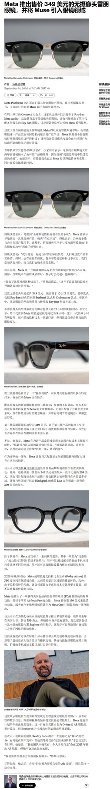
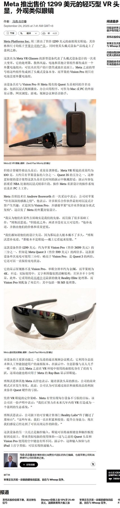

调研纪要 · 2026-09-24 新闻日报
星球 ID: 28855458518111 | 共 217 条帖子 | 精华 64 条
| 查看研究积累
强制同步到研究积累
全部 电子 计算机 其他 机械设备 电力设备 基础化工 食品饮料 医药生物 非银金融 有色金属 建筑材料 商贸零售 通信 轻工制造 宏观策略 国防军工 家用电器 建筑装饰 汽车 公用事业 纺织服饰 钢铁 社会服务 美容护理 交通运输 房地产 石油石化 传媒
书签
Meta发布VR眼镜，看好视涯硅基显示放量
Meta发布VR眼镜，看好视涯硅基显示放量
北京时间9月24日，Meta召开Connect 2026，#发布首款眼镜形态VR设备Meta VR Glasses（1,299.99美元，2027年春季发售）、#Ray-Ban Meta第三代和#首款音频眼镜Ray-Ban Meta Audio，并#宣布个人AI代理Muse将接入AI眼镜。据路透社报道，Muse能替用户购物、订旅行和填表，在美国和加拿大的App Store及Google Play免费榜上热度超过了ChatGPT。
会后，Meta和AI基础设施相关公司上涨。我们认为，#AI代理需要随时在线的穿戴入口，眼镜形态加速落地，看好视涯硅基OLED显示放量。
⭐VR眼镜：VR从头盔进入眼镜形态
头显约100克，是Quest 3的1/5，配两块2412×2288、120Hz的micro-OLED屏，#Meta史上分辨率最高的头显。
⚙️硅基显示：视涯有望受益放量
我们认为#眼镜形态刚需高PPI、轻薄的显示方案，硅基OLED有望成为XR主流路线。
💰AI眼镜：产品线扩至超100款，Muse上眼镜
Ray-Ban Meta第三代起售价449美元，Audio款349美元。公司称到年底AI眼镜将有超过100款可选，#穿戴成为Muse落地的主要载体。
智能眼镜：Meta加速AI融合，硬件聚焦眼镜
智能眼镜：Meta加速AI融合，硬件聚焦眼镜
[太阳]今日Meta Connect 2026大会AI眼镜新品聚焦#首款音频设备、Rayban Meta迭代，以及原有产品个性化更新；#我们认为背后映射出来的是其加速破圈的决心，26年已针对近视人群/女性用户推新，并加速AI深度融合（#Muse搭配智能眼镜可实现帮助用户打理日常生活，全程无需拿出手机），丰富产品&应用矩阵有望加速行业渗透率提升。
[玫瑰]Ray-Ban Meta Audio：音频产品，#旗下最轻、最纤薄的 AI 眼镜（较拍摄款轻6g），镜腿末端支持弯折，鼻托可调节或更换，铰链具备超大开合角度；单次充电后AI助手对话最长可使用12h（搭配充电盒后时长48h），起售价349美元。
[玫瑰]Rayban Meta 三代：新款迭代产品，共有 27 种镜框+镜片配色，时长较前代增加1h（增至9h），#音频/摄像（首批支持杜比全景声录制与回放的消费级设备）/舒适度均有改善，起售价449美元。
[玫瑰]Meta在原有系列中推出更多差异化单品，包括飞行员款Connect限量版（579美金）、Meta Glasses的Capri、Nova版型，Lisa、Kylie Jenner等巨星联名款、限量款，#并推出定制服务（自由组合镜框、镜片、收纳盒配色，打造专属风格）；Meta预计26年底Meta将有超百款眼镜选择。
[太阳]国内头部品牌新品将在本周集中上线。1）#Rokid新品今日将在数贸会进行全球首秀，据媒体预测，新品将为Rokid Glasses二代（支持拍照+单绿显示），同时创始人宣布全彩显示AI眼镜样机已下线；2）千问新品N1、N1 Pro（G1升级款，均为无显拍照眼镜）上市，影像方面升级明显，搭配 5000 万像素摄像头、感光面积提升49.8%，#其中Pro支持高精度眼动追踪系统、支持体征检测，有望成为未来重要应用场景。
[太阳]国内供应链持续收窄与海外技术差距，核心供应商#康纳特光学研发方向与行业大势完全重合，先发优势有望延续，业绩弹性有望在27年显现。
【中邮化工】上海化工园区装置发生运行异常，或影响TDI和MDI供应
【中邮化工】上海化工园区装置发生运行异常，或影响TDI和MDI供应
[礼物]根据上海警方9月23日晚发布信息，9月23日7时许，上海市楚华路某厂区内，一废气罐体在泄压过程中罐体破损，造成部分残留气体泄漏。根据上海化学工业区管委相关公示文件显示，该地址为巴斯夫化工有限公司的企业地址。
[礼物]巴斯夫在上海拥有16万吨/年TDI装置，拥有MDI32万吨/年MDI装置（与亨斯曼30万吨/年MDI装置在同一区域，两家公司曾长期以合资公司上海联恒共同运营MDI装置）。巴斯夫上海TDI产能约占国内7.8%，占全球4.3%。巴斯夫+亨斯曼上海MDI产能62万吨，约占国内12.0%，占全球5.5%。
[礼物]近期国内TDI价格约在17000元/吨附近运行，聚合MDI价格约在17800元/吨附近运行，整体平稳。9月23日，多家TDI和MDI供应商已暂时停止TDI和MDI产品对外报价。
[礼物]TDI方面，万华化学目前在国内拥有122万吨产能，全球147万吨产能。TDI价格每上涨1000元，若按100万吨销量粗测算，公司盈利增厚约8.5亿元。沧州大化拥有TDI产能16万吨，TDI价格每上涨1000元，公司盈利有望增厚约1.4亿元。
[礼物]MDI方面：万华化学拥有380万吨产能，MDI均价每上涨1000元，按300万吨销量粗测算，公司盈利有望增厚约26亿元。
[礼物]建议关注：万华化学、沧州大化
[太阳]风险提示：事件尚处于调查中，具体影响有待官方调查结论。
各位领导好，我们之前聊的欧洲载板和PCB公司奥特斯（AT&S）大涨10%，接近前高，就是他说载板景气度看到2030年
各位领导好，我们之前聊的欧洲载板和PCB公司奥特斯（AT&S）大涨10%，接近前高，就是他说载板景气度看到2030年
9月22日，AT&S公告与Marvell扩大长期合作，增加面向下一代AI和云基础设施的先进IC载板产能。更重要的是，AT&S确认：Marvell就是此前一直没有公布名字的“另一家领先科技公司”。此前市场只知道居林扩产由AMD+神秘客户支持，现在神秘客户揭晓为Marvell。这说明，AI带来的ABF需求已经从“英特尔/AMD CPU载板升级”，进一步扩散到Marvell这种AI ASIC和数据中心网络芯片。这意味着未来载板增量不只是GPU。
生益科技、兴森科技、深南电路、华正新材、宏昌电子、艾森股份
🍁🍁🍁阿拉丁也继续大涨 ai医疗逻辑真的很顺 ai资本家们最看重的就是医疗 未来明确可以看到大量试剂测试投入会替代很多科学家工资需求，创新药研发投入，最需要的除...
🍁🍁🍁阿拉丁也继续大涨 ai医疗逻辑真的很顺 ai资本家们最看重的就是医疗 未来明确可以看到大量试剂测试投入会替代很多科学家工资需求，创新药研发投入，最需要的除了蛋白外就是各种试剂，在ai医疗板块阿拉丁有业绩产品都有又明显滞涨，目前也有龙头ai公司已经在联系。以前是医疗公司投入创新药，以后ai公司也会做大量创新药前期研发，百普赛斯&阿拉丁看好。
🍁鼎阳 又鼎又阳[抱拳]pcb全检利好矢量分析仪，单台价格300万，1年需求大几千台，赛道容量甚至大于联讯。
🍁鼎阳 又鼎又阳[抱拳]pcb全检利好矢量分析仪，单台价格300万，1年需求大几千台，赛道容量甚至大于联讯。
有一个底部的票，慧博云通，之前大家都盯着他收购宝德。公司公告了预案，更新了宝德的最新财务数据。
有一个底部的票，慧博云通，之前大家都盯着他收购宝德。公司公告了预案，更新了宝德的最新财务数据。
去年收入109亿，今年H1做了70亿，同比翻倍。利润去年全年2亿，今年H1做了1.7亿，毛利率净利率都提升。存货从25年末的36亿，到现在的77亿，翻倍。合同负债从5亿到10亿，也是翻倍。
这个是华为链边际变化、预期差最大的公司了。
纳真科技重视
纳真科技重视
■光芯片业务很值钱
■稀缺全栈Idm，明年光芯片5亿业绩，整体35亿对应明年9x不到
#其实这个位置我都懒得上干货，太低估了
【国联民生电子】#富乐德： 芯片级 MTEC 散热、PCB 陶瓷基板、静电卡盘都非常超预期！继续猛 do！
【国联民生电子】#富乐德： 芯片级 MTEC 散热、PCB 陶瓷基板、静电卡盘都非常超预期！继续猛 do！
【国金计算机&金属】#光智科技：6英寸磷化铟获头部客户订单_集团高纯铟与高纯红磷保供
【国金计算机&金属】#光智科技：6英寸磷化铟获头部客户订单_集团高纯铟与高纯红磷保供
【1】#6英寸获全球头部客户订单_海外光通信龙头已批量出货
——订单：公司9月16日披露的投资者关系活动记录表显示，先锐科技磷化铟衬底已向国内外光通信芯片及器件厂商批量交付，国内覆盖头部光芯片企业，海外已向光通信龙头批量出货；其中，#6英寸磷化铟衬底已获得某全球头部客户订单，批量交付与客户认证同步推进。
——整合：根据投资协议，公司以增资方式取得先锐科技50.08%股权，增资总金额3.01亿元，承接先导科技集团全部磷化铟衬底资产。8月25日公告确认已完成股权交割及工商变更登记。
【2】#集团高纯铟与高纯红磷保供_布局大尺寸衬底升级
——供给：据公司披露，先导科技集团具备8N级高纯铟提纯及量产能力，可制备6.5N级以上高纯电子级红磷，为磷化铟业务提供原料保供基础；先锐同时具备核心设备自研自产能力。
——需求：公司表示，国内客户正由2、3英寸向4英寸过渡，海外客户正由4英寸向6英寸过渡，衬底扩产与客户认证周期较长；先锐已具备6英寸衬底批量供货能力。
——出口管理：自2025年2月4日起，磷化铟被纳入出口管制，相关出口须向国务院商务主管部门申请许可。
【3】#锗材料向器件及整机延伸_红外收入与毛利率提升
——产业链：据半年报，公司已研制13N超高纯锗单晶，形成从晶体材料、芯片、光学器件到探测器、机芯及整机的红外产业链；新设内蒙古光智矿业拟开展锗提纯，产品规划覆盖二氧化锗、四氯化锗及区熔锗锭等。
——经营：26H1红外光学产品收入10.61亿元，同比增长17.69%，毛利率32.67%，同比提升4.25个百分点；红外探测器及机芯模组合计占公司收入比重由7.49%升至29.13%。公司整体扣非归母净利润3,295.45万元，同比增长181.65%。
联系人：郑元昊/孙恺祈/吴晋恺/刘高畅
DeepSeek 年化营收达 10 亿美元，敲定 75 亿美元融资
DeepSeek 年化营收达 10 亿美元，敲定 75 亿美元融资
麦格理分享了晶圆产能增加时间表
麦格理分享了晶圆产能增加时间表
- 2027年DRAM晶圆产能：最大增加35万片/月。
- 2028年DRAM晶圆产能：最大增加45.5万片/月。
- 直到2028年NAND产能增加非常有限。
- 三星（20万）、$MU（23.5万）和$SKHY（22万）将在未来2年内全部增加
台积电据报道计划从2027年1月起将晶圆价格上调3%-6%
台积电据报道计划从2027年1月起将晶圆价格上调3%-6%
DigiTimes 表示，2nm和3nm的涨幅可能更大，因为这些节点的供不应求。
供应链消息人士表示：
• 8英寸产能利用率超过100%
• 小于45nm的产能已满载
• 订单可见至2030年
• 亚利桑那州的定价仍保持高位，因制造成本较高
需求由AI相关GPU、ASIC、HBM、电源芯片、控制器、模拟芯片、传感器、光学和先进封装驱动。
台积电拒绝置评
❗️【天风电新】AIDC液冷国产链：阿里发布144超节点，功耗带动液冷价值提升-0924
❗️【天风电新】AIDC液冷国产链：阿里发布144超节点，功耗带动液冷价值提升-0924
———————————
阿里2026云栖大会发布磐久AL144超节点，单柜144卡Scale Up架构，整机柜功耗650kW，单GPU功耗达到3500W。144超节点采用全液冷架构，存储、交换机同步升级为全液冷。
⭐144超节点液冷核心变化
#冷板覆盖范围大幅提升，从只覆盖GPU，升级为覆盖DIMM及后续NPO，交换机液冷架构带动增量。
#预计波纹管&快接头用量翻倍，功耗提升带动流量流速，预计单冷板将配套两套波纹管。
⭐️出货节奏
预计128卡超节点26年内出货约1000柜、27Q1出货3000柜，27Q2及后续128卡&144卡同步起量。
当前128卡超节点起量相对较慢，主要卡点在整机柜液冷测试环节，预计新一轮测试修正10月底完成、#11月开始有望加速。
⭐️继续看好AIDC液冷产业链
市场担心后续国产链价格和盈利，我们调研看当前国产超节点快速迭代，下游云厂商重心在快速稳定量产，而不是再分精力引入新供应商/降价。#27年144超节点迭代将进一步提升液冷供应商壁垒。
1、机柜内液冷【思泉新材】、【鸿富瀚】：预计144超节点起量、整机柜液冷价值量将进一步向上。此外，预计腾讯10月启动招标，看好两家公司再次获得高份额、形成27年增量。
2、国产超节点波纹管独供【五洋自控】：144超节点波纹管用量翻倍，预计高盈利将至少维持至144超节点27年稳定量产，当前净利率超40%，预计腾讯、字节同样为独供。
3、背板连接器莫仕授权二供&快接头潜在供应商【胜蓝股份】：看好连接器后续腾讯、字节获单可能性，快接头当前在阿里测试阶段，后续有望导入。
———————————
欢迎交流：孙潇雅/吴佩琳
为什么当前是投资ABF膜替代的绝佳时刻？
为什么当前是投资ABF膜替代的绝佳时刻？
近期CPU是全球主线，产业端ABF载板逻辑最顺（台股日股继续大涨），我们在当前时点强call ABF膜国产替代的大机会。
1、大空间。ABF膜整体市场空间2026年大约50亿人民币（味之素今年的预估ABF收入，95%市占率），未来3年受益GPU+AISC+CPU数量高增+层数增加+面积增加，3年CAGR100%，28年可触达TAM 200亿人民币。味之素目前已经基本满产，预计2030年前扩产50%，最多覆盖75亿人民币TAM，释放135亿需求供替代。#味之素目前2000亿人民币市值，替代的市值空间约4000亿市值，空间足够大。
2、好时点。为什么当前是投资替代的好时点？过去都是炒对日情绪，但我们要看基本面，产业调研显示日本味之素预计【Q4通知供应链转产】：公司最近已提前吹风客户，由于供应短缺加剧，将优先为AI和高阶应用分配资源。简单来说低端ABF不做了，专注高阶。这个能切实验证到，对应传闻的对华减产30%。
3、天和防务，国产替代方向预期差最大标的。1、首先公司市值最小，潜在空间最大；2、国产进展快，目前最快通过验证的国产ABF膜，已小批量出货HW/HWJ等头部GPU玩家；3、卡位稀缺，干法技术绕过湿法（味之素）专利，是目前最稳妥的替代方案，未来扩产速度快于湿法；4、与头部载板厂深入合作玻璃基板膜，未来在RCC、msap方向也有布局；5、董事长全额认购定增，看好公司未来前景。
4、宏昌电子，海外CPU预计进展顺利。公司载板膜主要合作台湾晶化，晶化有台积电的资源，也接近合作AMD和Intel，近期送样进展良好。
[红包]香港策略会AI制药quick update
[红包]香港策略会AI制药quick update
[咖啡]英矽智能
ADC新布局：公司AI新靶点新机制能力进一步提升，开发了新的ADC Payload Linker，后续有望搭建ADC平台。公司研发了一款全新的、区别于DXd、MMAE的ADC Payload，临床前数据已证明该payload可以克服耐药性，后续公司将推进该payload linker与不同抗体的组合研发。
[咖啡]晶泰控股
指引：①BD方面，2026年底前各模态（小分子、大分子、多肽、小核酸）预计均会有BD和研发服务进展落地，中长期未来目标每年完成2-3个首付款5000万-1亿美元级别的重磅BD交易。②业绩方面，预计不含并购、不含BD交易的有机收入增速预计每年保持50%以上。③公司定位从原来的药物研发服务商，转向“AI+自动化+自研管线”的AI时代制药企业。
大分子：已有3条管线处于IND-enabling阶段，2027年将推进至IND申报并进入临床，靶点和适应症均为抗体药物领域热度高、开发确定性强的方向，且通过AI赋能实现差异化。已招募原阿斯利康全球免疫与呼吸负责人带队，后续还有二十条管线储备。Ailux—晶泰的AI大分子主体年内将完成首轮独立融资。
东山精密 0924
东山精密 0924
Meta 是行业内最强的增量客户。行业普遍判断，Meta2026 年 800G 光模块需求为千万级别。
此前市场流传的 380 万 - 460 万只的预估量，专家认为这个数值明显偏低，和产业共识不匹配。
供应链订单格局正在快速变化：2026 上半年 800G 订单以中际旭创为主，下半年订单逐步转向索尔思（东山精密）。
按照专家给出的最新排名，索尔思当前已经位居第一，原龙头降至第二，菲尼萨与另一家厂商分列三、四位。
但需要说明，我个人并不完全认同该专家观点，目前缺少官方信息、多方产业信息交叉验证来证实这套竞争格局。
【国泰海通医药】诺诚健华宣布与礼来达成研发和授权许可战略合作
【国泰海通医药】诺诚健华宣布与礼来达成研发和授权许可战略合作
[玫瑰]诺诚健华与礼来达成研发和授权许可战略合作协议。根据协议条款，诺诚健华有权获得最高1亿美元的首付款和近期付款，以及最高32.5亿美元的开发和商业化里程碑付款。此外，诺诚健华有权就许可产品的年度净销售额收取个位数百分比的分级特许权使用费。
[玫瑰]26H1研发与商业化里程碑
[太阳]血液瘤领域：奥布替尼在澳大利亚获批上市，四获适应症全部纳入国家医保；mesutoclax联合奥布替尼治疗1L CLL/SLL固定疗程III期完成患者入组，联合阿扎胞苷治疗初治AML在中国启动注册性III期，针对r/r MCL的联合III期加速推进，单药治疗BTK经治MCL的ORR达84%。
[太阳]自免管线：
1）奥布替尼：ITP适应症NDA获受理；SLE III期临床加速推进，PPMS、SPMS两项全球注册III期同步开展。
2）两款差异化TYK2抑制剂迎来密集数据读出——soficitinib（ICP-332）治疗中重度特应性皮炎注册性III期达到主要终点，fadeucravacitinib（ICP-488）治疗银屑病注册III期达到主要终点及全部关键次要终点，二者均计划后续递交NDA。
3）VAV1分子胶降解剂ICP-538已成功入组患者并正在加速推进临床开发。
[太阳]实体瘤领域：佐来曲替尼治疗儿童实体瘤的上市申请获受理，其治疗NTRK融合基因实体瘤的ORR达100%；B7-H3 ADC（ICP-B794）、CDH17 ADC（ICP-B208）先后入组推进I期；PSMA/STEAP1双抗ADC新药ICP‑B381IND获受理
【华安机械】得邦照明：主业稳健+第二、三增长曲线明朗-20260924
【华安机械】得邦照明：主业稳健+第二、三增长曲线明朗-20260924
#1、主业稳健+高分红
通用照明业务收入35亿，占比81%（25年），成熟存量业务，行业中速增长，龙头份额扩张，LED国内出口前三，海外占比80%，#其中北美占比近30%。现金流稳健，分红稳定，历史股息率长期4%-5%。
#2、第二增长曲线：收购日系车载照明tier1浙江嘉利
得邦照明以14.54亿现金收购嘉利67.48%股份。浙江嘉利为日系主机厂车灯tier1供应商，2025年营收30亿，扣非前盈利1.4亿，扣非后497万。收购落地，近翻倍增厚主业收入利润规模。
#3、第三增长曲线：明确AI软硬件产业投资布局
1）公司以不超过5500万元自有资金参与横店柏晖创业投资，占合伙企业认缴出资总额的3.33%，或向AI大模型领域布局。
2）近期公司通过横店资本完成对国内高速车载SerDes芯片领先企业仁芯科技战略投资，后续向算力芯片方向布局。
[玫瑰]结论：公司当下市值140亿，展望公司稳态利润有望达5亿+（①假设嘉利稳态年利润修复叠加业绩增长至2亿+，对应增厚上市公司利润约1.4亿。②上市公司2025年归母净利2.6亿，中性估计公司主业年增20%，预计27年达3.7亿），#对应27年28xPE。#后续公司向AI软硬件（大模型、芯片等）进行产业投资布局。
【华福计算机】博杰股份：AI服务器检测设备王者，MLCC设备+磷化铟资产+液冷等多重共振 260924
【华福计算机】博杰股份：AI服务器检测设备王者，MLCC设备+磷化铟资产+液冷等多重共振 260924
#AI服务器检测：核心增长引擎、全球龙头地位稳固（具备稀缺性）。公司已实现对英伟达、谷歌逊等全球头部算力厂商和国内主流厂商的全面覆盖与供货，26H1新增订单同比增长近350%，目前在已进入的项目中份额可达60%以上。
#MLCC设备：充分受益AI需求MLCC扩产加速及国产替代。公司已覆盖超50%价值量的MLCC核心制程设备，在八轨高速测试机、叠层机等高端设备上取得关键突破，核心客户包括信维通信、三环、风华等，同时正在推进日韩、台系客户的导入工作。
#磷化铟：控股鼎泰芯源、卡位磷化铟核心赛道。鼎泰芯源是国内少数掌握磷化铟（InP）衬底核心技术的企业，技术来源于中科院半导体所。目前产品主打尺寸为3寸、4寸，6寸正重点研发推进，27年预计可支撑20-25万片有效产能，后续规划远期产能100万片。
#液冷检测设备&零部件期权价值凸显： 已成功将自研液冷技术融入GPU模组热管理液冷测试解决方案，可满足3500W散热需求，已实现小批量交付。7月成立控股子公司珠海博凛，专注于液冷零部件的研发、生产和销售，相关液冷零部件产品已实现重点客户送样。
[太阳]按分部估值，公司AI服务器检测设备+主业保守按200亿（明年有望至8亿+，25x），磷化铟贡献100亿+市值增量，MLCC设备&液冷期权等其他业务贡献50-100亿市值，看400亿，仍有较大空间！重点推荐！
[玫瑰]如需交流及近期资料，欢迎联系李乐群/钱劲宇
【国金计算机&科技】#奥尼电子：连续两笔合计32亿GPU采购订单_剑指算租AI推理之王
【国金计算机&科技】#奥尼电子：连续两笔合计32亿GPU采购订单_剑指算租AI推理之王
#连续两笔合计32亿GPU采购订单_剑指算租AI推理之王
——9月24日，公司全资子公司奥尼智能 与B公司签署了采购合同 向B公司采购GPU算力卡产品 合同总金额为23,226万美元(折合人民币约15.56亿元)。
——9月22日，公司全资子公司奥尼智能与A公司签署16.7亿元含税GPU算力卡采购合同，已正式生效。
——连续大额采购彰显公司极强的拿卡能力，剑指算租AI推理之王。
#Meta_Muse带动个人推理需求爆发_公司联手英伟达等_打造AI推理算力自有品牌
——Meta发布个人AI Agent Muse，可持续规划并执行任务，每个用户的Muse均运行于独立云端Secure VM，有望带动云端及本地推理需求增长。
——公司联手英伟达、AMD、沐曦等打造奥尼龙虾AI推理算力品牌，A2000搭载英伟达Jetson Thor芯片，拥有2070 FP4 TFLOPS算力及128GB LPDDR5X内存，最大可降低70%Token消耗。
——2026H1，公司实现营收9.07亿元（同比+215.44%），其中高性能计算设备收入5.08亿元（同比+1625.53%）、占总营收55.96%，毛利率同比提升9.53pct至14.71%，AI算力业务已成为第一大收入来源。
风险提示：宏观风险，市场竞争，需求不及预期等
联系人：郑元昊/陈芷婧/刘高畅
#重视奥尼电子：再下一城！
#重视奥尼电子：再下一城！
#子公司9.22号、9.24号陆续共计签订32亿元GPU算力卡采购合同
#行业迎来量价齐升强景气周期。Nebius拟10月1日起涨价落地，近全型号GPU卡上涨20%，国内算租涨价也在陆续落地中。
#聚焦推理算力，Q3业绩进入兑现期。AI算力服务器等新产品已实现规模化出货，其中AI推理算力产品进入规模化交付阶段。AI算力业务进入兑现阶段。算力收入将从5.08亿的H1基数上继续爬坡、利润弹性加速释放的兑现节点。
#重视奥尼电子：不积跬步无以至千里。
#子公司签16.7亿元GPU算力卡采购合同。相当于公司上半年高性能计算设备营收的3.3倍，表明管理层对算力租赁业务的战略定位已从“试水验证”升级为“重仓加码”。
#行业迎来量价齐升强景气周期。Nebius拟10月1日起涨价落地，近全型号GPU卡上涨20%，国内算租涨价也在陆续落地中。
#聚焦推理算力，Q3业绩进入兑现期。AI算力服务器等新产品已实现规模化出货，其中AI推理算力产品进入规模化交付阶段。AI算力业务开始从“投入期”转向“兑现期”。算力收入将从5.08亿的H1基数上继续爬坡、利润弹性加速释放的兑现节点。
【长江纺服】底部波司登重点推荐：主动调整迎接羽绒旺季，低估值高股息高胜率兼具
【长江纺服】底部波司登重点推荐：主动调整迎接羽绒旺季，低估值高股息高胜率兼具
✨#产品聚焦度与创新力更强劲。波司登6月订货会四大心智品类首次订单占比达73%（去年为59%），创新产品占比达50%（去年为30%-40%），四大心智品类及创新产品占比均显著提升，KJ&EH系列有效带动品牌势能增强及销售增量，产品聚焦&创新下ASP也得到有效提升。
✨#好产品带动好销售、旺季健康动销仍可期。4-8月波司登全渠道零售流水增长10%，线上（20%增长）优于线下（中单增长），直营（低双-中双增长）优于经销（个位数增长），动销积极且健康。基数逐渐提升下，8月单月直营流水仍强劲增长23%，产品聚焦&创新到终端动销路径跑通，旺季来临良性终端销售仍可期待。
✨#H1报表承压源于发货节奏的主动选择、而非终端走弱。FY2027H1波司登主动放缓经销商发货，退换货政策下部分经销商换货节点早于930，对H1收入形成短期扰动。OEM 5%-10%增长也为部分品牌订单挪移至下半年的短期影响。当前线上线下动销健康&经销商库存干净，经营主动调整更有利于下半年目标达成，公司也维持全年收入至少中单增长，利润增速快于收入增速的指引。
✨#股东回报稳定、坚持适当回购。集团预期维持80%左右的稳定分红比例，同时会进行适当回购，股东回报稳定且可持续。
✨综合而言，公司强供应链能力有效规避库存积压风险，品牌提档/渠道分层/产品创新开启新五年(创业3.0)，预计公司FY27-FY28实现归母净利润43/46亿元，当前对应PE分别为9.4/8.8X，80%分红率对应FY27股息率~9%，低估值高股息属性兼具，强安全边际且9-10月数据空窗期为全年又一高胜率布局窗口，旺季降临，预计20%+绝对收益，现价重点推荐！
☎长江纺服：于旭辉、陈信志
昆船智能：HNB薄片稀缺“卖水人”，调研超预期【西部新消费及创新】
昆船智能：HNB薄片稀缺“卖水人”，调研超预期【西部新消费及创新】
[玫瑰]仅薄片产线capex在百亿级别，昆船具有绝对优势：1）薄片完整小生产线年产750吨报价约5000万元，2000吨报价约1.2亿元，若以10% HNB渗透率计算，约需要20条万吨级别年产线，#capex在百亿元以上；# 2）从烟叶预处理到最后制成薄片，昆船可全流程覆盖，相较中烟旗下烟机企业强在全链路设计整合能力，相较华宝则强在设备能力；3）#目前已与中烟合作、小产线正在建设中#
[玫瑰]HNB若成熟，智能化生产/配送昆船也可享百亿级别capex增量：昆船在智能化升级、智能配送有独特优势，智能化本就为十五五规划目标，26H1因人事调整有所滞后，26H2预计改善、27H1预计提速（根据专家反馈，智能化升级单挑线昆船可承包至少是亿级别；智能配送需配送到县，虽单线价值量在千万级、但中烟配送线路数量至少在2000条）
虽各省级工业公司有部分HNB产线，但一方面更多为海外出口准备，另一方面多为造纸法、碾压法再造烟叶产业，稠浆法天生更适配HNB（高风味负载/气溶胶析出参数可控），稠浆法薄片产线建设是大的产业趋势。公司当前市值36e，百亿级别capex增量（仅指昆船能做且有绝对优势的/并非全产线），建议各位领导重点关注
欢迎私信，西部新消费及创新 张诗宇
🎯 #开关矩阵，将昂贵的矢量网络分析仪VNA从单件手工工具变为自动化产线核心的关键枢纽。对于AI服务器和光模块测试，它直接决定了测试效率、成本和规模化能力。【关...
🎯 #开关矩阵，将昂贵的矢量网络分析仪VNA从单件手工工具变为自动化产线核心的关键枢纽。对于AI服务器和光模块测试，它直接决定了测试效率、成本和规模化能力。【关注：海特高新】
☀1.#VNA通常只有2个或4个端口，但AI服务器和光模块中的被测对象端口众多。一个16×16 MIMO阵列需要测量256组通道配对。开关矩阵的核心作用，就是在不更换VNA主机的前提下，将一个2/4端口VNA扩展为N端口系统。
⭐2.#海特高新参股华芯科技：- *开关矩阵芯片（MMIC 裸芯片）*，是核心元器件；- 整机开关矩阵（仪器模块）：是把多颗这类芯片 + PCB + 壳体做成完整设备，**华芯不做整机仪器**，芯片卖给仪器厂商组装。国内少数量产 2–18GHz 宽带射频开关矩阵 MMIC 芯片厂商，科装 + 仪器双市场。
⭐3.#华芯（海威华芯）：化合物半导体晶圆代工厂 + 自有射频芯片产品，GaAs/GaN 射频芯片，除开关矩阵外还有低噪放、均衡器等射频 MMIC。应用场景：近期市场炒作的矢量网络分析仪、射频自动测试系统里面，射频开关矩阵是核心元器件，华芯是国产芯片供应商之一。
🍁🍁🍁三祥新材：5N实现量产，高纯铪进入业绩兑现阶段
🍁🍁🍁三祥新材：5N实现量产，高纯铪进入业绩兑现阶段
公司5N产线已实现量产，即将实现首批产品产出并启动多批次客户验证，Q4有望逐步完成客户导入，相关利润贡献逐步体现。
此前市场交易的核心逻辑主要集中于高纯铪产能及国产替代预期，当前随着产线从建设转向实际出货，产业逻辑开始进入兑现阶段。叠加海外铪供应存在收紧预期，国内高纯铪供应稀缺性进一步提升，公司产品有望受益于进口替代及价格上行。近期重点关注首批产品验证及Q4客户导入进展，继续推荐~
【招商电新】先导基电布局SOFC，未来空间巨大-20260924
【招商电新】先导基电布局SOFC，未来空间巨大-20260924
#上市公司布局SOFC核心环节
先导基电与广东固能合资成立元朔基电，上市公司持股65%，布局电解质片、金属连接体、超级电容、变压器、中高压开关柜，从电堆核心件进一步向BOP延伸。
#优势明显，在BE供应商内地位可能大幅提升
先导集团本身具备材料+设备优势，已与BE深度合作，未来地位可能大幅提升。同时，后续SOFC新单原则上导入合资公司，上市公司盈利弹性大。
电解质：集团旗下KV Materials已切入BE电解质材料供应链，KV供应包括氧化钪在内的电解质原材料/粉体，Amosense进一步加工为陶瓷电解质基板供应BE。
连接体：压机壁垒高，公司依托材料和设备能力向中游制造延伸。
超级电容：公司炭粉已和合作伙伴提前布局。
#核心逻辑是单GW价值量持续提升
先导不单纯卖材料，公司从材料→电解质片/连接体→超级电容/变压器/开关柜不断往下游延伸，覆盖SOFC系统更多高价值量环节。
#估值想象空间大
27年公司处于产能爬坡阶段，同时BE自身也有一些瓶颈，我们预计28年弹性更大。假设2028年BE SOFC出货8GW，单GW BOM约18亿美元，先导可覆盖70% BOM，对应环节市占率50%，净利率20%，上市公司权益65%，对应归母利润约46亿元，假设给PE 25x，原有业务值200亿，整体估值可达1300亿元以上。另外不排除未来持续收购剩余35%股权的可能性。
此外公司还有离子注入机、先导微电子、科学仪器等业务，整体逻辑是先导集团优质资产持续证券化+SOFC高弹性放量。继续重点推荐！
[礼物]Meta Connect 2026要点：Muse定位个人Agent，眼镜序列上新拓展【中信电子】
[礼物]Meta Connect 2026要点：Muse定位个人Agent，眼镜序列上新拓展【中信电子】
[庆祝]新品售价及发售时间：
1）Ray-Ban Meta Audio：349 美元起，已开启预订，10 月 13 日发货。
2）Ray-Ban Meta Gen 3：449 美元起，已开售。
3）Meta VR Glasses：1,299.99 美元，2027 年春季开售。
4）Meta Glasses 新款式：Adventurer 249 美元起，10 月 23 日开售；LISA 联名款及 Kylie Jenner Starfire 新配色均为 399 美元起。
📍Muse：从回答问题走向代用户完成任务。 Muse 是 Meta 的个人 AI Agent，由 Muse Spark 模型驱动。用户可通过对话交代日常任务或长期目标，Muse 能制定行动计划，并跨应用执行信息查询、填写表单、安排行程等操作；对于耗时任务，它可持续推进，并在需要用户决定时反馈。Muse 运行在独立的安全虚拟机中，用户可管理其应用访问权限；发送邮件、购物等敏感操作需要用户确认。此次发布会的重点是将 Muse 延伸至 AI 眼镜，让用户通过语音调用个人 Agent。
1️⃣Ray-Ban Meta Audio：音频与 AI 融合。 不配备摄像头，采用开放式扬声器，支持音乐、通话和语音调用 Meta AI。眼镜重约 43g，单次充电最长使用 12 小时，充电盒额外提供最长 48 小时续航；提供 Clubmaster、Burbank 两种框型，支持处方镜片。
2️⃣Ray-Ban Meta Gen 3：拍摄、拾音和续航升级。 单次充电最长使用 9 小时，较 Gen 2 增加 1 小时；6 麦克风阵列可削减超过 90% 的背景噪声。配备 1200 万像素摄像头，支持 3K 视频和动态照片，新增可自定义操作键；提供 Aviator、Zena、Wayfarer 三种框型。
3️⃣Meta VR Glasses：分体式设计拓展影音与办公场景。 眼镜重约 100g，采用 micro-OLED 5K 显示屏和 pancake 镜片，支持杜比视界、空间音频，以及眼动和手势操作；可创建多屏工作区，并将桌面等平面用作虚拟键盘与触控板。
📌建议关注：领益智造、蓝思科技、歌尔股份、水晶光电、蓝特光学、龙旗科技、环旭电子、舜宇光学、恒玄科技等
🔥调整即是机会！持续重点推荐创新产业链、景气持续验证、AI4S驱动估值重塑、积极把握新一轮研发生产扩张周期！
🔥调整即是机会！持续重点推荐创新产业链、景气持续验证、AI4S驱动估值重塑、积极把握新一轮研发生产扩张周期！
🚀#需求端持续向好、AI4S技术持续突破、行业高景气有望持续。①9月23日，国家主席应美国总统邀请，对美国进行国事访问，我们预计地缘博弈悲观预期有望逐步改善；②9月23日，Anthropic自建实验室确认重大突破：AI独立找到类CRISPR新机制；③多家海外产业链公司业绩展望持续乐观，#赛默飞世尔科技 2026年收入指引上调至约4%，2028年长期目标约7%，#查尔斯河 预计第三季度开始下半年业务明显改善；④多家国内产业链公司2026H1订单强劲增长，为后续业绩高增奠定基础，#药明康德 在手订单同比+25%，#药明合联 未完成服务订单同比+50% ；#凯莱英 在手订单同比+54%；#康龙化成 新签订单同比+30%
🚀#AI4S大分子需求旺盛、有望为板块估值抬升提供强劲催化。①自动化湿实验平台构筑先发壁垒：头部公司在长周期项目中沉淀了高质量、标准化数据，叠加自动化产线与算力，形成“数据—模型—实验—数据”闭环，这是AI制药领域最稀缺的复利型资产，先发优势显著；②估值体系有望重塑：板块估值有望从传统“人力效率”锚定向“技术平台+数据资产”切换，具备闭环能力的平台型公司有望享受系统性估值溢价。
🚀#行业景气持续向上、积极把握新一轮研发生产扩张周期。重点关注：①外需持续向好：药明康德、药明生物、药明合联、凯莱英、康龙化成、博腾股份、普洛药业、九洲药业、皓元医药、药石科技、毕得医药、睿智医药、维亚生物、方达控股等；②内需边际改善：泰格医药、普蕊斯、诺思格、博济医药、昭衍新药、美迪西、益诺思、阳光诺和、百诚医药等；③AI制药：药明康德、康龙化成、金斯瑞生物科技、成都先导、英矽智能、晶泰控股、百普赛斯、近岸蛋白、义翘神州、泓博医药等；④生命科学：百奥赛图、药康生物、奥浦迈、纳微科技、赛分科技、昊帆生物等。
☁ 专题报告：
s.c1ns.cn ↗
💡风险提示：研发投入不及预期的风险、项目成功率不及预期的风险、AI+制药应用不及预期的风险、地缘博弈加剧的风险。
交易台 - 高盛中国午盘
交易台 - 高盛中国午盘
上证综指-0.93% 科创50-1.53%
上证50-1.14% 创业板指-1.84%
沪深300-1.29% 中证500-1.63%
总成交额(万亿元人民币) 1.08 环比下降7.69%
A股表现逊于港股，上证指数回落至3900点关口附近。成交额进一步萎缩，预计全天略高于1.6万亿元人民币。市场疲软呈现普遍性，本地投资者试图在长假前获利了结。技术面因素也可能起到推波助澜的作用，因上证指数已跌破10日、20日和60日均线。中美关系方面，两个月的贸易延期似乎使短期预期偏向悲观。板块层面，成长股整体跑输大盘，其中消费、CRO及半导体个股领跌。银行和电力设备是唯一收涨的板块，显示出防御性配置特征。
资金流向：我们在名义金额较低的情况下，卖出力度是买入力度的1.2倍。我们增持公用事业和医疗保健板块，减持PCB和CPO板块。
[红包]【申万宏源智能科技】算电协同：设施升级先行，运营价值渐显——算电协同深度1暨GenAI系列之76
[红包]【申万宏源智能科技】算电协同：设施升级先行，运营价值渐显——算电协同深度1暨GenAI系列之76
#算电协同催化渐显：9月国常会明确推动算电协同，加快绿电直连和源网荷储项目落地；9月15日英伟达展示AI工厂灵活负载及电力优化实践成果。AI趋势下的算电协同重要性提升
#本篇深度主要梳理算电协同产业的投资框架，包括电力资源与数据中心运营、供配电与温控储能、算力调度与算电接口等产业链板块，并比较中美在电源组合、电网接入及设施升级上的路径分野。
[爱心]AI用电增长与新能源消纳共同驱动，政策由空间布局延伸至运行协同。算力稳定用电需求与新能源出力、资源分布存在时空错配。政策从“东数西算”逐步延伸至绿电直连、双向调度及市场化交易，推动投资机会从设施建设向运营提效拓展。
[烟花]电价差创造运行收益，配套投入决定项目回报。绿电直连可降低用电成本，但专线、变电和储能投入可能削弱价差优势。同一电价等假设下，复用接入、新建35kV及110kV设施的项目IRR分别约10.8%、8.4%、5.9%，需同时关注低价电力与设施复用条件。
[烟花]算力调度提升效率与负荷弹性，算电接口连接执行与收益。调度系统在任务交付约束下调整运行时间、地点及功率，接口统一电力信号、计量口径和控制权限。商业化收入涵盖软件、集成及持续服务，需求响应提供增量激励，重点看付费客户和跨项目复制。
[烟花]中美供电目标趋同，资源与产业优势塑造不同路径。中国依托跨区输电及设备、电池制造基础；美国部分区域接入受限，电网扩容、长期购电与现场供电并行。高密度AI机柜共同推动800V直流、液冷和储能备用升级，制造优势仍需客户认证与批量交付验证。
[太阳]投资分析意见：沿设施升级、资源运营、调度与接口三条主线布局，区分订单兑现与持续服务空间。#设施关注供配电、液冷和储能需求，金盘科技、中恒电气、欧陆通、英维克等；#运营关注电力接入、客户上架及资本回报，润泽科技、万国数据、东阳光等；#软件端关注系统接入、付费客户与跨项目复制，朗新科技、国能日新等。
风险提示：需求及项目落地不及预期、电价差收窄、配套投资超预期、调节收益及技术商业化不及预期。
[咖啡]weixin://dl/business/?t=CvrVTppgR4u
交换机&交换芯片更新—0924
交换机&交换芯片更新—0924
1️⃣#未来两年交换芯片有望复刻23-25年的GPU国产化路径。国资委调查发现，国内数据中心交换芯片，近90%使用博通，首次提出交换芯片国产化要求。为推动“国芯国用”，或对交换芯片国产化提出窗口指导要求。
2️⃣#撬动200亿交换芯片信创市场。楠菲微招股书显示，25-27中国以太网交换芯片市场规模257/356/457亿元。假设50%的国产化要求，未来两年新增约200亿信创市场。
3️⃣主要交换芯片厂商进展更新：
#中兴： 51.2T获得移动小批量订单，阿里集群测试点亮，字节、腾讯送测中。
#盛科： 25.6T重点突破互联网客户；51.2T已回片，字节送测中。
#紫光： 51.2T预计26年底回片。
白酒中秋国庆双节渠道跟踪反馈
白酒中秋国庆双节渠道跟踪反馈
[玫瑰]中秋国庆白酒消费延续筑底特征，渠道普遍预计双节动销同比持平至小幅下滑，部分品牌的价盘和库存改善先于需求修复。分场景看，政商务招待仍偏弱，高端礼赠和大众聚饮相对有韧性，宴席需求在低基数下有所恢复，但多数地区仍存在场次增加、单场规模和用酒规格下降的情况，对应100—200元价位表现占优，300—800元次高端继续承压。渠道延续小批量、高频备货，旺季需求释放偏后，节前最后一周及假期动销仍是重要观察窗口。
[玫瑰]高端酒中，茅五表现相对领先。飞天茅台多数区域反馈较好，双节动销预计个位数增长，渠道库存约10—15天，近期批价回升至1750元附近，体现礼赠刚需与供给约束下的量价韧性；非标和系列酒则分化较大。普五在四川、河南等市场动销增长，部分承接高度国窖份额，近期随回款到货，批价回落至770—790元。高度国窖费用前置、库存补贴等政策已带动局部市场走货加快，但整体动销仍承压，低度产品在优势区域表现更稳。
[玫瑰]区域酒的修复主要集中在大众价位和优势市场，品牌、区域之间差异仍大。安徽受宴席及居民消费支撑，古井、迎驾下半年动销好于上半年，迎驾洞6、洞9表现较优，古井古16承接商务降档与宴席升级需求，古20仍有压力。江苏市场今世缘核心单品整体表现优于洋河，淡雅、柔雅、单开相对占优，但江苏不同渠道的反馈差异明显，部分市场高价位产品仍有较大降幅。洋河去库存取得进展，需求和份额修复仍需时间。
[玫瑰]次高端仍受商务需求偏弱拖累，头部单品相对抗压。青花20、红花郎、剑南春、茅台1935等在部分市场表现好于同价位竞品，背后既有品牌份额集中，也有价格调整后性价比提升、宴席渗透加深的贡献。汾酒二季度去库存后，近期青花系列价盘和节前动销预期有所改善，但区域表现仍不均衡；水井坊、品味舍得等部分渠道反馈降幅收窄，整体仍处调整阶段。
⭕维持今年全球锂电3153GWh需求预期不变，电池出货超预期
⭕维持今年全球锂电3153GWh需求预期不变，电池出货超预期
今年受峰谷电价波动影响国内储能装部分项目有延迟或对实际装机数据的略有影响，#但海外需求旺盛下电池出口超预期。
年初各家电池厂的出货预期现在来看基本都能兑现，#储能电池出货量加总后仍在1100+GWh没有变化，排产端材料环节各家公司仍处于满产状态。
#我们依然维持今年全年锂电3153GWh需求预期不变，同比高增40%+，明年预计锂电需求4042-4167GWh，同比+28%-32%。
铜基本面数据更新20260924
铜基本面数据更新20260924
#智利下调2026年铜产量预期。智利国家铜业委员会（Cochilco）最新将2026年智利铜产量预期下调至527万吨，较2025年下降2.6%，较2025年11月做出的560万吨的指引相去甚远。本轮产量下滑并非源于大规模停产，而更多体现为矿石品位下降、计划检修、项目爬坡进度低于预期以及部分老矿运营约束等结构性因素。过去几年，为弥补品位下降带来的影响，智利多数矿山持续提高采选处理量，但由于单位矿石含铜量下降，铜精矿含铜产量提升幅度明显弱于处理量增长，这也是今年以来智利铜矿普遍面临的共同特征。
#铜精矿TC下降至负225美元/吨，冶炼厂减产压力攀升。硫酸价格仍在下行，铜精矿现货TC再度刷新历史最低值至负225美元/吨，冶炼厂亏损数值已超3200元/吨（采购铜精矿现货算上副产品收益）。冶炼厂对深度负TC的接受度下降，TC跌幅逐渐放缓。8月国内电解铜产量114.7万吨，同比下滑2.09%；1-8月国内电解铜产量929.49万吨，累计增幅为3.98%。10月11月国内多家铜冶炼厂将进行检修，冷料补充受限，电解铜产量面临下行压力。
#前8个月精炼铜消费累计增长1.8%。1-8月国内精炼铜表需=产量+净进口-库存变动=929.5+147+8.5=1085吨，同比增加19万吨，累计增速1.8%。8月铜材开工率走低，企业原料库存下降成品库存上升。
#总结与展望：难解的现货矛盾推动铜价逆美联储加息上行。面对美联储相对确定的年内仍有1次加息的不利情形，铜价已然再次逼近前高，主要是现货端的短缺矛盾太过突出。现有现货升水超1000元/吨，后有智利铜矿工会组织罢工，还有国内冶炼厂将进行检修，均在加深供应端矛盾，推动铜价进一步上行。月底美国铜关税大概率悬而不决，限制COMEX倒流。继续推荐该板块标的，待价格新高完成估值切换。
铝基本面数据更新20260924
铝基本面数据更新20260924
#氧化铝价格上不去也下不来。国内氧化铝运行产能快速上行至9910万吨，相较4500万吨电解铝需求显然过剩，沉甸甸地压制价格上方空间。当前铝土矿CIF报价在71.5美元，海运费用限制住了外矿CIF的下跌，山西外矿氧化铝现金成本为2850元/吨，自此也限制了氧化铝2600元/吨以下的空间。
#2026年1-8月电解铝表需扩大至1.4%。1-8月国内电解铝累计产出3020万吨，同比增加67万吨，同比增长2.4%。原铝净进口149万吨，同比减少7万吨。考虑铝锭+铝棒库存变动，国内原铝的表需3152万吨，较去年同期增加57万吨即1.4%。今年废旧金属回收的税票问题突出，废铝有所减量，精废替代放大了原铝的消费。
#月度行业利润劈叉，季度环比收缩。9月23日铝价24210元/吨，自备电单吨含税利润7870元/吨，网电单吨含税7810元/吨，铝价上升，但煤炭价格上行吞噬自备电利润，环比自备电铝厂利润小幅下滑，网电小幅回升。2026年7月至今自备电和网电含税平均利润为7800元/吨、7230元/吨，环比2026Q2下降820元/吨、下降580元/吨。
#总结与展望：期货的强现实VS股票的弱预期。最新的国内现货库存已经下降至65万吨，显著快于市场预期，出口未见明显回落且供应端废料问题都支撑着社库的进一步下降，为铝价冲击24500/25000提供动力，维持强现实状态。近期百通、宏旺境外投资电解铝的ODI获批引发股票端对远期行业格局变差的担忧，这两个项目有特殊性，尚不能说明新的ODI审批力度，还需进一步观察，当前权益端计价已足够悲观。
#丢掉烦恼，安心过节，假期愉快[太阳]
德福专家调研更新（0924）：
德福专家调研更新（0924）：
#重视锂电铜箔价的提升和PCB铜箔量的提升带来的戴维斯双击机会！！！
1.锂电铜箔这一轮铜箔加工费的普涨，幅度基本在1000-2000元每吨这个区间，折算下来差不多就是10%左右的涨幅。#目前在C处已完成涨价落地。过去几年锂电铜箔需求一直在高增长，但前期规划的大量产能在去年底今年初集中释放完之后，进入三季度反而没什么新增有效产能了，叠加未来新产能基本都切往HVLP，加上老产能技改，所以锂电铜箔非常大概率一直维持紧平衡态势，后续根据供需情况可能还会继续涨价。
2.月均HVLP出货已经开始看向1000吨，明年Q1大概率实现突破，而溢价最高的HVLP4占比也在不断提升，预计年底能够达到HVLP出货的20%以上，明年有望达到30-50%
3.载体铜箔目前已经小批量，Q4随着大客户1.6T出货一起放量，利润率很可观
🌊 中信主题策略刘易团队-“跨界液冷”主题之【长缆科技002879】逆势走强点评-“绝缘材料平台”已见雏形浸没式液冷项目泉涌
🌊 中信主题策略刘易团队-“跨界液冷”主题之【长缆科技002879】逆势走强点评-“绝缘材料平台”已见雏形浸没式液冷项目泉涌
#液冷正从“可选配置”到“刚性基建”，从“空间预期”到“订单加速”
1、英伟达官方定义Rubin为''全球首个实现100%液冷''的AI基础设施，系统内无任何风扇。节奏来看，2026年1月发布，5月底进入生产爬坡，Q3量产、Q4起交付，2026年末-2027年进入大规模上量阶段，我们预计量产节奏将会前置👊
[玫瑰]昨日，公司于杭州云酷智能举行现场调研，我们就液冷战略、材料协同与订单节奏做了集中交流。核心结论：公司把液冷定位为“绝缘材料在新兴应用领域的延伸”，路径是材料研发→参股云酷智能→集团设立液冷产品事业部，正把自身能力圈从“电缆附件+变压器油”扩到AIDC散热的材料与系统两端。
#切入逻辑：材料同源，并非跨界。电缆附件与变压器油解决降温、绝缘（及灭弧），浸没式冷却液解决绝缘、降温、流动性、兼容性与腐蚀，底层都是绝缘材料的配方与工程能力；公司在变压器油及电缆附件用硅油上有多年经验。从材料研发入手，通过产业投资云酷智能、设立液冷产品事业部来发展液冷产业。公司硅基（低黏度单相浸没硅油）与双江能源碳氢类均处试验验证阶段，云酷现阶段多用自有KeenCool 2005。
#云酷智能：专注浸没式，客户与标杆项目已落地
1、客户与项目。云酷智能公司的产品与浪潮、联想、新华三等有较好的适配，终端客户覆盖电信运营商、国家电网、南方电网、政企/地方及算力租赁；标杆项目包括上海青浦云湖、金华海星云、长兴吉利试点，以及甘肃隆德大型浸没式/预制化数据中心，后者交付后有望成为国内较大的商用浸没式液冷IDC之一。
2、路线判断。冷板仍占主流（NV GPU主流方案，适合大型集群改造），浸没式优势在边缘侧、低PUE、静音与高海拔高湿场景，两者长期共存；单相与双相各有适用场景，云酷坚持单相浸没。
☎欢迎来电探讨！中信主题策略 刘易/田鹏/王涛/白弘伟
[红包]胜蓝股份更新：112G高速背板连接器9月起正式交付国内头部客户，后续业绩释放潜力巨大。另外公司在国内另一家头部客户CX2方案已基本确定，高速背板当前仍处...
[红包]胜蓝股份更新：112G高速背板连接器9月起正式交付国内头部客户，后续业绩释放潜力巨大。另外公司在国内另一家头部客户CX2方案已基本确定，高速背板当前仍处于测试中，预计年内出结果，潜在增量进一步明确，当前时间点继续强推！（华创电子高远）
[拳头]【宝丰能源】成本优势筑底，煤制烯烃龙头有望穿越周期
[拳头]【宝丰能源】成本优势筑底，煤制烯烃龙头有望穿越周期
🌟宝丰能源是国内领先、全球规模最大的煤制烯烃龙头企业，截至2025年底，公司已形成520万吨烯烃、700万吨焦炭、135万吨精细化工产能，产能规模跃居国内煤制烯烃行业第一位，占全国总产能约34%。2015-2025年归母净利润CAGR达22.3%，2025年实现归母净利润114亿元，同比+79%，26H1公司归母净利润为97亿元，同比+70%，业绩长期增长能力显著。
🌟我国“富煤贫油少气”的能源资源结构决定了发展煤化工行业的必要性，2025年我国原油对外依存度达73%，能源安全战略下现代煤化工战略价值凸显。政策层面，国家持续从严从紧控制现代煤化工产能规模，存量煤化工装置稀缺性日益凸显，未来有限的化工用煤指标将更集中于龙头企业。截至2026年9月15日，煤制乙烯的理论日度利润为1744元/吨，较石脑油路线高出约2700元/吨；煤制丙烯的理论日度利润为767元/吨，是唯一实现理论盈利的丙烯工艺路线。高油价背景下，煤制烯烃路线的原料成本优势有望持续体现。
🌟2025年，公司聚烯烃吨均成本约为4426元/吨，显著低于同业。公司单吨烯烃综合成本优势持续巩固，吨投资水平显著低于行业平均。在煤价600元/吨、油价80美元/桶的中性条件下，公司烯烃单吨净利约2300元/吨；若油价从80美元/桶上涨至100美元/桶，烯烃业务年化净利润有望增厚约38亿元，高油价时期业绩弹性显著。即便在煤价涨至900元/吨的极端情形下，只要油价高于55美元/桶，公司烯烃业务仍可维持盈利。公司烯烃产能与产量增长构成其业绩穿越化工行业周期的核心驱动力，宁东四期、新疆等项目有望梯次推进，综合竞争力有望增强。
[庆祝]预计公司26-28年公司归母净利润分别为174、187、190亿元，维持“增持”评级。
[礼物]风险提示：产品价格波动风险；原材料价格上涨风险；项目投产进度不及预期。
🎉欢迎交流
[红包]金洲管道液冷业务更新
[红包]金洲管道液冷业务更新
[太阳]业务定位：公司持有子公司51%的股权，聚焦液冷系统内细分部件业务，所做产品部件占单台液冷系统总货值的20%；长期战略目标为打造涵盖支架、检测、焊接、设计的全链条ODM能力，为国内液冷客户提供液冷系统集成服务。
[太阳]客户来源：目前主要对接台系客户，目标是成为核心客户体系内大陆最大的供应商。
[太阳]订单情况：8月产值超过1000万元，目前未完成订单约2000多万，下游需求比较旺盛，客户订单具备跳跃式增长的特点，一旦通过初始验证后续订单会快速增加。
[太阳]产能规划：一期项目陆续投产，满产后单月产值5000万元；二期工厂预计2027年年初开工建设，三个月可建成投产；三期工厂规划2027年6-7月投产；二、三期全部满产后月产值总共可达到1.5-1.7亿元。再后面的产能规划可能会考虑通过发展外协来完成订单。目前业务净利率比较高，行业成熟后稳态净利率或有10-20%。
[红包]中源协和
[红包]中源协和
基因编辑 + 干细胞双主线标的。子公司傲锐东源手握 CRISPR 基因编辑科研产品，拥有海量基因克隆库，服务全球顶尖科研机构。同时手握稀缺脐血库牌照，干细胞存储 + 细胞新药研发并行。基因编辑风口来袭，叠加细胞治疗催化，精准医疗全产业链布局，弹性充足
[爱心]振华股份，持续重点推荐买入20260924
[爱心]振华股份，持续重点推荐买入20260924
铬盐全产业链价格跳涨：9.23振华股份发布涨价函，重铬酸钠+1000元/吨，铬酸酐2000元/吨，氧化铬绿+3000元/吨，铬金属4000元/吨，涨价幅度较大。9.24日银河发布产业链同等幅度涨价函。
铬盐产业链供给脆弱性凸显：
26-28年铬盐及铬金属新增有限且由振华主导。继本月初行业某20万吨铬盐规划产能近期被叫停，该公司本部及子公司铬盐及铬绿产能受环保影响再传部分停产，供给端刚性且脆弱。
需求端有望爆发式增长：数据中心模块式供电带来SOFC需求快速增长。以当前BE排产测算26-28年带动数万吨铬金属新增需求，铬金属紧缺将成为必然。
振华股份当前已通过国内头部连接件企业形成BE有效供应，正在送样国内外头部企。我们认为随着铬金属26年四季度随着潜在收储及SOFC铬金属订单交付，量价都有实质性催化，板块有望迎来主升行情。
报告：20260825振华股份首次覆盖《铬化学品龙头，新需求多极增长》
铬盐/铬金属供需测算，公司详细拆分预测欢迎联系15121118521
👔Arm 投资者关系副总裁 Ian Thornton 举行投资者交流会
👔Arm 投资者关系副总裁 Ian Thornton 举行投资者交流会
🤖一、商用 AGI CPU 即将推出
📌NVIDIA、AWS、微软、谷歌等授权及版税客户正在大规模落地基于 Arm 架构的全新计算平台（CPU、DPU），新一代 GPU、XPU 将于 2026 年下半年开始规模化部署。
📊云 / AI 相关版税在上财年占总版税收入的 14%，该板块收入同比增速持续达到 2 倍。
📈本财年（FY27）Arm 服务器 CPU 版税占总版税比重有望突破 10%。
🔧除服务器 CPU 之外，云与 AI 板块版税增长还来自多类硬件：商用 / 专用芯片形态的智能网卡 SmartNIC/DPU、搭载 Arm 内核的网络交换路由芯片、内置 Arm 内核的 eSSD 存储控制器芯片。
🚀Arm 自研 3nm 商用 CPU 芯片方案（Arm AGI）进展符合预期，预计 2027 财年第四季度（2027 年 3 月季度）实现初步放量，对应营收规模超 1 亿美元。
⚙️二、3nm AGI CPU 芯片供给保障信心提升，FY27‑FY28 目标营收超 10 亿美元，但毛利率或承压；下一代 2nm 版本稳步推进
📈对比上一次财报电话会，管理层对获取更多 3nm AGI CPU 产能供给的信心进一步增强，目标在 2027‑2028 财年实现 AGI CPU 芯片销售超 10 亿美元（已有锁定订单及对应产能），核心客户为 Meta；市场潜在需求规模可达 20 亿美元以上。
⚠️风险点：若要拿到更多产能，晶圆、基板、封装等生产成本会抬升，毛利率可能会低于 30%+ 的目标区间。公司将抢占客户与应用市场份额放在优先位置，可以接受毛利率小幅下行。
🔜下一代 2nm AGI CPU 设计工作进展顺利，计划 2027 年下半年完成初步落地部署。
🏭三、工业、汽车、物联网嵌入式市场：Ethos NPU AI 算力芯片渗透率提升，中长期拉动版税收入
📈在工业、汽车、物联网嵌入式赛道，Arm Ethos 系列神经网络 NPU AI 加速芯片渗透率持续走高，为中长期嵌入式业务版税增长带来利好。
💻大量微控制器、嵌入式处理器厂商正在推出集成 Arm Ethos NPU 的 MCU/MPU 新品，用于 AI 与机器学习任务，预计该板块可带来15%‑20%的版税收入增量。
🎯重点落地场景：物理世界 AI、小参数 AI 模型、机器人、图像音频处理、媒体处理。
VR Glasses亮相，Muse赋能AI眼镜打造全天候Personal Agent
VR Glasses亮相，Muse赋能AI眼镜打造全天候Personal Agent
🚀AI眼镜：首发纯音频产品，产品矩阵持续扩容
➠Ray-Ban Meta Audio：首款无摄像头纯音频AI眼镜，$349起，取消Camera、保留6麦克风+开放式扬声器，续航12h；核心定位从“拍摄+AI”转向更轻量的“开放式耳机+全天候AI入口”。
➠Ray-Ban Meta Gen 3：主力Camera AI眼镜常规迭代，$449起，续航提升至9h，并升级6麦克风、Action Button等。
➠Meta Glasses：26年6月发布的自有品牌，本次新增框型/Lisa联名款，起售价降低$50至$249。
🚀MR：Meta VR Glasses正式亮相，2027年上市
➠形态和显示：此前Project Phoenix，采用约100g眼镜+外置Compute Puck架构，通过算力/电池外置显著降低头戴重量；搭载 Micro OLED 5K Infinite Display、超薄 Pancake 镜片，像素密度37 PPD。
➠续航和交互：外置单元支持最长3小时连续高清视频播放及45W快充；支持眼动、手势、语音交互；首发提供超过75款纯手势游戏。
➠定价：预计2027年春季上市，定价$1,299。
🚀Muse：推动AI眼镜从AI助手走向全天候Personal Agent入口
➠Muse：可调用浏览器、Email、Calendar等工具并在后台持续执行任务，本次进一步向AI眼镜延伸，未来可直接通过眼镜调用Muse完成购物、健身指导、记录等任务。
➠Muse Charm：钥匙扣大小的独立设备，集成实时语音及虚拟形象交互，按下指纹传感器即可唤起 Muse；计划在今年12月假日季上市，售价尚未公布。
➠我们认为，Muse与眼镜结合后，产品价值有望从“Camera/音频+AI问答”进一步转向“全天候Personal Agent入口”。
[礼物]核心标的：
歌尔股份、视涯科技、水晶光电、豪威集团、恒玄科技、佰维存储、星宸科技、龙旗科技等
风险提示：销量不及预期；新品渗透迭代不及预期等
【长江社服】酒店行业周度数据更新
【长江社服】酒店行业周度数据更新
2026年第38周（09.13-09.19），STR口径
[烟花]中国大陆整体：RevPAR同比-1.8%，OCC和ADR分别同比-2.0%/+0.1%
[烟花]三大酒店集团：RevPAR同比-2.2%，OCC和ADR分别同比-2.8%/+0.6%
[烟花]分层次，奢华、中高端、经济型的RevPAR分别同比-1.4% /-3.9%/-2.7%
酒店数据点评
节前调休出行淡季，酒店整体RevPAR同比转负。长期看，政策指引叠加产业趋势，看好服务消费发展潜力。2026年酒店行业有望迎来供给增长降速，需求改善，行业贝塔边际向上；推荐#锦江、#君亭、#首旅、#亚朵、#华住等。
重视电子布薄布化产业趋势，不仅特种布是高端布，极薄布也是高端布！【宏和科技】
重视电子布薄布化产业趋势，不仅特种布是高端布，极薄布也是高端布！【宏和科技】
随着板子层数越来越多，电子布也是越用越薄，不仅普通布在呈现薄布化，特种布亦在薄布化。据弗若斯特沙利文，宏和科技的超薄布和极薄布收入规模全球第一，国内仅宏和科技一家可大批量生产极薄布。根据我们最新的调研情况，rubin中薄布使用比例提升，#公司出货中薄布比例已再次翻倍提升至60%+，当前正被市场严重低估。
by lgf
重视SiC，台股嘉晶继续涨停，已经三连板，传大陆产能不足，外溢到中国台湾地区。
重视SiC，台股嘉晶继续涨停，已经三连板，传大陆产能不足，外溢到中国台湾地区。
天岳先进：碳化硅衬底龙头，行业拐点确认，基本面由弱转强，预期差逐步显现
【核心结论】SiC行业走出底部，由新能源车单一驱动转向汽车+AI算力+光储工控多场景共振复苏。天岳先进作为全球8英寸碳化硅衬底龙头，充分受益行业量价修复，产品、客户与盈利能力同步改善，前期悲观估值已充分消化，基本面持续向上，预期差显著。
碳化硅行业基本面
供给端：前两年价格战完成产能出清，海外大厂扩产与良率提升存在瓶颈，有效产能刚性。车规认证周期长、壁垒高，新玩家难以快速进入，产能向头部集中，行业进入卖方市场，6英寸价格企稳，8英寸价格坚挺，急单小幅涨价。
需求端：新能源车800V高压平台持续渗透，构成行业基本盘；AI服务器高压电源是核心增量，拉动SiC渗透率上行，叠加储能、工控需求复苏，行业摆脱单一赛道依赖。中长期12英寸碳化硅，将在先进封装、散热中介层、AR终端打开新赛道。
周期端：行业进入量稳价升、结构优化的复苏阶段，衬底环节率先兑现毛利修复红利。
公司基本面：全球龙头壁垒稳固，拐点明确、弹性充足
公司8英寸导电型碳化硅衬底全球市占率第一，国内少数实现6/8/12英寸全尺寸覆盖的衬底龙头，成长确定性突出。
1、产能订单饱满：公司维持满产满销，订单储备充足，承接新能源车、AI算力电源增量，产能利用率保持高位。
2、产品结构升级：2026上半年高毛利8英寸产品收入占比突破50%，完成关键结构切换。8英寸附加值显著高于6英寸，叠加良率爬坡与工艺迭代，盈利能力持续提升。
3、盈利拐点落地：Q2毛利率环比+6.2pct至25.4%，主业修复趋势清晰。上半年账面利润受1.18亿一次性汇兑损失扰动，剔除后主业盈利健康。Rubin平台放量带动英飞凌等一线客户订单落地，订单能见度高，业绩具备超预期潜力。
4、短期弹性+长期空间：短期依托8英寸龙头地位，充分享受本轮行业复苏，兑现1-2年业绩上行；中长期12英寸完成技术攻关，已向头部客户送样，切入先进封装散热、AI终端等前沿场景。
预期差
股价已充分反映市场此前对AI电源、先进封装的悲观预期，估值压制充分。当前行业上行周期、公司产品结构质变、海外大客户订单落地三重逻辑共振，基本面持续验证，估值与基本面存在错配，向上修复空间充足。
【HYDZ HL】高凯技术重大更新
【HYDZ HL】高凯技术重大更新
经过产业链调研，我们预判高凯技术在8月份取得2.5e月度订单【7月仅0.7e】的基础上，9月份订单将会继续环比增长30%-50%，展望3.x e/月
27年化订单从8月份预期的17e，增至9月初预期的 30e，至目前达到45e。加上主业利润，我们预计利润空间20e，给到40.0x PE，看800e
结论：现价再次按手
[红包]【国瓷材料】AI散热打开陶瓷基板大空间，TEC为NV核心供应商
[红包]【国瓷材料】AI散热打开陶瓷基板大空间，TEC为NV核心供应商
🔥AI芯片功耗持续提升，精准温控需求加速释放，#Rubin在CPO交换机和HBM封装环节引入TEC局部控温方案，陶瓷基板作为TEC封装核心材料直接受益。#该方案TEC唯一供应商为Phononic，公司为其氮化铝基板国内唯一供应商，产品验证已经通过，#预计四季度批量供货。
[玫瑰]CPO：全球40亿美元大市场，打开公司高价值成长空间。随着CPO逐步进入规模化应用，#CPO交换机封装对TEC及陶瓷基板需求快速提升。按远期CPO年出货20w台测算，对应陶瓷基板潜在市场规模约40亿美元。公司相关产品已经实现交付，后续有望放量叠加份额提升，#对应年化净利润约22e人民币，利润弹性非常可观。
[玫瑰]HBM：20亿美元新增市场，第二利润成长曲线。随着GPU和HBM功耗持续提升，#HBM封装环节局部精准温控需求显著增强，陶瓷基板有望成为TEC封装重要增量材料。按远期AI机柜年出货10w台测算，对应陶瓷基板潜在市场规模约20亿美元。公司相关产品同样已经实现量产，后续伴随AI GPU持续放量，有望快速贡献增量业绩，#对应年化净利润约11亿元人民币。
[玫瑰]CPO+HBM合计约60亿美元潜在市场，国瓷陶瓷基板业务具备重塑利润体量的潜力。#核心逻辑在于CPO交换机封装和HBM封装两大高价值场景同步放量。当前相关产品均已实现量产，后续核心看出货节奏和市场份额提升，#两大场景合计对应年化净利润约33e，有望成为公司未来最具业绩弹性的业务之一。
【天风建筑建材】#鸿路钢构（002541）
【天风建筑建材】#鸿路钢构（002541）
#昨日大涨主因是机器人板块主涨，其次为债转股截止10月8日，股权稀释风险持续降低，股价今日回调但公司基本面不变，量价齐升逻辑持续验证。
1、上半年公司实现营业收入116.42亿元，#同比增长10.35%；归母净利润4.38亿元，#同比+52.20%，扣非归母净利润4.05亿元，同比增幅达69.95%。其中Q2单季归母净利2.91亿元，同比+92%。扣非归母净利2.65亿，同比+115%，#毛利率提升至11.51%，较去年同期明显改善，盈利能力显著修复。
2、量价齐升，订单储备充足。#上半年钢结构产量270万吨，同比增长14.3%。#累计新签合同161.59亿元，同比增长12.37%，在手订单为后续产能释放提供托底。业务结构持续向新能源、数据中心等高附加值项目倾斜，海外市场亦稳步拓展，叠加智能化改造提效，2026年以来钢价中枢小幅上移、边际企稳，共同促进吨净利上行。#按照产销率95%测算，#Q2吨扣非净利为187元（#环比增长65元/吨）。
3、智能制造打开第二增长曲线。自研焊接、喷涂等机器人在自有基地规模化应用，在用机器人超3300台，降本增效成果显著；智能装备业务由#内部自用转向对外商业化销售并实现出口（美国/俄罗斯/以色列等），涡阳智能制造基地加速建设，装备外销有望成为新的利润增长点。
下游新兴产业需求拉动，公司订单储备充足，量价持续向好，26-27年净利润展望10、14亿，当前市值134亿，PE给予15-20X，目标市值210-280亿，#具备50%-100%的上涨空间。
☎️欢迎联系：鲍荣富/王丹/于那/周丹丹18117420701/上官京杰/林晓龙/曾子峻
[玫瑰]强call#广钢气体：当前市值完全低估、材料弹性继续首推！【华西机械】
[玫瑰]强call#广钢气体：当前市值完全低估、材料弹性继续首推！【华西机械】
#1）公司当前累计在手气体供应量100万方，爬产后对应收入约50亿元，按照EBITDA利润率40%，利润体量20亿元。2）按计算器，30xPE市值600亿，#当前市值仅400亿+、既没反映当前在手规模、更完全没反映后续接单预期、以及出海+氦气银行中长期叙事！
#2、电子大宗气体大年、26Q4大订单催化不断！ 1）26H1公司中标订单金额17亿+（CAPEX订单金额口径），已经大幅超过25全年订单10亿+量级。#2）展望26Q4多个大项目催化不断，存储端，CC四期、五期加速扩产，CX北京扩产；逻辑端，26年公司已突破先进逻辑客户，近期参与上海H和S客户投标；全年订单我们预期40亿+。
投资建议：维持目标市值1000亿！
[玫瑰][玫瑰][玫瑰]另外零部件尤其重视市值200亿级别公司的弹性，#正帆、恒运昌、先锋等！
🧧天承科技：玻璃基板材料龙头，2026年股权激励首次授予正式落地
🧧天承科技：玻璃基板材料龙头，2026年股权激励首次授予正式落地
🚀股权激励完成首次授予，核心团队中长期利益进一步绑定。公司9月22日正式向50名核心人员首次授予53.55万股限制性股票，占总股本约0.43%，授予价格66元/股。本轮激励计划合计拟授予66.94万股，首次授予占比80%，覆盖高管、核心技术人员、中层管理及核心骨干。首次授予股份分四期归属，每期25%，考核覆盖2026-2029年。
🚀连续四年收入考核，2027-2029年目标均较前一年增长约50%！2026-2029年收入考核目标分别为7.0/10.5/15.75/23.63亿元，对应2026-2029年目标CAGR约50%。收入完成度达到目标值100%时，公司层面归属比例为100%；完成度低于80%则当期不予归属。首次授予落地，进一步明确未来四年的业绩考核安排。
🚀卡位玻璃基板TGV金属化核心药水，携手京东方推进产业化。公司已完成TGV金属化电镀液研发及技术储备，产品兼容脉冲和直流电镀，具备良好的填孔性能及低镀层应力，相关技术已获得产业链认可，并与京东方等企业建立深入合作关系。同时，TGV化学镀相关项目已进入中试阶段，载板填通孔电镀铜添加剂进入产线测试验证，持续完善玻璃基板金属化核心材料布局。
❣️有研硅重磅催化——
❣️有研硅重磅催化——
✌️印度SiCSem项目近日正式获批，成为该国碳化硅晶圆制造领域的重要突破。该项目总投资约26.57亿元人民币，规划建成年产6万片的碳化硅晶圆产能，将重点布局新能源汽车、光伏储能及工业控制等下游应用领域，有望填补印度本土碳化硅晶圆制造能力的空白。
👉巴西CEITEC项目目前建设进度已达50%，预计将按计划稳步推进。值得注意的是，该项目将联合中国碳化硅企业共同推进，在技术合作与供应链协同方面具备独特优势。项目已获得约2.87亿元人民币的政府补贴支持，为后续产能爬坡提供了资金保障。
♥有研硅【688432】是国内衬底龙头，仅聚焦衬底业务，与全球前十大功率器件制造商中超半数（约六七家）建立合作，目前6英寸衬底已实现大规模量产，8英寸产能处于在建阶段，12英寸衬底已研发成功，不仅在国内处于领先地位，在全球范围内卡位也较为靠前。
【杰瑞股份】AIDC燃机发电设备业务高景气，数据中心一体化有望超预期，持续力推！[福][福][福]
【杰瑞股份】AIDC燃机发电设备业务高景气，数据中心一体化有望超预期，持续力推！[福][福][福]
1、燃气轮机发电设备：已累计新签燃机及配套设备订单31亿美金（209亿元）。近期新签多笔配套设备订单，包括大客户，燃机报价较此前继续上涨。我们预计2026Q3合同负债表现亮眼。
2、数据中心一体化业务加速推进。公司一体化方案可提供配电、储能、液冷、冷源等产品。已有供配电一体化订单，液冷产品UL认证进展迅速，SST样机有望四季度推出。
3、2027年开始，燃机订单+交付确定性高，数据中心一体化订单逐步落地（单MW价值量有望数倍提升）。
谷歌旗舰级 Gemini 4 AI 模型发布在即
谷歌旗舰级 Gemini 4 AI 模型发布在即
#锦华新材——受益巴斯夫爆炸巨大产能缺口，电子级羟胺国产替代龙头 #预期差最大的存储上游材料黑马
#锦华新材——受益巴斯夫爆炸巨大产能缺口，电子级羟胺国产替代龙头 #预期差最大的存储上游材料黑马
事件：9月23日：#巴斯夫全球总部基地路德维希港突发爆燃事故，产业端消息指向羟胺装置，若确认受损，全球约7000吨产能面临缺口，而全球50%产能握于巴斯夫之手——国内厂商能接住溢出的，只有锦华独家。
#客户结构与产业验证——国内唯一
锦华新材已实现头部晶圆厂全覆盖：中芯国际、长江存储、长鑫存储、华虹、台积电、三星均完成认证，长存已批量供货，长鑫、中芯订单逐步放量。清洗占芯片制造工序30%以上，羟胺是200层以上3D NAND高深宽比结构与14nm以下逻辑制程刻蚀后清洗的刚需耗材，与晶圆产能强绑定——客户导入后，替换成本极高，粘性强于绝大多数半导体材料。
#供需缺口与产能弹性
锦华当前2000吨产能→远期规划万吨级；巴斯夫事故发生后，短期无第二供给方可承接缺口，产品涨价+转单订单暴增双击。此外锦华成本端相对于巴斯夫优势显著（根据产业测算，成本低约三成），国产替代变为必选项，锦华新材受益显著。
#估值空间
G5级（99.99%）纯度对标巴斯夫，作为国产唯一+全球唯二的卡位，叠加长江存储IPO、长鑫上市、存储涨价周期的三重共振；当前公司2000吨产能明年扩产至5000吨，远期2万吨规划产能，本轮羟胺有望在Q4涨价至30万-40万/吨，若巴斯夫停产时间延长，该产品有望回到历史高位价格70万/吨，价值重估空间巨大。
转：弘信电子超薄微型FPC进入Meta AI眼镜供应链，产品验证顺利。
转：弘信电子超薄微型FPC进入Meta AI眼镜供应链，产品验证顺利。
海外军工链是非ai最好的资产！！[红包][红包]#北化股份-与海外capex符合度极高，是全球军工链标签！
海外军工链是非ai最好的资产！！[红包][红包]#北化股份-与海外capex符合度极高，是全球军工链标签！
另外受益于军工需求暴涨，锗价格也即将再创历史新高，我们认为锗短缺也被大家忽视，#光智科技-锗资产亟待重估。最近其四氯化锗产品下游通过了长飞和康宁验证，第二增长曲线或爆发式增长[烟花][烟花]
ps：先导基电也是简单题，看好10月底后的sofc，那就应该看基电千亿市值
【国金金属｜铜】全球最大铜矿Escondida事故停产，安全与劳资风险叠加20260924
【国金金属｜铜】全球最大铜矿Escondida事故停产，安全与劳资风险叠加20260924
🎁 Escondida（FY2026铜产量126.1万吨）：致命事故触发停产，复产时间尚未明确。根据路透社，当地时间9月23日，BHP旗下Escondida铜矿一名工人在设备维护作业中死亡，工会表示事故涉及前端装载机。BHP随后宣布矿山全部运营活动暂停，并启动内部调查；智利矿业监管机构Sernageomin已派员赴现场调查。根据当地惯例，发生致命事故后，矿山通常需待检查人员确认具备安全条件才能恢复作业。截至目前，公司尚未公布复产时间及具体产量影响。
🎁 百万吨级铜矿出现运营中断，停产持续时间决定供应影响。Escondida为全球最大铜矿，FY2026铜产量126.1万吨，折合日均约3455吨。以该历史产量水平线性测算，若全面停产持续7天、10天，分别对应约2.42万吨、3.45万吨铜产量敞口。与此同时，公司此前已因入选品位下降，将FY2027铜产量指引设为100-110万吨，低于FY2026实际产量，本次安全事故进一步增加短期产出不确定性。
🎁 安全停产叠加月底罢工投票，Escondida供应扰动进入密集观察期。事故发生前，Escondida第二主管及Staff工会已拒绝BHP最终报价，并计划于9月28-30日就接受最终报价或罢工进行正式投票。本次停产由安全事故触发，劳资谈判仍处于罢工投票前阶段，两项事件分别影响矿山复产节奏与后续运营稳定性。未来一周重点关注安全检查后的复产进展、工会投票结果及后续调解安排；若停产延长或劳资矛盾进一步升级，全球最大铜矿的供应扰动可能持续扩大。
联系人：吴晋恺/邱铄凯13011167359
🍁🍁🍁hcdx 振华股份：铬涨价，供给刚性二次确认，SOFC瓶颈上游
🍁🍁🍁hcdx 振华股份：铬涨价，供给刚性二次确认，SOFC瓶颈上游
龙二四川银河化学因环保关停约6万吨重铬酸钠，同日振华股份全线停报，并迅速发布调价函：重铬酸钠+1000、铬酸酐+2000、氧化铬绿+3000、金属铬+4000元/吨。停报与提价同日出现，说明环保约束已兑现为市场价格，#定价权进一步向龙一集中。
供给端，四川专项整治持续至11月，银河内蒙古20万吨项目同步叫停，未来两年国内新增产能可能#仅剩振华重庆10万吨，行业增量高度集中于龙头。需求端，金属铬销量高增、#SOFC订单逐步落地，叠加#Q4旺季和收储预期，量价共振可期。
SOFC连接体中铬重量占比高达85%~95%，按BE专利方案（95%纯铬+5%纯铁）测算，1GW SOFC对应金属铬需求约0.8万吨、折重铬酸钠约2.9万吨。BE计划2027年产能向5GW扩张，带来约#4万吨金属铬增量，约占全球年产量的40%。而振华金属铬产能2026年扩至3万吨后短期无新增，年中对接SOFC试样，#客户指引“非常超预期”。
铬盐行业CR3超80%、振华国内份额约50%，价格弹性单向汇集，重铬酸钠三年预计出货33/37/40万吨，涨价前27年净利润10e，#涨价后贡献利润弹性40%，对应pe 21x，叠加sofc期权价值，建议关注！
【小商品城股价波动点评—全年预期不改，配置价值显现】
【小商品城股价波动点评—全年预期不改，配置价值显现】
9/23公司盘中波动，或主要系假期临近，有资金止盈调仓。
#Q3业绩已有预期-但全年预期不改。去年Q3归母净利润17.7亿元，环比+99%，主要源于6区选位费及新租户CG收入贡献；今年Q3高基数下虽增速面临一定放缓压力，但在铺位租金增长扎实、沉淀选位费丰厚、新兴业务持续发展下，全年10%+的业绩增长预期不改。
#外部扰动下义乌全年进出口预计仍保持双位数增长。1-8月义乌出口+12.8%，较1-7月略有放缓，主要系中东地区动荡部分国家需求变化、运费成本上升等因素干扰。对比浙江省、广东省等出口大省大盘数据1-8月+11.6%、+8.6%，仍具强增长势头。
#广州国际商业港影响有限。2016年广州1039开始落地，后续分批扩容，2025年其采购贸易出口109.5亿元VS义乌5991.8亿元。背后在于广州同时服务大型企业、中小外贸商户、中小品牌、跨境卖家、新兴市场采购商等，而义乌聚焦中小商户、中小采购商，且自上而下搭建集中高效且政策执行稳定性高的商贸生态。广州国际商业港为广州市规划，2026年9月首宗地块正式挂牌，实体建设、服务体系、商贸生态须时间沉淀。
公司业绩具备存量市场涨租、新兴市场选位费调节、CG&YIWUPAY等新业务放量支撑，股息率TTM 4.5%+，本次回调后步入击球区，26PE 12X建议予以重点关注！
[礼物]浙商机械【杰瑞股份】燃机业务高景气，数据中心一体化加速推进，#持续重点推荐！
[礼物]浙商机械【杰瑞股份】燃机业务高景气，数据中心一体化加速推进，#持续重点推荐！
1、燃气轮机发电：已收到7月大客户百亿订单首笔预付款，后续交付稳步推进。25年11月至26年中报，公司累计新签燃气轮机发电机组及配套设备订单31亿美金（209亿元），明后年业绩有望大幅上修。
2、国内外燃气轮机资源储备丰富，供应链优势突出。品牌影响力大幅提升，为公司后续参与数据中心新业务打开通道。
3、数据中心一体化进一步打开成长空间，已获数据中心微电网设计加采购订单。
4、公司构建了供配电、热管理、储能、SMR等多维度的业务布局，#单GW价值量有望数倍提升。公司已发布AIDC液冷产品、预制模块化方舱产品，包括IT算力方舱、锂电备电、低压交流电力模块方舱、固态高压直流电力模块方舱、储能方舱等，期待后续订单逐步落地。
更多信息，欢迎交流[抱拳]
深度白马推荐报告：#小程序://浙商证券研究所/xRvUTIrgyC0GvJb
风险提示：北美数据中心建设不及预期
☎浙商机械 王华君/陈姝姝18810356992
【世运电路】继续推荐！
【世运电路】继续推荐！
今天很强，Q4还会继续涨价，客户结构优质，业绩大概率远超市场此前预期，重点关注！
详情细聊，继续强推！
射频开关矩阵，VNA 多端口扩展进入加速落地期
射频开关矩阵，VNA 多端口扩展进入加速落地期
VNA 自动化测试需求爆发，开关矩阵打开多端口测试空间，单台 VNA 端口扩展，测试效率大幅提升
[爆竹]电科思仪（688572）：电科系 + 微波测量 + 开关矩阵，配套自研 VNA，系列化开关矩阵可覆盖 DC~67GHz
[爆竹]霍莱沃（688682）：电磁测量 + 相控阵测试 + 开关矩阵，多通道射频自动测试系统配套开关矩阵
[爆竹]盛路通信（002446）：微波射频 + 军工电子 + 开关矩阵，子公司恒电电子可提供微波开关矩阵组件
继续汇报T链审厂进度：
继续汇报T链审厂进度：
震裕整套线性执行器模组进入Tier1
均胜头部总成审厂通过
拓普三花审厂顺利，维持Tier1不变
此次审厂附带新订单约5000-6000部
网传特斯拉Optimus V3设计图
网传特斯拉Optimus V3设计图
1、有人从特斯拉安卓版App的安装包里，翻出了Optimus Gen 3的设计图。研究者在APK资源文件中翻出了它们：Gen 3线条更流畅，机械感大幅减少，前臂明显变粗（执行器挪到前臂，模仿人类肌腱），一双手，第一次有了人手的样子。躯干和骨盆之间那条腰部分割线，也没了，膝、肘、踝、腕，全部包裹。V3的效果图泄露更像是一次产业预热，后续或将有产品相关展示。
2、马斯克在央视财经专访中预测，人形机器人数量将呈指数级增长：10年内至少达到10亿台，15年后可能达100亿台，20年后（即2046年前后）可能达到1000亿台。
特斯拉机器人：均胜电子、科森科技、拓普集团、绿的谐波、斯菱智驱、福赛科技
【开源电子】Agent时代强化CPU通胀逻辑，再call AI互连xPCIe Switch关键通胀环节
【开源电子】Agent时代强化CPU通胀逻辑，再call AI互连xPCIe Switch关键通胀环节
[太阳] Agent时代CPU开启强通胀周期
Muse上线两周登顶苹果免费榜，带动META、英特尔及AMD周一开盘大涨10%+，CPU需求即将呈指数级增长。CPU正从算力配角转为系统调度核心，其与GPU配比持续向1:1收敛，CPU需求迎来结构性通胀。
[庆祝] CPU扩容强化PCIe交换芯片需求通胀
以标准双路8卡AI服务器机型为例，单路一般配比为4张x16GPU+4/5张x16网卡（可选DPU）+8张x4固态硬盘，系统内PCIe通道需求接近400，❗❗CPU与PCIe交换芯片的1：2配比成为主流趋势并逐渐向超节点适配。
[烟花] 类比光模块，PCIe交换芯片迭代加速
从PCIe配套产品的量产时间轴来看：Gen1/2 2000、Gen3 2011、Gen4 2019，Gen5 2022、Gen6自2026年起开启导入。进入ChatGPT时代后，❗❗PCIe从10年缩短至3年迭代一个版本，速率翻倍带宽升级！
[發] 国产超节点加速建设，PCIe赛道潜力持续显现，强call国产替代双雄：
✔ 万通发展：PCIe 5.0 104/144 lane Switch量产出货/全面送测，PCIe 6.0 Switch在研；
✔ 澜起科技：PCIe Retimer全球龙二，PCIe 6.0 Switch加速研发。
☎️欢迎联系开源电子陈蓉芳/陈瑜熙/陈凯
【中信证券前瞻】Meta Connect 2026大会速评：Muse贯穿软硬件，AI眼镜矩阵再扩容
【中信证券前瞻】Meta Connect 2026大会速评：Muse贯穿软硬件，AI眼镜矩阵再扩容
9月23日，Meta Connect 2026召开，大会主线由元宇宙转向"个人超级智能"，Muse智能体成为软硬件的统一核心。
【Muse】
1）能力：新增Mac端电脑操作能力，支持自定义形象、名称与语音；2）生态：接入沃尔玛、百思买、Gap、Sephora、Wayfair、Expedia、Instacart等商户及Shopify、PayPal，覆盖购物、出行、生鲜等场景；3）商业模式：大额token内免费，公司计划对交易收取少量费用；4）终端：未来数月登陆AI眼镜；5）模型：超级智能实验室预告新一代模型即将发布。
【AI眼镜】
1）Ray-Ban Meta Gen 3：镜框更薄、续航+1小时，1200万像素摄像头、3K视频、6麦克风，新增AI专属按键，售449美元，即日上市；2）Ray-Ban Meta Audio：首款无摄像头AI眼镜，重43克，续航12小时（含充电盒48小时），售349美元，10月发货；3）新增获FDA许可的听力增强功能，面向轻中度听力损失人群；4）年底AI眼镜款式将超100种。
【其他】
1）Meta VR Glasses：眼镜重约100克，处理器与电池外置于计算单元，搭载骁龙Reality Elite芯片与5K Micro-OLED屏幕，兼容Quest内容库，为首款获IMAX Enhanced认证的VR设备，售1299.99美元，2027年春季上市；2）Muse Charm：钥匙扣形态的Muse随身硬件，今秋推出，价格未公布。
【投资观点】
我们认为本次大会以Muse统一软硬件：眼镜、VR与Muse Charm均定位为智能体的随身入口，Muse通过交易抽成打通"需求—决策—交易"链路，形成广告之外的变现路径；眼镜按音频、拍摄、显示分层覆盖，无摄像头款回应隐私顾虑；VR方面管理层表示将减少机型、仅在技术突破时推出新品，Reality Labs投入更趋聚焦。公司已形成模型、智能体、终端的全栈布局，看好其在AI时代的中长期竞争地位。
欢迎联系中信证券前瞻团队！
[太阳]【安琪酵母 | 推荐更新】广西甘蔗收获或创近十年新高，成本红利有望进一步延续
[太阳]【安琪酵母 | 推荐更新】广西甘蔗收获或创近十年新高，成本红利有望进一步延续
[玫瑰]根据渠道反馈，26-27榨季广西种蔗面积1330万亩（同比+70万亩），#收获面积同比+4.37%（创近十年新高），#单产预估同比+2.5%，入榨量6500-6600万吨（同比提升7.5%左右）。虽然近期崇左遇到一定灾害，但受灾面积小于1%。因此9月下旬产业内预估入榨量与我们6-9月持续反馈情况基本一致，处于较为乐观的状态。从当前技术水平看，糖蜜约为入榨量的3.3%左右这一比例相对固定。因此#广西糖蜜供应量预计亦提升7.5%左右。
[玫瑰]价格预期方面，去年核心采购大单价格在760-810左右，当前渠道预估价格约为720-760左右。同时，根据渠道反馈，预计今年北方甜菜因供应量上行有望出现50-150元/吨下降，俄罗斯价格低位维稳，埃及预计小幅提升50-100元/吨。综合判断，#经测算26-27榨季公司糖蜜均价预计下滑中个位数左右。
[玫瑰]因安琪近年来增加了糖蜜储罐及低价囤货，因此我们判断26-27糖蜜在明年采购完成后或将于2028年上半年左右使用完毕，公司低价糖蜜红利或进一步延续。叠加7-8月海外业务改善与酵母蛋白放量，预计公司26/27年归母净利润18.2/22.2亿元左右，对应PE约为19/15倍，维持重点推荐。
[礼物]详情欢迎沟通，派点恳请多多支持[抱拳]～
#液冷
#液冷
产业传闻部分企业拿到订单；部分厂商三季度少量营收贡献，四季度加速大规模出货。
相关标的：#硕贝德、＃飞龙股份、#英维克
🧊中信主题策略刘易团队-''AI➕液冷''主题系列之【从“可选配置”到“刚性基建”，从“空间预期”到“订单加速”】
🧊中信主题策略刘易团队-''AI➕液冷''主题系列之【从“可选配置”到“刚性基建”，从“空间预期”到“订单加速”】
#Rubin范式：从''风液混合''到''零风扇''、单柜价值量再上一个台阶。英伟达官方定义Rubin为''全球首个实现100%液冷''的AI基础设施，系统内无任何风扇。节奏来看，2026年1月发布，5月底进入生产爬坡，Q3量产、Q4起交付，2026年末-2027年进入大规模上量阶段，我们预计量产节奏将会前置👊
#不止英伟达、全液冷是行业级架构切换。谷歌TPU v7（Ironwood）每Pod 9,216颗液冷芯片、单芯片TDP约980W，100%液冷为强制标配，第三代液冷基建已有超1GW在产；AMD Helios/MI455X集成72颗GPU，采用液冷manifold+快接头直接液冷，26Q3末开始出货、Q4放量，施耐德参考设计246kW机架、可扩展至10.4MW。行业级切换意味着液冷需求从''单芯片''扩散至整机柜全链路。
#海外基建缺口明显、国内厂商出海顺畅。全球AI数据中心液冷渗透率由2024年14%升至2025年33%，预计2026年达到40%。全球液冷市场地域结构来看，北美体量最大、东南亚增速最快，恰是本土产能最紧、对中国供应链接受度较高的区域。海外龙头订单高增，中东与东南亚为新增主线；国内厂商订单验证落地，出海进展顺畅。
#国标落地推进量产、毛利率修复在即。2026年为液冷标准体系集中落地年，推动行业从''项目定制制''走向''标准化量产''，厘清接口不兼容、规格各异问题。液冷设备行业竞争焦点从''能否供应''转向''能否系统整合''。
#伴随Rubin以及谷歌TPUV8进入全面量产周期、液冷产业即将迎来订单、业绩集中兑现期。建议围绕四条主线挖掘液冷产业链投资机会：1️⃣风冷厂商转型液冷，存量客户与系统集成是最大资产，重点推荐英维克、申菱环境、冰轮环境；2️⃣连接器厂商延伸液冷连接器，进入BOM后黏性较强、价值量随代际提升，重点推荐奕东电子、鼎通科技、中航光电；3️⃣热管理厂商转型液冷，材料/组件能力向系统级延伸，价值量跳升，重点推荐飞龙股份、大元泵业、银轮股份；4️⃣其他制造业跨界做液冷，弹性最大，重点推荐金洲管道、长缆科技、达瑞电子、捷邦科技。
☎详情欢迎联系本团队！中信证券主题策略 刘易/田鹏/王涛/白弘伟
【国信互联网&海外科技】智谱进入底部区间，关注10月新模型发布
【国信互联网&海外科技】智谱进入底部区间，关注10月新模型发布
[玫瑰]公司9月完成新一轮配售及可转债融资，资金储备充足，同时管理层明确表示，9月30日之后至科创板上市前，不再向新增投资人进行股本性融资。
[玫瑰]安全事件方面，相关技术整改已基本落地。ZCode已完成开源并接受社区监督，新版本移除Repo Wiki功能、切断本地仓库快照生成及上传链路；相关云端数据及存储桶已完成删除，同时引入中国信通院、绿盟科技开展第三方安全审查，MaaS平台也进一步上线数据内容不留存功能。
#股价连续调整后~我们认为已逐步进入底部关注区间。作为国产模型第一梯队，Kimi 3500e人民币，deepseek5000亿人民币，智谱已明显低于这一区间。同时Kimi 8月ARR已突破10亿美元，同期智谱已达到16亿美元，年底有望达到30亿美元，对应P/ARR已逐步回落至21x，Anthropic在Hyperliquid合约的隐含估值已达到2万亿美元对应30x P/ARR。
[玫瑰]此外，仍需关注国模新一轮发布期竞品表现。10月DeepSeek V4.1 Pro、Kimi K3.1、MiniMax M3 Pro以及Qwen 4等均存在上线预期，建议关注智谱及其竞品的模型发布节奏。
欢迎联系国信互联网 张伦可/张昊晨
[红包]继续强推杰普特：金刚石钻针客户验证与产能推进节奏持续超预期，AI PCB下一代孔加工平台加速成型，打开长期成长新空间！
[红包]继续强推杰普特：金刚石钻针客户验证与产能推进节奏持续超预期，AI PCB下一代孔加工平台加速成型，打开长期成长新空间！
🌟金刚石钻针直击AI PCB最硬痛点，产业趋势明确、验证数据持续超预期。 AI算力PCB正同步经历面积扩张、层数升级与材料向高频高速迭代，单板孔数已达百万量级，钻孔难度指数级上升；钨钢钻针寿命随板材升级呈数量级衰减，下一代材料体系下金刚石钻针已成为刚需选择。公司产品已在头部客户送样测试，寿命较传统钨钢钻针提升显著，可实现一孔贯穿、无需分段钻，加工精度优于传统工艺，客户现场测试亦保持极低断针率。
🌟产业化节奏清晰，金刚石钻针+超快激光打孔机全面布局具备核心卡位。 公司金刚石钻针已从实验室走向量产，产能按阶梯节奏快速扩张，推进节奏明显领先行业整体水平；随规模上量，客户综合使用成本将逐步低于传统方案，渗透有望加速。金刚石钻针核心加工工艺基于自研飞秒激光器，配套加工软件亦为自主开发，设备与激光器扩产均无瓶颈。另外公司亦储备超快激光打孔机，当前设备已在光模块板、服务器高端板材完成大量验证，有望率先在光模块领域放量，并随新一代板材放量迎来需求跃升。
🌟基本盘多点开花，业绩高增具备持续性。 光器件业务持续扩产，客户需求旺盛，仍处快速增长期；激光器业务在新能源与消费级激光雕刻机均有明确增量；设备业务在A客户VCSEL模组检测、超快激光PCB打孔、MLCC测试分选机和硅光晶圆检测等领域持续突破。公司已连续多个季度兑现业绩，随着金刚石钻针从验证走向批量交付，有望进入新一轮加速期，继续坚定看好！
📑【专家电话会】三星 HBM 混合键合：从技术到量产
📑【专家电话会】三星 HBM 混合键合：从技术到量产
👤参与此次电话会议的专家是三星的一名封装工程师，专门从事 HBM 混合键合的研究和开发。
👨🔬他在设备、工艺开发和研发方面拥有丰富的经验，对整个包装体系有着广泛的了解，并在本次讨论中分享了许多实用的见解。
📌起始问题
📖HBM 密度峰值：为什么 AI 的价值正在从内存转移到连接性
❓如果 HBM 堆叠层数增加到八层甚至四层，这会延缓混合键合技术的普及吗？这是我在这次专家电话会议上想要探讨的问题之一。
💬在这次对话中，我们从多个角度讨论了混合键合技术，尤其关注 HBM。
🔍我们探讨了混合键合技术何时可能在 HBM 中得到应用，目前阻碍这一转变的因素是什么，工艺设备方面需要做出哪些改变，三星和 SK 海力士在 HBM 混合键合技术方面目前的技术差距有多大，以及为什么 Besi 已成为最受关注的混合键合设备供应商之一。
🧑💼专家认为2026 年至 2030 年是 HBM 混合键合技术的关键过渡时期，并相信它最终将成为一项至关重要的技术。以下报告将详细阐述这一过渡背后的技术细节和实际挑战。
📋要点总结
✅单凭层数并不能决定是否需要混合键合。
📌专家指出，高度和热性能是目前 HBM 的主要驱动因素，同时还描述了需要更精细间距的产品的单独采用条件。
✅单层粘合技术的成熟度并不等同于多层堆叠结构的制造能力。
💡除了现有流程的经济性之外，这位专家还强调了在多个流程步骤中保持质量的挑战。
✅熟练操作一台工具和使多台工具协同工作是不同的任务。
🔧除了管理重复操作过程中产生的污染外，工程师还必须识别并解决他们安装的工具之间的差异。
✅Besi 的优势在于通过实际生产经验积累的改进。
📊专家将逻辑键合方面的经验与多层 HBM 的最终设备选择区分开来。
✅应将当前面临的挑战与长期转型结合起来考虑。
⏳这位专家个人认为2026 年至 2030 年是一个重要的过渡时期，并将改进现有的 TCB 工艺和为混合键合做准备描述为并行工作。
【盘前0924】PH解盘追踪#创业板算力ETF鹏华158057仍有机会#创业板成长ETF鹏华158025下周一上市中秋节快乐！
【盘前0924】PH解盘追踪#创业板算力ETF鹏华158057仍有机会#创业板成长ETF鹏华158025下周一上市中秋节快乐！
1、昨晚美股如期调整，从历史高位回落，但幅度也还好，毕竟连续上涨那么多。主要导火索是9月美国PMI大超预期，是2021年7月以来最高水平，即使后面供给侧通胀压力缓解，需求驱动型的通胀仍可能加速，就迫使美联储不得不继续紧缩，美国进入一轮典型的制造业上行周期了。地缘方面，似乎谈判进展不明朗，乐观预期部分回吐，油价回升，美联储官员鹰派发言，也增加了市场对10月美联储进一步加息的押注，美债收益率攀升，市场在重新定价美联储政策路径。不过幅度可控，昨天亚太提前回落，今天韩国休市，日本开盘走高。
2、昨天大盘一直在水面下小幅波动，还符合我们判断低波进二退一的节奏，一方面节前出金日本身交易的主动性就不强，量能萎缩到1.8万亿下。另一方面想观望访美结果，又担心美股新高后调整，这就是A股预期的提前量，昨晚如期表现了，今天如果低开，那就又能期待了，日本打了样，只不过空间也有限，还是受制于外围宏观因素。只要假期不出来超预期的利空，加上本轮元首会晤市场预期不高，美股科技只要稳住，止盈仓位的影响会减弱，反而可能下周会有资金做仓位回补博弈下10月窗口期。
3、从美国数据看出来，K型经济本身就会制造局部韧性行情，如果有超额，抓手还是在双创，只不过不太会有类似Q2那样子一枝独秀的结构化行情。昨天投机情绪都有点减弱，农业开盘就兑现，地产冲高回落后也显著分歧，反而是科技里面国产链还有一定做多意愿，科创半导体设备ETF鹏华#589020 和科创芯片设计ETF鹏华#589170 的韧性还不错，三线pcb继续涨，小光也有好几个反弹的，今天可以期待下消费电子ETF鹏华#159153，有新催化。创业板算力ETF鹏华#158057 上市有点折价，可以积极低吸。
4、其他的，机器人ETF鹏华#159278 消息挺多，还是筹码轻。医药还是很强，尤其是美股，A股连续上涨后也有回踩巩固的需求，看港股通创新药ETF鹏华#159286 和恒生生物科技ETF鹏华#159130。最容易的还是先做科创小盘，最近科创200ETF鹏华#588240 走得特别强势，科创100ETF鹏华#588220 也很不错，其次才是科创综指ETF鹏华#589680。
（仅供内部参考，不做投资建议，基金投资需谨慎）
【华泰宏观】海外每日评论
【华泰宏观】海外每日评论
数据：9月美国IHS综合PMI 58.4，高于预期的55.3，达5年内新高；制造业PMI 57.0，高于预期的53.7；服务业PMI 58.7，高于预期的55.8。9月欧元区IHS综合PMI 53.1，高于预期的51.7；制造业PMI 52.7，高于预期的52.6；服务业PMI 53.0，高于预期的51.4。
政策：地缘政治方面，伊朗总统释放强硬信号，称德黑兰不排斥谈判但拒绝被威胁，只要制裁和封锁仍然存在，伊朗就不会允许霍尔木兹海峡自由通航。中美方面，美国财长贝森特称，美中同意延长贸易休战两个月至明年1月10日，两国在AI领域沟通渠道的范围尚待确定。联储方面，美联储理事巴尔表示，可能需要进一步收紧货币政策，以确保通胀及时降至目标水平。美债方面，30年期抵押贷款利率突破7%，多个期限国债收益率升至近二十年高点。财政部周四将回购至多60亿美元较长期国债，周三发行的5年期国债中标收益率创2006年以来新高。能源方面，美国能源部长表示，政府正与炼油企业商讨自愿减少柴油出口，白宫否认考虑颁布90天柴油出口禁令的报道。
股市：周三美股三大股指齐跌，标普、道指、纳指分别下跌0.8%、0.7%和1.1%。分行业看，能源板块上涨，通信服务、公用事业、可选消费等板块下跌。
债市：周三美债收益率上涨，2y、10y美债收益率分别上行14、15bp至4.90%、5.11%。市场定价联储2026年剩余累计加息幅度为37bp。
汇市：周三美元指数上涨0.6%，报101.1；欧元贬值0.6%，报1.14；日元贬值0.6%，报158.3。
商品市场：周三大宗商品涨跌互现。布伦特原油期货上涨3.9%，报103.1美元/桶；WTI原油期货上涨1.8%，报92.2美元/桶；黄金现货下跌1.7%，报4287.7美元/盎司；白银现货下跌4.0%，报64.4美元/盎司；LME期铜下跌0.9%，报14618.0美元/吨。
今日关注：日本9月制造业PMI初值（前值为54.9）；日本9月服务业PMI初值（前值为52.5）；美国第二季度经常项目余额（预估为逆差2574亿美元，前值为逆差2268亿美元）；美国上周首次申请失业金人数（预估为20万，前值为19.6万）；美国8月新建住宅销量季调后折年率（预估为61.6万，前值为60.7万）；欧洲央行执委Schnabel讲话；纽约联储行长威廉姆斯讲话；欧洲央行首席经济学家Lane讲话；里士满联储行长巴尔金讲话；克利夫兰联储行长哈马克讲话；费城联储行长保尔森讲话。
[庆祝]底部【燃机】上海电气+【AI+机器人】峰岹科技持续重点推荐20260924【浙商新兴产业吴婷婷/钟凯锋团队】
[庆祝]底部【燃机】上海电气+【AI+机器人】峰岹科技持续重点推荐20260924【浙商新兴产业吴婷婷/钟凯锋团队】
1️⃣9月重大推荐：上海电气：卡位稀缺+股价低位+持仓结构优化+弹性大；
2️⃣8月重大推荐+9月金股：峰岹科技：质地好+逻辑好+位置好+弹性大+催化密集；
[红包]Meta Connect大会要点速递：Muse接入AI眼镜、无摄像头眼镜与VR眼镜三线齐发，建议继续关注端侧AI机会！
[红包]Meta Connect大会要点速递：Muse接入AI眼镜、无摄像头眼镜与VR眼镜三线齐发，建议继续关注端侧AI机会！
🌟Muse从"聊天"走向"办事"，并首次落地AI眼镜。Muse将获得独立邮箱地址，可自主收发邮件完成任务；Mac端应用将具备操作电脑的能力；新增视频通话，由Muse Realtime Avatar模型驱动的可定制虚拟形象实现实时对话。更关键的是，Muse将在未来几个月正式登陆Meta全系AI眼镜，未来几周即启动眼镜端AI体验升级，用户唤名即可唤醒，完成指导健身、记录饮食、预约行程、帮买眼前商品等任务。AI眼镜的卖点从"能听会说"升级为"能替用户把事办完"，端侧AI的入口价值加速兑现。
🌟AI眼镜产品矩阵大幅扩张，为本次大会绝对主线。 Meta发布首款无摄像头AI眼镜Ray-Ban Meta Audio，重43克为品牌最轻最薄，纯音频语音交互，续航12小时、配合充电盒达48小时，Clubmaster与Burbank两种款式、23种配色镜片组合，349美元起。同步发布Ray-Ban Meta第三代，449美元起，续航提升至9小时，新增可自定义操作按钮一键唤起Muse，新增Aviator、Zena两个框型；自有品牌推出249美元起低价机型，并与EssilorLuxottica推出Capri、Nova款式及Lisa联名系列，年底三大品牌合计将提供超100种款式选择。品类由单一摄像头形态走向多价位、多形态矩阵。
🌟VR眼镜轻量化分体式方案正式落地，27年正式上市。 Meta VR Glasses整机仅100克，为Quest 3的五分之一，采用无绑带眼镜形态加口袋计算模块的分体式架构。采用5K MicroOLED方案，最高120Hz，配双彩色透视摄像头；交互彻底摆脱手柄，依靠眼动追踪与手部追踪实现注视选中、捏合确认。售价1299.99美元，2027年春季上市。生态侧兼容全部Quest游戏应用，首发超75款手势优先游戏，可作无线虚拟外接屏，并成为首款IMAX Enhanced认证VR设备，同步推出与迪士尼、工业光魔合作的"VR增强影院"。Meta同时表态仍将研发完整形态VR头显，VR并未退场、而是向"眼镜化"重塑。
[礼物]建议关注AI终端相关标的：
[玫瑰]整机及ODM：歌尔股份、立讯精密、龙旗科技等
[玫瑰]模组及零组件：珠海冠宇、豪鹏科技、宇瞳光学等
🧧Meta发布多款AI眼镜产品，搭载Muse系统有望点燃AI端侧市场
🧧Meta发布多款AI眼镜产品，搭载Muse系统有望点燃AI端侧市场
🚀Meta Platforms正在扩展其智能眼镜产品线，推出无摄像头版本，并将Muse助手功能引入旗下智能眼镜产品。在周三举行的Connect年度大会上，该公司发布了首款不搭载摄像头的Ray-Ban Meta Audio智能眼镜。同时，Meta还推出了第三代搭载摄像头的Ray-Ban Meta眼镜，以及新款价格更低的Meta品牌智能眼镜。这款主打音频功能的眼镜，为Meta重新探索这一曾因隐私问题引发争议的产品类别提供了机会。Meta无摄像头眼镜起售价为349美元，计划于10月3日开始发货第三代机型还配备了一个新的“操作按钮”，用户可以对其进行自定义设置，用于执行特定任务，例如启动Muse语音助手。
#歌尔股份为Meta核心代工厂商，料将深度参与无显示Muse助手眼镜
❗️深夜炸弹：Anthropic 放出约 950 个 Claude 智能体，21 小时扫完 20 万个逆转录酶，自主揪出一套从未被描述的新酶系统 ART——类....
❗️深夜炸弹：Anthropic 放出约 950 个 Claude 智能体，21 小时扫完 20 万个逆转录酶，自主揪出一套从未被描述的新酶系统 ART——类 CRISPR 的重复阵列结构，连张锋都亲自点赞。
＃未知来源
[烟花]含义很硬：AI 开始发现全新机制、挖掘未知靶点。人类约 2 万个基因，真正成药的靶点只有 716 个、不到 4%，靶点从"已知"走向"未知"，需求增量是数量级的。
▶️但 AI 每吐一批新假说，都必须回到实验室合成、表达、验证、回灌——湿实验通量，正是这轮 AIDD 的限速环节，谁掌握高通量湿实验交付，谁旱涝保收。
🎁强Call高通量湿试验三条真龙：H 股金斯瑞；A 股义翘神州；美股TWST
【AI金刚石散热】技术进步快，很多领导对金刚石的认知还停留在几年前的培育钻石。
【AI金刚石散热】技术进步快，很多领导对金刚石的认知还停留在几年前的培育钻石。
AI发展很快，单晶金刚石长晶、激光隐切技术等多种技术突破，使得单晶金刚石在光模块、算力的低成本、大规模应用成为现实。
深入产业一线最前沿，才能看到技术的迅速迭代和时代的激流！欢迎交流！[抱拳][微笑]
[红包]建议关注#宏景科技
[红包]建议关注#宏景科技
【1】已交付/待交付B300集群，#提价20%，2027年利润有望增厚15亿+；
【2】与ZP探索Token分成模式/海外业务进展顺利。
---------------------
#海外方面：高端卡持续涨价
【1】B200 +21.4%、H200 +9.5%、H100 SXM +0.7%、A100 SXM4 +2.0%、RTX 5090 +1.6%（ornn，截至9.23）
【2】Nebius宣布10月1日起上调按需GPU价格：H100 +17%、H200 +20%、B200 +19%、B300 +21%。
----------------------
#正在算力租赁转型路上：#数字政通、#亚康股份、#首都在线。
吉利AI智充发布、潍柴旗下SOFC公司交流、北美卡车自动驾驶公司交流 -20260924
吉利AI智充发布、潍柴旗下SOFC公司交流、北美卡车自动驾驶公司交流 -20260924
#吉利AI智充发布
吉利发布AI智充平台及PowerMind全域能源大模型，充电速率覆盖到12C，功率覆盖到2.2MW。吉利确立了2027年建成2.2万座站、10万把枪目标；依托全液冷自研技术将单枪成本，通过12C/6C产品组合兼顾体验与效率，以开放合作模式加速网络覆盖，并布局7KW/20KW/MW级别自动充电机器人构建能源互联网生态。
#潍柴旗下SOFC公司Ceres
SOFC用于数据中心供电的优势：交付速度、适配800VDC、效率正在被越来越多的下游认可。潍柴在几个合作方中发展速度最快，预计2027年底之前形成200MW产能。Ceres维持SOFC行业2030年22GW新增装机的判断。此外，SOEC制氢系统远期将有38GW年化增量市场，其中中国、印度会有较多需求
#北美卡车自动驾驶公司Aurora
无人驾驶重卡用于北美开放道路货运，相比传统重卡单公里成本有望降低20%；考虑到利用率提升，单车收入有望翻倍。公司依托AI技术在无人驾驶取得快速突破，目前有20+无人驾驶重卡在北美开放道路运行，预计到2026年底突破200台，2027年底达到1000台，2030年底达到30000台
欢迎交流PPT、详细交流信息！
【国金电新】海星股份：分歧之时，持续看好不动摇
【国金电新】海星股份：分歧之时，持续看好不动摇
1. 需求确定性高：①量的层面，我们预计今年出货约4500万平传统箔+250万平AI电极箔+200万平车载板载，明年出货4500万平传统箔+1200万平AI电极箔+500万平车载板载，用于高端市场的高压箔、低压箔是支撑出货提升的主力，指引强劲；②客户方面，AI PSU场景第一大客户某台企往26年底、27年中持续扩产，第二大客户某日企当前需求逐步攀升，明年预计显著放大，海星当前9月改造有6条线，年底预计形成9条线，支撑年底产能约1000万平，27Q1再扩年化约350万平产能，27Q4、28年、29年均有扩产，车载板载场景26Q4、27Q3各出300吨，28年继续扩产；③用量方面，随着功率的提升，1颗高压电容所用铝电极箔从0.33平米向0.4-0.5平米迭代中。
2. 价格持续向好：①AI方面，技术溢价是核心，客户当前追求更高性能的趋势明确，伴随公司出货产品性能的提升，公司均价在季度之间已呈现趋势上行，但H1改造出的线在Q3不得不再度改造，也是影响短期出货爬升的因素；②非AI方面，继Q2的传统低压、高压产品全系提价后，Q3部分客户产品仍在提升通道中。
3. 看好规模效应兑现后的单位盈利：①电力方面，Q3四川基地受制于丰水期的水量较历史偏少，因而水电均价较往年提升抬高短期成本，但伴随公司新疆基地的持续投产，年底新疆规模超越四川，电力成本更低且更稳定；②AI电极箔方面，我们预计，AI箔的毛利率&均价抬升显著，满产后的成本抬升则有限，同时这块收入的大幅增长会显著摊销公司的多项费用，也会显著提升整体的盈利，市场如果直接简单沿用26H1的费率、或者当下盈利，去测算27年所谓“AI产品净利率”，在口径上、逻辑上亦有瑕疵。
投资建议：
我们预计公司26/27年盈利3-3.3/8-10亿，目标向上看300亿。欢迎联系最新模型和笔记。
联系人：姚遥/陆文杰13661940072
山西汾酒情况更新
山西汾酒情况更新
终端动销情况：目前公司数字化系统不断完善，从检测情况来看，＃1-9月主力产品经销商出货同比实现个位数增长，7-9月同比增长约10%。
库存及发货：＃目前经销商库存约4个月，省内略大于省外。受矿难等因素影响，二季度省内动销承压，8月以来边际好转。考虑到此前库存较高，表观预计三季度仍有一定压力。
行业比较：从近期走访情况来看，＃中秋白酒行业动销同比去年预计小幅下滑，其中100-300元大众价格带相对稳健，龙头市占率提升，其中青20、玻汾、古8、迎驾洞藏、今世缘淡雅、低度国窖、飞天、普五等＃价格带强势单品动销现增长。
安徽合肥酒类调研反馈260923
安徽合肥酒类调研反馈260923
[玫瑰]白酒草根调研感受：多数终端反馈中秋整体动销较为平淡，300元及以下价格带产品动销相对较好。门店反馈中秋临近合肥餐饮端有所改善，聚饮自饮需求恢复，终端政商务缓慢改善，当前宴席用酒多以厂家与酒店直接合作，使得终端门店宴席需求增量不明显。
[玫瑰]价格&货龄：100-300元价位带主流产品成交价同比稳定，古5/8货龄可见25年8月-26年2月，洞6/洞9货龄可见25年9月-26年1月，300-600元价位带成交价承压，古16/20货龄可见25年1月-26年1月，洞16/20货龄多见25年6月-26年2月，部分可见24年9月。普五成交价780-810，成交价同比下滑，环比8月底下滑，普五货龄多见26年1月-5月，部分可见25年9月，茅台整箱1850/散飞1800，成交价同比提升，茅台货龄较新，库存较低。
[玫瑰]古井渠道交流：该合肥经销商反馈回款进度约77%，预计26Q3回款双位数左右增长，出货端高双位数增长，今年以来出货端同比+10%左右，回款仍有下滑，经销商库存持续去化。经销商产品结构中，古8/16/20占比约为45-50%/25%/10%，古8占比持续提升。今年厂家并未强制压货，经销商反馈全年任务最终完成情况有待观察。
[玫瑰]迎驾渠道交流：厂家全年要求经销商回款持平或微增，26Q3回款趋势延续，预计全年任务完成压力不大。26Q3合肥经销商同比出货下滑双位数，当前库存4-5个月，处于较高水平，主要系终端备货积极性一般，重视库存去化，同时，今年中秋古5/8实际成交价格下行，一定程度影响迎驾动销。
[玫瑰]高端酒渠道交流：今年中秋该经销商五粮液出货同比有所承压，8月以来批价上行主要系公司控货挺价，近期由于各渠道放货（包括线上渠道），当前批价回落至770元。该经销商反馈今年合肥五粮液团购及送礼需求有所下滑。
🍸低度酒渠道交流要点20260923
🍸低度酒渠道交流要点20260923
1、Q3：7-8月在加2元换购活动带动下，#RTD动销小个位数增长，其中强爽因去年高基数下滑，微醺、清爽双位数增长；财务回款口径可能小个位数下跌（换购走的货以免货形式补给经销商、直营客户有应收账款）。9月区域分化严重，整体同比可能略有下滑。
2、库存：#目前RTD整体库存3.7-3.8个月，双节提前备货，预计双节消化1-1.5月库存，库存水平正常。
3、渠道：渠道数字化改革工作效果不错，拉环有奖活动四大支柱产品均参加，对实际动销有帮助。目前纳入体系的终端网点约40万个，今年目标50万个。
4、威士忌：今年百利得的发展略慢于预期，因经销商开发不足（仍有30-40%的RTD经销商几乎没做百利得）、渠道新品未如期上，但今年校园渠道表现不错；崃州聚焦区域市场下沉，全域放量或需再等1-2年。
注：#渠道反馈或与真实情况有误差、请谨慎参考，以公司公告口径为准~
【国信食饮】黄酒渠道交流要点20260923
【国信食饮】黄酒渠道交流要点20260923
1、兰亭：去年整体真实开瓶率仅30-40%，今年差不多，但今年绍兴成熟市场开瓶率已达70-80%。省外招商进展良好，北京金鹏、河南茅五剑等原白酒大商进入。今年量预计较去年翻一番（去年1亿多，今年接近3亿元），但新商动销效果要到明年观察。
2、1743：今年同比增长70-80%，绍兴市场同比增100%，主要承接纯正五年等中低端口粮酒的消费升级，终端动销真实、库存低，经销商每箱毛利约15元、高于纯正五年。
3、未来发展路径展望：1）纯正五年基本盘止跌；2）1743做大，有望做到300-400万箱成为第二增长曲线，1743扫码等管控更严格、量处上升期，价盘更稳；3）兰亭稳健增长是最理想的。
4、区域：省内杭州、宁波、温州复制绍兴模式空间大（绍兴黄酒在杭州已卖10多亿元）。
5、潜在风险：兰亭新招白酒大商，担心未来动销不足引发库存积压与窜货回流（已有流货出现，公司以现金收库存处理）；白酒大商多为顺带销售、投入精力有限。
欢迎联系国信食饮团队深入交流
【国泰海通食饮|白酒深度】白酒底部显现，重点布局地产酒及茅台！
【国泰海通食饮|白酒深度】白酒底部显现，重点布局地产酒及茅台！
◾️白酒25Q3起加速探底，报表连续多季度深度出清，出清更快的标的有望获得更大弹性；中长期首选有品牌基础、强管理能力、能实现区域扩张的公司。推荐：率先出清标的【迎驾贡酒、古井贡酒、今世缘、金徽酒、珍酒李渡】等，强品牌力带来持续提价能力的【贵州茅台、五粮液、泸州老窖、山西汾酒】。
◾️白酒拐点：动销、报表、库存、批价逐步进入稳态。从白酒目前的调整情况来看，我们认为动销最差的时点已过，报表正处于深度调整状态，预计行业进入实质性去库阶段。随着以上情形相继发生，各价位带产品的批价也有望确认筑底并企稳回升，进一步支撑基本面及股价回暖。除此之外，考虑白酒板块估值分位较大盘偏低且微观结构已较大改善，白酒的预期拐点有望到来。
◾️拆分量、价、结构，寻找白酒潜在空间。动销、库存等指标主要衡量行业的短期变化，若从中长期维度进行展望，我们认为白酒主要关注量、价、结构三个方面，表现为：①量经短期冲击后，重回温和下行态势，②支撑价格的消费和资产属性逐步企稳，未来有望重新上行，③行业结构变化，需求端向个人消费集中、供给端向头部酒企集中。基于此，行业仍然有一些细分领域存在增量机会。
◾️寻找超额收益：强品牌、强组织力实现长虹。从复盘结果来看，白酒股价的长期驱动因素依然是基本面，稳健增长往往带来超额收益。品牌体量适中或偏小不再意味着更高的天花板和更大的成长空间，相反，有品牌基础、强管理能力、能实现区域扩张的将获得更持续的增长，其中品牌决定全国化的高度、管理能力决定全国化的成功率，而这些多为龙头或体量偏大的公司。
深度报告链接：
【国泰海通食饮|深度】白酒底部显现——白酒行业周期研究 ↗
欢迎交流～～
国泰海通 食品饮料团队
【华福商社】ECM首张械三获批，差异化新品有望形成催化
【华福商社】ECM首张械三获批，差异化新品有望形成催化
【事件】近日，国家药品监督管理局（NMPA）正式批准北京帝康医药「ECM胶原蛋白植入剂」上市（注册证编号：国械注准20263131980）。该产品采用脱细胞细胞外基质（dECM）技术路线，由dECM胶原微球+凝胶介质组成，分类编码13-09-02软组织填充材料。产品由帝康医药（CDMO研发+注册申报）与其参股公司圣至润合（4.22%持股，医美产品品牌运营，润馥曼®品牌）联合推进。
#ECM核心技术路线 是脱细胞细胞外基质（dECM）。即利用物理、化学、生物等多种脱细胞技术，从动物组织中去除细胞和抗原等免疫原性成分，提纯保留天然ECM的完整结构与组，参考人源ADM的组分构成，ECM含约89%胶原（I型+III型）、3%弹性蛋白、0.4%糖胺聚糖（GAG，含HA），以及7.6%的其他ECM成分（纤维连接蛋白、层粘连蛋白、腱糖蛋白、天然生长因子等）。
#具体形态 dECM胶原微球 + 凝胶介质，微球提供三维支架和长期再生诱导，凝胶介质提供即刻填充效果和顺滑的注射手感；
#作用机制 ① 支架搭建；② 再生诱导；③ 组织重塑
#市场空间 对标的韩国L&C Bio旗下ECM水光产品Re2O，24年11月上市，25年销售额不到100亿韩元，26年全产品线销售目标700亿韩元（约合3亿人民币），月产能由2.4万支提升至2026年5月中旬的8万支，计划在2026年10月继续提升至15万支。
【上市公司产业链布局】
1、丸美生物（参股圣至润合21.53%，绑定动物源脱细胞ECM注射产品）
2、康哲药业（投资白衣缘，布局猪小肠黏膜下层细胞外基质，获独家商业化权益）
3、乐普医疗（上市公司体系内合作布局两款ECM产品）
4、可孚医疗（投资人源细胞工程ECM企业美柏生物）
5、华熙生物：ECM基础研究、护肤体系、参股大青海德ECM填充剂
6、爱美客：持有华夏生物15.64%，取得在研脱细胞羊膜基质产品大中华区未来独家经销权；
7、四环医药：合作方布局ECM
8、华东医药：与美柏生物就ECM源胶原蛋白MB007达成中国市场独家合作
🌸联系人：华福商社姚婧/李文佳 17717842668
🌊 【GHDX】CCL专家纪要（9.24）
🌊 【GHDX】CCL专家纪要（9.24）
1、8月，M8出货30多万张，9、10月略降；M6与M4各40多万张、M2约20多万张、M7约17-18万张；M9仅1000多张，放量取决于正交背板突破（倾向M9与PTFE混压），批量应用预计2027年底、2028年初。
2、M8全部用HVLP4、另有少量HVLP3；已从三井切换为德福、铜冠，6:4。诺德、华源、嘉元送样中。HVLP4供需缺口较大。
3、9月为SY连续第11轮（月）涨价，FR-4累计涨100%。今年4月以来，M8涨约10%-20%、M2、M4涨约40%-50%。部分FR-4毛利率已超40%、M7与M8约40%。
4、M9仍处推广期、均为零星样单。M9若月出货达几万张、按现价毛利率可达40%以上。
5、常规FR-4锁不住价，M7、M8可锁2-3个月、其余一月一涨。今年剩余月份看涨、订单已接至2027年；每月涨价约8个点、最多10个点，价格始终未降。
6、订单能见度约三个月；配额按历史采购量分配、对M7及以上倾斜，保供七八成。
7、AI服务器与交换机最高。光模块占比很低，SY正在进入、月出货几千至万把张。
8、松山湖300亩已开工，明年Q3释放，全部建成300万张/月、明年7-8月先开五六十万张/月，设备已定购。
9、苏州地块刚定、晚松山湖至少大半年，BT封装料主要放苏州，整体体量与松山湖一致。
10、泰国产地9月在试生产、本月产能几万张，希望年底一期先开40万张。因玻布偏紧与配方公开谨慎考量，从低阶做起。二期预留土地可再开30-40万张，合计70-80万张。
11、英伟达交换板SY约70%+，台光约30%；SY主要绑定胜宏科技、TTM、方正科技；在英伟达体系占比约20%。
12、谷歌：今年三四月接洽、要求海外工厂每月供80-100万张，因泰国产能不足未答应、转向南亚塑胶；SY打样涵盖M7-M9，先认证搭框架、待产能释放再承接批量。
13、AWS为痛点，SY电子两年前Q2已获AWS的ASIC订单但至今未批量供货，仍等对方点头。
14、华为：SY在华为服务器出货七八万。
15、树脂不短缺、有钱即可买到，高阶随原油上行，FR-4基础环氧与油价强挂钩；M7→M9路径即碳氢树脂比例提高、PPO降低。
16、电子布厚布、薄布均涨，至少持续到明年上半年；缺货集中在薄布、普通E布同样紧缺，预计延续至明年Q2；价格由玻布厂主导，主因是丰田织布机扩产慢；当前技术方案倾向M9与PTFE混压，相较原计划的纯M9方案会打掉部分Q布需求，但按五五开测算仍保留不少用量，国内Q布成熟供应仅菲利华，中材科技在研、巨石送样。
【HYDZ HL】再次重申半导体设备板块投资机会
【HYDZ HL】再次重申半导体设备板块投资机会
尊重产业事实，大陆半导体设备后续催化多多：
1. 目前存储厂商投资建厂，基本一年回本，第二年开始攫取暴利，从商业本质和根源上，必然无法阻止其扩产动机
2. 经历过本次存储危机，zf对存储产业的重视程度必然提高。经过调研，三存多个工厂均拿到路条，这就是国家意志的体现
3. 工厂建设如火如荼，下一轮框架协议订单近在眼前，且预计量之大史无前例
4. 25-26-27 落地订单量连续高增，设备订单二阶导甚至继续向上
5. 产业链供给刚性的情况已经发生，海外进口缺货+国产化，零部件板块值得高度重视
推荐
主设备：飞测、中微、华创、芯源微、微导、华海等
零部件：高凯、昌红、臻宝、超纯、恒运昌等
后道设备：长川、华峰、金海通、深科达等
【PCB产业链】涨价持续向板厂传导，二线PCB进入盈利加速阶段
【PCB产业链】涨价持续向板厂传导，二线PCB进入盈利加速阶段
PCB产业链的核心变化，是涨价从电子布、铜箔、CCL进一步传导至PCB成品。上游关键材料供给持续偏紧、价格仍在上行，板厂具备持续顺价的成本基础。本轮并非一次性库存行情，而是全产业链利润中枢上移，当前二线PCB正成为边际变化最明显的环节。
#二线PCB的核心逻辑由成本转嫁升级为供给再集中。AI服务器、交换机和光模块持续占用一线厂商的高多层、HDI及mSAP产能，传统通信、汽车、工控和消费电子订单向二线厂商下沉；同时，部分小型非上市板厂因拿不到CCL、采购成本过高或现金流不足而主动放弃订单。具备规模采购、稳定交付和客户认证能力的上市二线厂，正在同时获得订单份额和定价权。
#板厂利润有望逐季加速。Q3主要体现第一轮涨价、订单回暖及稼动率提升；9月启动的新一轮调价仍处于报价和订单切换阶段，对毛利率的完整拉动预计将在Q4体现。新接订单更多参照交付期材料成本重新报价，前期低价库存形成阶段性价差，叠加订单饱满带来的固定成本摊薄，利润增速有望明显快于收入增速。二线PCB的弹性不只来自涨价，而是“价格、订单、利用率、产品结构”四项同步改善。
#涨价持续性具备上游支撑。电子布、铜箔及CCL仍处于供给偏紧和连续调价阶段，只要关键材料价格中枢维持高位，PCB板厂就有理由按交付成本持续调整报价；而订单向规模厂集中，又进一步增强其议价能力。产业链正在由上游率先获利，过渡至板厂全面顺价和利润释放，Q4有望成为二线PCB盈利弹性集中兑现的阶段。
#推荐两条主线： 一是AI占比较高、兼具涨价传导与业绩释放的【奥士康、景旺电子、方正科技、崇达技术】；二是盈利基数较低、涨价与稼动率提升带来更大利润弹性的小型板厂【金禄电子、四会富仕、超声电子、博敏电子、世运电路、澳弘电子、威尔高】。
[福]矢量网络分析仪 （VNA）整机BOM总成本里，#MMIC芯片合计占20%~28% ，建议积极关注MMIC产业链——260924
[福]矢量网络分析仪 （VNA）整机BOM总成本里，#MMIC芯片合计占20%~28% ，建议积极关注MMIC产业链——260924
PCB 112G 高速板全检驱动 VNA 放量，市场交易高速测试仪器国产替代逻辑：112G 及以上高速 PCB 要求全检 + 二次复检，采样组数大幅提升，矢量网络分析仪 VNA 采购需求爆发，国内 VNA 存量缺口大，PCB + 线缆领域合计存在 1.5 万台缺口，远期总需求预计 20 万台。
1、高频 VNA 要完成射频信号变频与功率调控，定向耦合器、IQ 混频器、射频功放、开关矩阵都依托 MMIC 实现，是 VNA 射频前端的核心芯片。
2、PCB + 线缆双线受益：高速 PCB 链路测试需要大批量多通道 VNA；高速线缆检测同样依赖 VNA，设备存量缺口显著，拉动宽带 MMIC 芯片增量。
3、技术门槛高，砷化镓工艺壁垒强，海外厂商长期垄断，国产替代空间大，国内厂商逐步突破，随 VNA 国产放量，射频 MMIC 订单有望持续提升。
#MMIC供应链：
✅振芯科技：拥有硅基多功能 MMIC 产品矩阵，覆盖 LNA、功放、混频器等射频前端芯片，完整覆盖射频收发链路，产品可用于微波测试仪器，有望切入国内 VNA 整机供应链，承接高速 PCB 测试设备的增量需求。
✅振华风光：布局砷化镓微波 MMIC，覆盖功放、低噪放、混频器、射频开关等品类，射频微波芯片可适配 VNA 射频前端，送样国产矢量网络分析仪厂商，深度受益 VNA 国产替代浪潮。
【金刚石散热】将从主题投资迈向基本面投资，欢迎交流！[抱拳][微笑]
【金刚石散热】将从主题投资迈向基本面投资，欢迎交流！[抱拳][微笑]
预计今年四季度或明年将是金刚石散热的元年！单晶金刚石、金刚石铜复合材料这2大路线有望率先产业化，在光模块、算力、液冷等AI领域获取亿元甚至几十亿元级别的订单[福][福][福]
【单晶金刚石】九州一轨、宏昌科技、国机精工、沃尔德等
【金刚石铜】国机精工、斯莱克等
【多晶金刚石】国机精工、黄河旋风、沃尔德、杰美特、四方达等
参考资料：我们金刚石散热深度报告、九州一轨深度报告等
【zx新材料】力量钻石、黄河旋风调研更新202609
【zx新材料】力量钻石、黄河旋风调研更新202609
力量钻石
技术：侧重CVD单晶，可量产1.5英寸产品，实现248克拉HPHT原石生产，籽晶有优势，单晶生长速度可达20微米/小时。
产能：已有100台CVD设备投产，6月中旬招标500台2450MHz CVD设备，预计10月底投产。
黄河旋风
技术：侧重CVD多晶，产品覆盖8英寸及以下尺寸、1000-2000W/（m·K）热导率、10微米-1毫米厚度，根据客户要求定制化生产。多晶生长速度1-5微米/小时。
产能：招标300台915MHz CVD设备（国产设备300万），预计2027年逐步落地，满产后可满足3-5家大型客户需求。
行业
目前主要以验证订单或小规模订单为主，行业供应能力也不支撑大规模商业化订单，下游指引比较乐观，所以主要玩家都在大规模上产能。除了市场关注的AI领域，消费电子、充电桩等领域的散热需求也很大。
——————————————
中信证券新材料
李超/郭柯宇15811531856/陈旺/俞腾/何鑫圣/陈健/杨博钧
江南布衣天目里总部调研要点 20260923🔥🔥
江南布衣天目里总部调研要点 20260923🔥🔥
[玫瑰]今天走访江南布衣天目里总部，我们深度感受公司设计驱动的底层基因，以及对会员运营的高度重视，公司不追求短期流量和销量，坚持长期主义。在消费分级环境下，完善的多品牌矩、长期会员运营、以及高效的组织能力已成为深厚的业务壁垒和稳定的增长驱动。
[玫瑰] 研发设计：26 财年设计研发费用占总收入 4%；研发端合计 345 名研发人员（含版型、工艺、样衣），设计师 109 人，研发部门为总部人数最多部门。设计模式区别快时尚：先由设计师输出主题概念，商品企划再落地品类规划，充分尊重设计师表达。布尽其用项目持续推进传统面料工艺开源，牦牛绒项目参与制定国内首个牦牛绒可持续标准，赋能上游牧民与生态修复。
[玫瑰] 会员体系（营收超 80% 来自会员，核心基本盘）：运营历经数字化 体系化 精细化 智能化，2026 进入体验驱动增长阶段。坚持特权代替特价，弱化价格促销。后续升级千人千面导购服务，搭建衣护工坊、布衣盒子焕新服务，打通全触点体验。公司认为，会员真正壁垒不在表层活动，而在于后端完整服务链路、工艺团队与组织力。
[玫瑰] 品牌文化营销：各品牌持续打造自有文化 IP。童装 jnby by JNBY 落地 “不一样艺术课”；速写 20 周年，主题 “幽默在思考”，B 站上线栏目；LESS 主打悦己，运营读书会、出版奖，2026 年 11 月天目里举办 LADYLAND 文化节；JNBY 成为巴塞尔艺术展官方赞助商，11 月落地品牌专属活动。
[玫瑰] Marsell（马赛尔）合作：公司与意大利鞋包品牌Marsell（马赛尔）合作，获得其大中华区独家运营权。马赛尔定位处于设计师品牌之上、奢侈品之下，产品平均单价约人民币3000-7000元，高于江南布衣现有品牌，可帮助公司提升高端运营能力。双方联合开发，为 Marsell 拓展服装线，也弥补公司高端皮具、鞋包的短板，策略为优先沉淀能力而非短期销量。
[玫瑰] 增长逻辑与消费判断：当前环境为消费分级而非消费降级，中高端需求保持稳健。公司增长不靠单一渠道 / 单一品类，而是以成长品牌、新兴品牌全渠道增长为核心曲线，线上线下服务同一用户群体。未来成长、新兴品牌是业务主要增量来源。
[玫瑰] 新财年增长与分红预期：我们预计27-29 财年公司归母净利润分别为 10.7 /11.3/12.1 亿元，保持中高单位数增长，对应PE为9/9/8倍。预计分红比例维持 70% 以上，低估值、高股息的优质标的，持续看好！
[红包]裕同科技：赔率较高的AI产业链龙头【长江轻工-蔡方羿团队】
[红包]裕同科技：赔率较高的AI产业链龙头【长江轻工-蔡方羿团队】
公司公告以2.99亿元向实控人王华君（20%）及观点投资（14%）收购华研科技34%股份，持股由51%升至85%，整体估值维持8.8亿元（对应2026-2028年承诺年均扣非净利润1.1亿元的8倍PE）。
#包装&AI业务均有业绩&估值双升空间
今天收盘370亿市值，其中包装主业290亿底部市值（对应15Xpe），推算AI业务给予80亿市值，基于27年AI业务4亿利润预期，对应20Xpe。展望27~28年AI业务有望爆发，预期2年可看到10亿+利润，叠加主业20亿+利润，合计30亿+净利润，20XPE，第一目标市值600亿元。
#包装主业显韧性、拥有全球化、重型包装、潮玩等增长潜力
2026H1预估包装主业收入占比80%+，在消费电子行业承压背景下展现韧性，对核心大客户上半年销售稳定；重型包装收入预估同比高增，26全年目标收入5亿以上，目标5年内实现20%市占率，目前市场规模约50亿美元，5年后有望超100亿美元。潮玩包装及代工业务亦是潜在增长点。
#液冷Q4进入兑现期
液冷业务Q4进入产能投放和订单兑现期，市场关注度明显提升，主要看好行业从Q3开始逐步释放业绩，裕同从Q4开始兑现收入。公司的液冷业务可分为两条线：1、直接与硅谷科技巨头的直供合作，通过MIM工艺、金刚石材料等创新切入，是少有能与客户直接接触的供应链企业；2、与台资龙头的合作，如双鸿、富士康、鸿腾精密等均有较大的合作空间。
#与Meta眼镜深度合作潜力大
Meta推出的Muse人工智能智能体近日获得市场关注，上周正式推出仅一周后登上美国iPhone免费应用下载榜首。目前Muse可通过订阅变现，后续有望通过交易佣金等拓展变现模式。裕同是MetaAI眼镜硬件&包装的核心供应商
[红包]【申万轻工&TMT】#裕同科技： 增持华研股权至85%，N业务权益大幅加厚，体现液冷业务增长信心，叠加AI硬件催化，增长双轮驱动
[红包]【申万轻工&TMT】#裕同科技： 增持华研股权至85%，N业务权益大幅加厚，体现液冷业务增长信心，叠加AI硬件催化，增长双轮驱动
[庆祝]公司公告拟以2.99亿元向实控人王华君（20%）、观点投资（14%）收购华研科技合计34%股份，#持股比例由51%提升至85%，华研系公司N业务核心资产，#进一步夯实第二增长曲线！
[烟花]华研液冷业务26Q4有望出货、进入业绩兑现期，#同步推进北美CSP客户共同开发与台系厂商代工合作，以MIM、金刚石铜、3D打印、微通道等差异化材料技术路线进攻，#供应链卡位稀缺，27年液冷业务弹性可期。
[礼物]Meta Connect大会即将召开，#Meta有望推出新一代AI/AR硬件产品，叠加近期发布的Muse应用推动AI+AR交互体验升级，#AI眼镜放量周期开启。
[爱心]裕同深度绑定Meta，子公司仁禾、华宝利围绕AI眼镜软材料、结构件布局，华研提供转轴等精密零组件，叠加包装主业一体化配套，#为Meta AI/AR眼镜核心供应商，充分受益智能新硬件放量。
[太阳]仁禾智能、裕同新材26H1收入均快速增长，碳纤维已小批量量产，#目标未来3年非包装N业务收入利润贡献将持续提升。[强]包装主业经营稳健，液冷等高成长业务有序落地，中期成长性突出，继续推荐买入！
❗️【天风电新】如何理解先导基电在SOFC的关键卡位-0924
❗️【天风电新】如何理解先导基电在SOFC的关键卡位-0924
————————————
先导科技集团旗下SOFC相关业务主要涉及先导薄膜、广东固能。先导薄膜主要做SOFC相关的材料和设备，广东固能则专注中游制造。先导基电与广东固能合资，相当于#把连接体、隔膜片、EDLC等制造业务装进了上市公司。
目前市场问的最多的两个问题：1、为什么先导能做隔膜片、连接体、EDLC？2、为什么BE会给先导做？
🌟针对问题1 ：
先导薄膜#布局了SOFC隔膜片核心材料氧化钪。BE的氧化钪主要通过三环、Amosense向先导薄膜、东方钪业等采购。全球氧化钪供给基本集中在中国。BE 1GW SOFC需要消耗25吨左右氧化钪。先导薄膜已经提前储备氧化钪，以保障BE供应。
连接体的壁垒在于压机设备，Porite、Stackpole均采购德国设备。先导固能通过技术引进、吸收，#已完成压机设备国产化，并开始大规模扩产连接体产能，这点从先导给振华的金属铬需求指引也能验证。
EDLC的卡脖子环节在于炭粉，先导科技集团则通过合作伙伴解决炭粉供应问题。先导基电布局中游制造，#赚的是材料、设备卡位，并向下游延伸的钱。
🌟针对问题2 ：
BE与先导科技集团的合作始于2018年，2023年先导科技集团旗下Vital&FHR北美公司就为BE建设配套产能。双方已经有非常长时间合作。先导基电可以#解决SOFC扩产所需的关键原材料和卡脖子设备，帮助BE更快放量。
目前SOFC的初始投资和LCOE均高于燃机，先导基电从原材料、设备向电堆和BOP系统零部件延伸，覆盖了SOFC系统BOM成本的大头，能#帮助BE加速降本，尽快实现与燃机平价，成为北美主力能源。
🌟投资建议：
先导基电占据了电堆中价值量最高连接体、隔膜片环节。并向BOP系统的中高压开关柜、变压器及超级电容等。先导基电#是BE供应链上价值量最高的公司。
假设降本后SOFC成本15亿美元/GW，先导基电供应80% BOM、净利率20%，27年先导基电出货2-3GW，65%股权对应20-30亿利润，给30X PE对应700亿市值。
半导体设备（下半年离子注入机放量）、先导微电子（预计26年2亿净利润）、科学仪器等打包给300亿。合计看1000亿目标市值，重点推荐。
————————————
欢迎交流：孙潇雅/敖颖晨
【东威科技】现价重点推荐❗️mSAP三合一闪镀排期紧，头部复购&二三线加紧补产能
【东威科技】现价重点推荐❗️mSAP三合一闪镀排期紧，头部复购&二三线加紧补产能
———
一二三线PCB板厂普遍交流下来，集中反映还是1）海外安美特电镀交期非常久，2）mSAP良率想做到80%以上，闪镀要求很高。电镀环节，十分建议领导关注#份额最大&板厂头部客户全覆盖&订单置信度强的东威科技。
mSAP三合一和移载式都要用，三合一做mSAP前道湿制程；移载VCP主攻25μm以下细线宽薄板线路。#目前东威两类设备均切入头部PCB大厂&进展我们验证到很顺利。
❗️今明年签单极大概率超预期，我们预计26全年订单有望超40亿，确收25亿，对应5亿利润；明年订单继续上修至50亿，重复交付加快确收至40亿，对应10亿利润，#现价对应20倍估值&极具性价比。
———
欢迎交流
【国金商社】小商品城：受外贸谈判预期情绪影响，经营层面无实质扰动
【国金商社】小商品城：受外贸谈判预期情绪影响，经营层面无实质扰动
昨日小商品城大幅回调近9%，核心是外贸板块情绪共振导致资金流出，并非基本面实质性变化。
我们预计主要来自两大预期扰动：
1. #贸易谈判预期反复：市场担忧后续关税、贸易壁垒加码，影响义乌对外出口商户订单。有网传谈判预期波动，我们认为，从上半年中东案例中可以看到，小商品的刚需属性及小规模订单的灵活性，给予义乌强外贸韧性，无需过度担忧。
2. 出口退税政策传闻扰动：市场博弈出口退税调整甚至取消的可能性，属于情绪层面冲击。需厘清：1）#小商品城本身不直接享受出口退税，受益主体是市场内商户，当前公司租金水平仍远低于市场价格，相对免疫短期波动。2）进口退税政策取消主要针对光伏、电池等重点反内卷及贸易摩擦领域，小商品品类繁多，直接取消概率较低。
我们预计公司26-27年归母净利分别48/55亿元，当前对应PE分别12/11x，建议关注修复机会~
欢迎联系国金商社 于健 15821682853 / 谷亦清
【HF大制造】四方达交流要点
【HF大制造】四方达交流要点
1、MPCVD金刚石
产能：
由子公司天璇半导体开展，目前天璇产能200万克拉（含散热片、培育钻）
CVD产能规划
保守规划三期，第一期、第二期各2.5万片，第三期5万片，合计规划10万片；由于自研设备和工艺持续提升，预计实际总产能可达12.5万片左右（4英寸）
价格
前期阶市场价格4英寸多晶片预计3万元/片；量产后前3-5年预计2万元/片；大规模量产5年后预计1.5万元/片。
2、金刚石钻针
产能规划：
7月1日披露定增预案，拟募集20亿元投入金刚石钻针项目，规划年产能710万支，预计1-1.5年即可实现满负荷生产。
客户进展：
头部PCB厂商均有送样，处于测试阶段。
#紫扬龙净. 矿山绿电再落地，矿卡期权加速，当前位置强call0923
#紫扬龙净. 矿山绿电再落地，矿卡期权加速，当前位置强call0923
1、新增海外矿山绿电230MW
①苏里南170MW：罗斯贝尔扬矿二期 170MWp 光伏+0MW/0MWh 储能，总投资 1.50 亿美元；计划27Q3建成，预计年均发电量约2.44亿度
②圭亚那源头王刚MW：奥罗拉扬矿地采厂 源头王刚MWp 光伏+50MW/100MWh 储能，投资 5,524 万美元；预计27Q4建成。
③圭亚那15MW：奥罗拉扬矿选矿厂三期 15MWp 光伏+20MW/80MWh 储能，投资 2,662 万美元，预计27Q4建成。
2、电动矿卡提供潜在弹性。电动矿卡已批量交付，27年1000台套产能若满产有望贡献7-10亿利润
3、估值。即使不考虑矿卡，预计26年14/17亿，对应明年仅14xpe。若矿卡兑现，则有望双击
宁德时代：连续回购持续落地，9月累计金额约29亿元
宁德时代：连续回购持续落地，9月累计金额约29亿元
#9月11日：首次回购60.43万股，加权平均回购价330.93元/股，成交金额约2亿元。
#9月16日：回购309.83万股，加权平均回购价305.65元/股，成交金额约9.5亿元。
#9月18日：回购151.26万股，加权平均回购价301.70元/股，成交金额约4.56亿元。
#9月21日：回购368.75万股，加权平均回购价298.27元/股，成交金额约11亿元。
#9月23日：回购66.51万股，成交价300.23-301元/股，加权平均回购价300.71元/股，成交金额约2亿元。
9月以来累计回购956.77万股、金额约29亿元，上述回购股份均拟用于注销。
阿里巴巴云栖大会点评：智以致用，力以致远
阿里巴巴云栖大会点评：智以致用，力以致远
[太阳] 战略层：全栈 AI 迭代战略进一步强化，20GW 锚定中长期增长中枢。模型、芯片与云相互耦合、联合优化，公司首次给出明确长期产能目标：到2032年阿里云运营的全球数据中心规模超过20GW。我们测算20GW对应2032年约1,700亿美元外部云收入，与公司2030年1,000亿美元外部收入目标及中长期约40%复合增速相互耦合，增长中枢确定性进一步加强。
[太阳] AI 模型：全场景全尺寸迭代，RSI 有望加速驱动。Qwen3.8-Max在人类零参与下完成33轮有效迭代，Artificial Analysis智能指数由40升至45、位列国内第一；自主完成平头哥新款GPU推理框架适配，单实例吞吐提升96%。新架构Qwen3.8-Flash-Next训练成本降至1/9，新一代视频生成模型将于11月发布，公司计划训练5-10T参数规模的全新模型。
[太阳] AI 芯片：真武 V900 性能三倍跃升，路线图与出货节奏同步提速。V900算力为M890的3倍，配备216GB显存，计划2027Q1量产售卖，配套磐久超节点单一集群可扩展至50万卡。截至2026年6月真武系列累计服务超650家企业客户，阿里云已规模化上架AI超节点，关注平头哥外售节奏及潜在拆分上市催化。
[太阳] AI 云：Agent Native Cloud 重构，增长确定性与利润率改善并行。公司围绕Agent负载推出AgentCore、Agentic OS等平台，Tair KVCM每token成本下降50%。利润率改善关注AI业务量价齐升、MaaS占比提升及自研芯片导入带来的成本优势，阿里云为国内规模最大的公有云及AI云。
[太阳] 应用：B 端与 C 端持续发力。Qoder上线一年服务全球超800万开发者，千问办公依托钉钉（月活超2亿）推出数字员工，效率提升60%；C端Qwen Intelligence由荣耀Magic9系列首批搭载，叠加国行Apple智能确认千问为基座能力提供方，应用侧变现空间有望进一步打开。
[玫瑰] 核心观点：全栈AI能力同步进化且深度耦合，20GW目标彰显投入决心，看好中长期约40%外部云收入复合增速与云业务商业化兑现，维持港股、美股"买入"评级。
【广发汽车】吉利汽车发布AI智充，6C+12C助力纯电份额回升
【广发汽车】吉利汽车发布AI智充，6C+12C助力纯电份额回升
9.23日吉利发布AI智充，实现行业首个单枪峰值功率2.2兆瓦，10%-70%充电平均速度4分30秒，10-97% 8分40秒，首发AI温控技术，更快更安全。
#智充站建设进度：27年底1.5万座，智充枪5万把，智充枪分为12C/6C，二者比例约 1:3，建桩速度当前核心卡点是上游部分器件供给有限；
#建设成本和主体：兆瓦级桩单枪成本约 15 万，800kW 单枪成本为个位数级别，兆瓦级与 800kW 枪单枪成本相差接近 3 倍；选择和拥有土地/电力资源的外部伙伴合作，或者合作方全额投资采购我方设备，浩瀚能源输出软硬件、运维管理，收益分润。
#新车搭载规划：极氪后续平台车型全系升级 12C；领克/银河也会推出 12C 车型，大部分 10 万以上纯电车型会提供 12C 版本。
#自研产能规划：吉利自研电池产能规划当前约70GWh，其中金砖电池约 50GWh，6C/12C 可以快速切换产线实现
#公司国内纯电份额有望回升： 26年4月以来国内消费者加速转向纯电，纯电成为贝塔&快充新车型有效供给不足带来纯电需求积压，公司搭载AI智充的新车型将大幅拉动吉利国内纯电份额回升。
公司本轮新周期以“战略整合&资源聚焦”作为底层支撑加速向上，中性预计26-27年业绩分别为220/302亿元，26/27年PE仅为7/5倍，#相关交流纪要 欢迎联系广发汽车组陈飞彤19821227018
⭕三星电气签署9e美国大单，突破北美配+用电市场，奠定未来放量基础，困境反转曙光渐显【中信建投电新· 电力设备】
⭕三星电气签署9e美国大单，突破北美配+用电市场，奠定未来放量基础，困境反转曙光渐显【中信建投电新· 电力设备】
➡事件
➤9月23号晚，三星电气公告子公司奥克斯智能中标美国数据中心储能油变项目约9e元合同。
#美国突破即大额订单、展现公司实力与品牌积累
➤北美AIDC持续放量需求高景气，切入市场后续有望持续获单。
#海外配电已成为公司重要增长级
➤26H1海外配电订单28e(+28%)，占比已达16%(25年占比近11%)；此次再增9e订单，预计26年配电业务将保持高增。
➤26H1海外新增荷兰(9.5e)、芬兰(1.1e)等配电首单，继续拓展欧洲市场
#配电已实现美+欧双突破、并形成持续中标
➤配电市场已突破美欧/中东/拉美等，已形成稳定中标
➤北美已实现用电+配电双突破，持续拓展高端市场（25Q3中标美国电表订单）
➤欧美市场门槛普遍较高，突破欧美可以自上而下兼容，为未来配电放量奠定基础
#困境反转曙光渐显、关注边际催化
➤公司此前受到①电表招标偏弱+②配电区域联采价格波动，26年已持续看到行业边际改善趋势，26H2有望缓解。
➤电表：量价修复。26年第一批次招标价格环比修复；26年第二批次再度释放3400余万只电能表需求，截至目前已招标6600余万只需求。
➤配电：区域联采10kV配电变 26以来价格止跌修复
--------
中信建投电新团队
【中信新材料】苏州天脉调研更新20260923
【中信新材料】苏州天脉调研更新20260923
#苹果业务增收更增利
公司于18系列导入苹果，9月起生产与交付均进入满负荷状态，Q3出货量1000万片以上、收入达10亿元出头，净利率十几个点，且7月→8月→9月逐月改善，今年全年约30亿，明年持续激增
中期节奏：2028年苹果手机VC基本达到峰值，而iPad、MacBook才刚开始放量——平板ASP 100多元、电脑ASP 200-300元，按2000-3000万台电脑测算则对应40-90亿元市场空间
#光模块从0-1增长曲线明显
为1.6T及以上光模块提供上下盖板与VC一体化的散热模组；光模块内部热量导出仍需配合导热凝胶，VC与凝胶可同时使用
ses进展最快，1.6T全部采用VC方案；年底已至少有2家有排产预期，另有一家客户在密集推进商务与技术对接。明年光模块收入预计10-20亿元
设备协同：拟收购的成都中冷提供光模块测试所需的高低温环境设备，该类设备此前以海外品牌为主，1.6T/3.2T测试是刚需
#液冷进入导入期，看今年年底到明年
冷板：8月首条焊接线建成，已进入预生产阶段
石墨烯：送英伟达测试
……
——————————————
中信证券新材料
李超/陈旺/俞腾/郭柯宇/何鑫圣/陈健/杨博钧
[庆祝]0-1AI敞口推荐
[庆祝]0-1AI敞口推荐
[玫瑰]#富乐德： 逻辑已逐步兑现，但pcb陶瓷混压、amb数据中心电源运用、tec hbm运用等潜在ai敞口依旧很大。
[玫瑰]#涛涛车业： 燃机逻辑一直未被市场认可，100e+的燃机敞口即将兑现。伴随后续订单落地，涛涛燃机的市场形象将实现从0-1的转变。即使在当下燃机β一般的情况下，同时具备主业高增&0-1ai敞口&低估值的标的极度稀缺，建议关注低位布局机会，持股过节有望收获惊喜~
#VNA :VNA之于pcb，就像采样示波器之于光模块。矢量网络分析仪是高频PCB检测中的核心测试设备，主要用于评估PCB的信号完整性（SI）和阻抗性能。VNA升级逻辑确定，112GbpsPAM4信号需67GHzVNA，而224GbpsPAM4信号则要求测试频率达到110GHz以上。高端VNA市场长期由是德科技、罗德与施瓦茨等海外厂商主导，但受限于扩产困难和交付周期延长（67GHz以上产品交付周期已排至一年以上），国产厂商迎来替代窗口。相关标的：鼎阳科技、电科思仪、优利德、普源精电、创远信科(北交所)~
[玫瑰]tips:站在当下，大家更愿意寻找ai中此前未被挖掘或者从0-1的标的或方向。标的上富乐德和涛涛车业都是拥有从0-1ai敞口的标的，方向上推荐VNA、金刚石散热相关标的~
昨晚美债收益率上行原因:
昨晚美债收益率上行原因:
1.9月PMI数据大幅超预期，为核心导火索:分项显示投入成本通胀创2020年以来最大单月增幅，当前水平接近2022年末高点;
2.油价继续走高，布伦特再度突破100美元(103.59美元，单日+4.6%)。伊朗在联合国大会发言表态强硬，霍尔木兹海峡、曼德海峡局势未见缓和
3.5年期美债拍卖结果不佳，投标尾差3.2bp，终端需求疲软;
4.5年期收益率正式突破5%技术关口。
20260923复盘
20260923复盘
宏观
1. 伊朗总统在联大强硬发言中指责美以加剧全球动荡。美方代表团直接离场以示抗议。
2. 伊朗官方 Fars 通讯社（IRGC关联）直接否认了路透/共同社"7天内重开霍尔木兹"的报道。
3. 卢比奥：伊朗今天早上向商船开火。与伊朗达成协议需要 “艰苦努力和时间” 。
4. 伊媒:阿拉格齐与威特科夫接触未经批准。
5. 美国9月综合PMI创逾五年新高，强劲需求加剧通胀压力。
6. 晚间美国10年期国债收益率升至5.04%，为2007年以来最高水平。
7. 尾盘30年国债收益率快速下行。央妈公告MLF净投放2000亿，同时国庆假期前后隔夜逆回购每日操作1万亿。
人工智能：
1. 央视新闻：我国将适度超前、系统推进新一代通信网建设 推动算力设施扩容提质。
2. 韩媒报道，NV已要求日韩及中国台湾地区的基板厂商在两年内完成玻璃基板相关技术开发与验证。
3. 外媒传要对国有数据中心中的博通硬件进行了调查。
4. 卖方：村田内部已确认将针对D1小客户进行涨价，全料号普涨20-30%，将直接采用内部调价的形式。
5. Anthropic拟绕开传统云服务巨头，直接从阿波罗全球管理控股的数据中心开发商手中直租最高1吉瓦（1GW）算力，以压降中间渠道成本并突破排他限制。
6. Synergy Research最新数据显示，全球Neocloud算力市场规模将从今年500亿美元激增8倍，至2031年逼近4000亿美元，其中CoreWeave与Nebius预计合揽1500亿美元份额。
半导体：
1. 卖方：今日包括引线框架在内的封装板块全线大涨。引线框架行业高景气的动因主要系下游ai数据中心相关功率芯片需求大幅提升，以及供需格局改善（外资头部公司及中小企业出清）。
2. 12英寸外延片新长约价格预估上涨15％-25％，抛光硅片涨幅或达40％以上，部分二线客户涨幅超过50％。
3. 三星电子修改下一代DRAM“D0a”技术路线图，宣布提前推出混合键合（Hybrid Bonding）技术，以应对三维垂直堆叠良率与超微缩互连散热的物理极限。
3D打印：
OpenAI官方宣传片将3D打印实物作为演示的最终出口。
周期：
1. 巴斯夫上海漕泾基地因生产装置事故停工，TDI装置或受影响停产。
2. 振华股份发布涨价函。银河化学供给由于环保问题出现关停情况（约一半，6万吨左右重铬酸钠）。
3. 染料两大中间体跳涨，9.19天津亚东隆兴H酸涨至20万/吨，9.22浙江龙盛还原物涨至18万/吨。活性染料已突破历史最高价5w。
4. 卖方：牛磺酸10月将面临龙头检修。
机器人：
1. 马斯克接受央视财经专访：十年内至少有10亿台人形机器人；未来15年或许达到100亿台；20年后可能达到1000亿台。
2. 媒体曝特斯拉Optimus V3机器人设计图流出。
市场相关：
1. 香港交易所将就延长股票市场交易时间正式向利益相关方公开征询意见。
2. 数据显示，截至2026年9月18日，股票私募仓位指数为82.73%，较前一周上涨1.43个百分点，实现连续第二周回升。
策略观察：
1. 今日成交17833亿，缩量3705亿。指数挣扎了几次都没反包成功，估计担心美股今晚调整，毕竟美股涨了不少，这就是A股的提前量，目前如期美股调整了，截止发稿幅度还可控，明早再看，外盘和油价幅度可控，没有进一步利空，那低开的大A的表现又可以期待了，但期待也不太高，还是很依赖外部因素。
2. 板块方面，社服（国庆旅游）、电子（美股隔夜涨那么好，意思一下红着）和医药（美股很强，但A连续上涨后也似乎有回踩巩固需求了）领涨。
3. 题材方面，投机情绪明显今天减弱，流了一批资金去科技，但还是小题材持续性好，TEC拉完才休整一天又拉了一大根，NVA矢量网络分析仪本来就鼎阳惹眼就没提，今天带动了好几个票，还有个3D打印（包括材料乳酸）启动了一根。三线pcb继续涨，保持住了趋势，玻璃基板盘前催化也是涨了不少，其他新技术陶瓷啊金刚石等散热也都是涨的，小光也是好几个反弹的，所以指数看着不行，科技还是轮动到了。但情绪投机那边还没完全撒手，地产还在硬顶，农业也坚持着，简单看一眼过了。
📑GS CHINA OPEN 高盛中国开盘
📑GS CHINA OPEN 高盛中国开盘
📊市场情绪
📌昨日成交额大幅下滑，表明节前情绪已经开始显现，A 股将于本周五休市，并且 10 月 1 日至 10 月 7 日继续休市。
📌今日同时也是 “9・24” 反弹行情两周年。
📌一个值得关注的流动性视角：两年前此时入场的庞大散户群体，正开始满足参与创业板 / 科创板交易所需要的 24 个月交易经验要求，不过资格获取将逐步落地，不会带来单日流动性的快速激增。
📌在中美方面，贝森特宣布中美贸易休战协议已同意延长两个月，该时长短于本周早些时候报道的 3 至 6 个月。
📌总体而言，鉴于隔夜消息面平淡，我们预计今日市场走势也将相对平淡。
📰市场新闻
🌐中美
📌1、贝森特：同意将中美贸易休战期延长至次年 1 月 10 日。
📌2、相关表态称，对访美取得丰硕成果充满信心。
📈宏观
📌中国人民银行将 9 月 28 日至 10 月 8 日期间隔夜逆回购的每日上限上调至 1 万亿元人民币，旨在缓解节假日期间的银行资金压力。
📡电信基础设施
📌中国计划适度超前部署下一代电信网络，包括万兆宽带、低轨卫星互联网以及扩展算力基础设施。
🧩PCB 板块
📌深南电路（002916.SZ）：mSAP 印制电路板以及 IC 载板产能扩张，受益于强劲的 AI 需求；目标价上调至 511 元人民币；维持买入评级。
🔁回购
📌1、美的集团（000333.SZ）于 9 月 23 日回购 206 万股 A 股，耗资约 1.7 亿元人民币，回购已连续第三个交易日开展。
📌2、中际旭创（300308.SZ）于 9 月 23 日回购 856980 股 A 股，价格区间为 921.85-935 元，耗资约 7.95 亿元。
📈美股盘面：利率上行压力加剧
📈美股盘面：利率上行压力加剧
📌标普 500 下跌 75 个基点，收盘 7706 点，收盘委托卖单规模 52 亿美元。纳指下跌 85 个基点，报 30470 点；罗素 2000 下跌 177 个基点，报 2838 点；道琼斯指数下跌 68 个基点，报 51511 点。全美股票交易所合计成交 171.73 亿股，年初至今日均成交 187.22 亿股。VIX 恐慌指数上涨 683 个基点，报 15.18；WTI 原油上涨 254 个基点，报 92.85 美元；美国 10 年期国债收益率上行 14.7 个基点，至 5.1079%；黄金下跌 176 个基点，报 4284；美元指数上涨 50 个基点，报 101.11；比特币下跌 231 个基点，报 84270 美元。
📌美股收跌，美债收益率大幅走高：2 年期美债收益率报 4.90%，创两年多新高，10 年期美债收益率再度突破 5.10%，刷新 2007 年后新高。
📌本轮收益率上行源于 9 月 PMI 初值大幅向好，数据显示经济扩张速度为 2021 年 7 月以来最快。
📌商品与服务端投入成本通胀大幅抬升，创 2022 年 10 月以来新高，主要由燃料与运输成本上涨驱动。
📌美伊谈判进展有限，叠加巴尔释放偏鹰派言论，原油价格同步走高。巴尔表示，“或需进一步调整政策，确保通胀按时回落至目标区间。”
📌市场当前定价，10 月加息概率约 71%，到年底前还将累计额外收紧约 36 个基点。
📌关于利率，我们重点关注两点（来源：Jason Klein / Ryan Sharkey）：
📌1. 收益率的变化速率至关重要。我们多次强调这一指标：当 10 年期美债收益率出现 2 倍标准差波动时，股市会开始明显承压，对应标准大致为单月上行约 50 个基点，或两周上行 30 个基点。目前行情正在靠近该阈值：10 年期美债近两周上行约 25 个基点，近一个月上行 35 个基点。
📌2. 本・斯奈德（GIR）持续指出，标普 500 当前估值约 19 倍，收益率的影响已经在背后持续发酵。
📌股市通常难以消化国债收益率的快速上行
📌从交易活跃度来看，本交易日交易台活跃度为 3/10，卖方净成交改善 374 个基点。
📌资管机构卖方成交改善 10 亿美元，宏观产品、医疗保健、科技、能源板块有卖盘供给，可选消费板块需求偏弱。
📌对冲基金卖方成交改善 10 亿美元，通信服务、可选消费、工业板块存在卖盘供给，科技、医疗保健板块存在买盘需求。
📌衍生品板块：今日美债全期限大幅抛售，美股同步下跌；但指数固定行权价波动率表现出人意料，波动率曲面整体小幅下行或基本持平。
📌标普 500 与纳指的波动率偏斜全期限买盘活跃，标普 500 表现尤为突出。
📌资金流层面，全天持续买入标普 500 十二月跨式期权，总规模 4000 张（Vega 敞口 1200 万，Gamma 敞口 5 亿）。
📌交易台认为，AI 与数字资产的交叉领域价值尚未被市场充分定价。我们倾向配置 IBIT 看涨期权以及十二月到期看涨价差策略，博弈上行行情。
📌市场即将迎来 10 月巴西大选，市场出现大额 IBOV 期权交易（11 月、12 月看涨比率组合，规模 195k×205k）。
📌交易台同时推荐 EWZ 期权结构：开仓时做多 Delta、做空波动率，作为另一类交易思路。
📌本周剩余时间的跨式期权报价上行 70 个基点。
大摩——北美光学 | ECOC 大会观察：全速前进
大摩——北美光学 | ECOC 大会观察：全速前进
继 OFC 之后，ECOC 大会进一步确认光通信行业需求持续强劲，供应链普遍售罄 12-18 个月。近距光学（NPO）商业化时点明确指向 2028 年，Open CPX MSA 推动开放生态成型，缓解此前对供应商锁定的担忧。磷化铟（InP）衬底成为最大产能瓶颈。架构演进远未定型，但光器件含量提升趋势不可逆。首选标的：KEYS（受益于全路径），同时关注 LITE/COHR（NPO 早期采用外置激光器，高功率激光器需求将激增）。
一、NPO 时间表与生态：2028 年启动，开放标准破局
• 时点共识：与 6 个月前 OFC 相比，业界对 NPO（近距光学）的采纳信心显著增强，一致预期 2028 年将在部分 scale-up 网络中启动。此前 OFC 上 hyperscaler 因担忧 NVDA 方案造成供应商锁定而抵触 CPO/NPO，但 Open CPX MSA 的推出定义了光引擎通用参数，允许构建更开放生态，降低采纳门槛。
• 早期形态非终局：第一代 NPO 产品架构大概率不是最终形态，激光器类型、放置位置等将在后续迭代中持续演变。这意味着当前竞争格局并非长期锁定。
• COHR 的 PhotonLink：Coherent 发布端到端 CPO/NPO 解决方案，解决 hyperscaler 缺乏内部集成能力的痛点，已与某客户签署 LTA（长期协议），2027 年开始爬坡。LITE 亦预计数月内宣布 NPO 相关 LTA。多家供应商正并行推进 NPO。
二、供需格局：全面售罄，InP 衬底成最大瓶颈
• 产能紧张：多数元器件/系统供应商未来 12-18 个月产能已售罄。InP 衬底（涉及 AXTI、Sumitomo）是主要制约环节。EML、CW 激光器、泵浦激光器、gold box 等类别供应持续吃紧。若衬底供应改善或良率提升，存在上行空间。
• CSCO 与 NOK opportunistic：思科和诺基亚仍有部分供应余力，可进行策略性释放，但不预期发生显著份额转移，CIEN 仍占据线路系统多数份额。
• OCS（光电路交换）：谷歌仍是最大部署方，未来增长持续但其他客户用例规模较小（有客户在全面验证后取消部署）。OCS 对 LITE 和 COHR 是利润率增厚机会，短期 LITE 因供应最大部署方将获取大部分价值。
三、技术演进与竞争定位
• 终极目标：利用光学降低功耗、成本和延迟，同时提升带宽密度、容量和可靠性。Open CPX MSA 的宗旨即在于此。这驱动了 ZR 可插拔模块普及、硅光子 CW 激光器应用拓展、XPO 采纳等趋势。
• 路径无关受益者：KEYS（是德科技）和 GLW（康宁）无论最终技术方案如何均能获益。KEYS 因不依赖终端形态而获首选推荐。
• LITE/COHR 短期强势：第一代 NPO/CPO 产品大概率全部采用外置激光器，意味着高功率激光器需求将大幅攀升，LITE 和 COHR 在 InP 激光器短缺背景下有望维持售罄状态。
• CIEN 的多重路径：需等待 InP 供应链松动以实现显著超越既定目标的增长，当前股价尚未完全反映该潜力。
• CSCO 基本面稳固：需求环境强劲，供应链掌控力赋予其持续从云客户获取收入增量的能力，未观察到走弱迹象。
伯恩斯坦——美国互联网：消费者 AI 使用追踪报告——2026 年三季度更新
伯恩斯坦——美国互联网：消费者 AI 使用追踪报告——2026 年三季度更新
消费者 AI 赛道仍处于高速演进期，用户增长强劲，产品迭代与竞争格局持续重塑。本追踪报告通过监测主流 AI 平台的 app 与 web 核心指标，助力投资者把握采用趋势、评估竞争势能，并识别品类成熟过程中的赢家与输家。
一、竞争格局：ChatGPT 仍居霸主，但份额面临分流
• ChatGPT 在全球及美国市场持续领跑下载量、MAU 与 DAU，全球 MAU 占比约 64%，美国约 60%。其 DAU/MAU 比率（约 40-45%）与 7 日留存率（约 25-30%）均居行业首位，用户使用频次与粘性显著优于竞品。
• Gemini 已确立全球第二大 AI 平台地位；美国市场竞争更趋激烈，Claude 正快速追赶，多项用户指标差距持续收窄。
• Meta Muse 于 2026 年 9 月 8 日上线，定位为独立消费级 AI 代理，上线 10 天内登顶美国 App Store 下载榜，早期下载量已超越 ChatGPT 与 Meta AI 初始发布表现，有望开启下一轮消费级 AI 代理应用浪潮。
二、增长动态：ChatGPT 下载转负，挑战者高增抢占增量
• 下载量：ChatGPT 全球及美国下载量自 2026 年 4 月起同比转负，8 月全球下载同比下滑 27%。Gemini、Claude、Meta AI 则维持高增，8 月同比增速分别为 +79%、+754%、+363%（全球）。行业合计下载量同比仅增 6%，初现平台期信号。
• MAU：ChatGPT 全球 MAU 份额由 2025 年 8 月的 78% 降至 2026 年 8 月的 64%，但仍是增量的最大贡献者（2026 年 5-8 月占全球增量约 55%）。Gemini 为最大份额攫取者，同期占增量 36%，份额由 19% 升至 26%；Claude 占增量约 12%，份额由 2% 升至 9%。美国市场趋势更显著，ChatGPT 份额由 79% 跌至 60%，Gemini、Claude 增量占比分别达 32% 与 18%。
三、用户参与度：品类行为趋同，ChatGPT 仍居首
• 主流聊天机器人用户行为正趋于一致：日均使用时长约 14-17 分钟，日均会话 8-9 次，单次会话 1.5-2 分钟，标志 AI 聊天机器人正成为习惯性消费品。
• ChatGPT 在 DAU/MAU 与留存率上保持领先；Claude 近期留存改善明显。Meta AI 使用时长虽偏低，但差距正逐步收窄。
• Muse 早期互动势头积极，其代理能力有望催化行业整体参与度深化。
四、流量与商业影响：AI 重塑发现路径，电商导流仍处早期
• ChatGPT 在 web 流量中占主导（约 60%），但份额已企稳，Gemini 与 Claude 持续蚕食。ChatGPT.com 位列全球网站流量第 5 名。
• 行业平均访问时长稳定在约 6 分钟，Grok 以约 12 分钟显著领先，反映其用户群更垂直、参与度更高。
• AI 驱动的商业搜索 仍处早期，AI 导流占电商及零售网站总体流量不足 1.5%。但影响已现端倪：Booking 承认 AI 冲击其搜索发现漏斗；Reddit 称 Google AI Overviews 未带来显著流量，引发 AI 生成答案可能削弱开放网络引荐的担忧；局部服务领域（如虫害防治）亦出现类似迹象。
五、代理 AI 拐点：Meta Muse 引领，谷歌与 OpenAI 紧追
• Meta Muse 凭借任务执行（预约、提醒、比价、退订等）与社交图谱整合（Instagram/Threads）实现差异化。当前采用免费增值模式（周配额 1 亿 token 免费），优先追求规模与 engagement 而非短期变现。早期限制包括部分任务可靠性不足及隐私顾虑。
• 谷歌 通过 Gemini Spark（24/7 个人 AI 代理，可跨 Workspace 主动管理工作流）及 Daily Brief 功能悄然构建强大代理生态，具备显著分发优势。
• OpenAI 据报正研发消费级代理助手，预计近期推出。
六、重点公司追踪
• OpenAI：ChatGPT 周活破 10 亿，广告业务年化收入运行率约 10 亿美元。
• Google：Gemini app MAU 超 10 亿，AI Mode 用户超 10 亿，AI Overviews 月活超 25 亿，分发优势无出其右。
• Meta：Meta AI 月活超 10 亿，重点深耕生态内互动；Muse 上线即引爆关注。
• Amazon：Alexa+ 正从语音助手向代理进化，依托 6 亿+设备装机量及购物/支付/履约闭环，卡位代理商务。
• Anthropic：推出 Claude 5 系列（含 Fable 5 与 Opus 5），以更低成本提供前沿推理与编码性能，强化生产力定位。
投资启示
消费者 AI 正从“聊天工具”向“任务代理”跃迁，平台竞争焦点将逐步从下载量与 MAU 转向 DAU、留存率及任务完成率等深度 engagement 指标。Meta Muse 的爆发印证了代理 AI 的消费潜力，但可持续性仍待观察。投资者应密切关注各平台在 agentic 能力、生态整合及商业化路径上的分化，以捕捉下一阶段的赢家。
受通胀担忧影响，亚洲股市和债券或将下跌：市场综述
受通胀担忧影响，亚洲股市和债券或将下跌：市场综述
Meta 推出售价 349 美元的无摄像头雷朋眼镜，并将 Muse 引入眼镜领域
Meta 推出售价 349 美元的无摄像头雷朋眼镜，并将 Muse 引入眼镜领域
Meta 推出售价 1299 美元的轻巧型 VR 头显，外观类似眼镜


2 图
DeepSeek 测试更高效、更安全的 AI 智能体训练方法
DeepSeek 测试更高效、更安全的 AI 智能体训练方法
贝森特称，美中两国将贸易休战期延长至1月10日。
贝森特称，美中两国将贸易休战期延长至1月10日。
磷化铟市场调研：磷化铟衬底价格变动及进一步提价预期，国内外磷化铟衬底厂商对比，2027 年红磷供需变化预期
磷化铟市场调研：磷化铟衬底价格变动及进一步提价预期，国内外磷化铟衬底厂商对比，2027 年红磷供需变化预期
share.note.youdao.com ↗
PCB 调研：试样订单后 2026 年 PTFE 需求放量节奏、M9 切换后 Q 布与硅微粉用量变化、高层数产品材料供应商指定方式
PCB 调研：试样订单后 2026 年 PTFE 需求放量节奏、M9 切换后 Q 布与硅微粉用量变化、高层数产品材料供应商指定方式
share.note.youdao.com ↗
PCB 调研：谷歌 TPU 通孔板 2027 年订单规划与认证节点，英伟达 Rubin OAM 主导厂商与两家新进入者的份额消长，设备预订锁定至 2028 年后的良率竞争
share.note.youdao.com ↗
【国泰海通|海外科技】Muse核心数据追踪
【国泰海通|海外科技】Muse核心数据追踪
【招商电新】三星电气：美国AIDC储能油变获大额订单，海外配电业务持续拓展260923
【招商电新】三星电气：美国AIDC储能油变获大额订单，海外配电业务持续拓展260923
🔥公司公告，全资子公司奥克斯智能中标美国数据中心储能油变项目，供应产品为油浸式变压器，合同金额1.32亿美元，约合8.85亿元，占公司25年营收6.16%。
[红包]#海外高端配电市场持续取得突破
继3月公司油变产品在西欧荷兰市场首次突破，获1.17亿欧元（约9.49亿元）合同后，公司本次将中低压配变产品海外应用场景进一步延伸至美国AIDC。领英公开招聘信息显示，奥克斯正在美国招聘数据中心变压器售后工程师，要求具备15千伏/35千伏干式及油浸式变压器现场调试、测试及客户协调能力，反映公司正同步完善美国数据中心项目的本地化交付与服务能力。
➡️当前美国变压器供应仍较紧张，近期针对海外电力设备的禁令，不涉及配电产品，电力设备出海领先企业在配电领域有较大拓展空间。
[礼物]公司配电出海领先，此前电表承压，业绩拐点年内有望确立，看好公司未来在海外配用电市场持续突破！
【奥来德】主业高增，玻璃基打开发展新空间
【奥来德】主业高增，玻璃基打开发展新空间
两大主业：蒸发源、面板发光材料，26H1收入4.6亿元，同比增64%；扣非后归母净利润1.11亿，同比增2514%。
主业的成长驱动因素：
1、下游客户8.6代OLED产线的投产，蒸发源的采购订单高增，贡献第一大利润来源；
2、终端发光材料的国产化率仍低，未来几年公司的GP材料等将进入放量周期；
BOE IPC 2026大会要点：
1、过去5年采购支出6600亿元，未来五年采购支出8000亿元+；
2、玻璃基的扩产视良率提升、客户给订单两方面决定，最乐观看27Q1达成玻璃基的量产投资决策；
玻璃基，未来5-10年的大方向：
1、传英伟达要求韩/日/中国台湾的基板制造商在2028年之前完成玻璃基板的开发，传闻暂时无法证伪/证实，但下游客户的背书、推动，玻璃基的确定性越来越高。
2、乐观看27Q1大客户达成量产投资决策，玻璃基的第二波机会，设备先行。
3、RDL材料（绝缘中介层）的变化，其核心是聚合物介质层，起绝缘、支撑等作用，可以是PI、PSPI、 BT、ABF或者面向先进封装低温需求的低介电损耗高分子材料等新材料。
RDL材料的技术变化，带来增量机会，奥来德将深度受益，公司开发超薄低应力介质膜、PSPI等。
4、不仅仅是材料，伴随RDL材料的变化，会有定制化开发设备的需求，目前正配合客户密切开发、推进中。
欢迎联系：罗通/肖隽翀
20260923吉利AI智充技术发布会
20260923吉利AI智充技术发布会
#AI智充： 发布全球新一代吉利AI智充技术，以与阶跃星辰联合开发的星睿PowerMind全域能源大模型为核心。（1）AI极速充：第五代吉利智充桩峰值电压1500V、峰值电流1500A，单枪峰值功率达2250kW，并支持双枪同时兆瓦级输出；【#搭载12C电池的车型常温实测10%-70%平均约4分30秒、#10%-97%约8分40秒】。（2）AI主动温控：毫秒级采集电池状态，通过电热耦合模型提前30秒预测温升并动态调节功率和液冷；实测峰值充电功率1093kW、全程最高温度64℃。（3）AI智慧充：根据车型、电池健康度、温度和用户习惯实现“千车千策”，可使循环寿命提升20%以上。
#电池&电芯： 形成神盾金砖电池和全新一代神盾超短刀电池两条超充产品线，分别覆盖12C高端车型和6C主流车型。
#补能生态： （1）现有网络：目前已建成2500+座充电站、1.2万把自建充电枪，覆盖全国232个城市，其中超快充站1500+座、超快充枪7000+把。（2）建设目标：【到2027年底建成超过2.2万座充电站、10万把充电枪，其中吉利智充站超过1.5万座、智充枪超过5万把，率先实现全国“县县通”】。（3）场景覆盖：高速沿“7-11-18”国家高速公路网布局，五大核心经济圈智充半径缩短至50—100公里；城区建设“3公里智充圈”。
20260923盘后消息汇总
20260923盘后消息汇总
其他
1.牛磺酸：10月将面临龙头检修，10月预期涨至40元/公斤以上，后期价格不排除继续创新高
2.TDI/MDI：巴斯夫上海TDI/MDI或受事故影响、供给收缩有望催化价格上行
3.量子计算：IonQ盘前大涨12%，因实时量子纠错解码取得进展
AI
1.算力
①Anthropic拟绕开云服务商直接租赁1吉瓦算力
②我国将适度超前、系统推进新一代通信网建设 推动算力设施扩容提质
2.开关矩阵：在不更换VNA主机的前提下，将一个2/4端口VNA扩展为N端口系统，整体测试效率可提升5至20倍
3.“大空头”最新披露：已大举增加美光、Nebius等空头头寸
🔥【国盛张一鸣】节前积极配置机器人
🔥【国盛张一鸣】节前积极配置机器人
[红包]Optimus将是27年最大科技单品，用于训练的V3已经开启量产并初步亮相，供应链积累的越来越多的订单已经无法掩盖，10月份爬坡的斜率会很陡峭。Q4诸多大厂（包括T、英伟达、Meta、hw、小鹏等）都可能有重磅发布，节前建议积极配置。
1️⃣仍然首推变化最大的#福赛科技： 轻量化是永恒的方向，V3的塑料件大幅增多，正在定型的V4塑料件也从单纯的结构件迈向传动件，公司料号也从年初的1-2个迅速攀升至20个以上。后续公司也会向模组领域拓展，t链最强白马；
2️⃣高确定性高价值量标的：#科森科技、斯菱智驱、浙江荣泰、北特科技、鸣志电器 等。同时关注常州链的进展：#光洋科技、新泉股份、凯迪股份；
3️⃣核心tier2: #恒锋工具 （谐波、丝杠刀具，订单已排产至三个月后，对日替代）、#正强股份 （手腕关节总成+谐波波发生器）；
4️⃣国产C端：#上纬新材、中坚科技 等。
[红包]浙商机械 邱世梁|王华君【具身智能】马斯克预测2046年人形机器人数量将超1000亿台，Optimus量产在即，持续推荐！
[红包]浙商机械 邱世梁|王华君【具身智能】马斯克预测2046年人形机器人数量将超1000亿台，Optimus量产在即，持续推荐！
一、海外：马斯克预测2046年人形机器人数量将超1000亿台，特斯拉Optimus量产持续推进
据马斯克预测，#2036年全球人形机器人数量有望突破10亿台，2041年达到100亿台，#2046年达到1000亿台。
9月17日，特斯拉团队开启新一轮机器人审厂工作，#有望向供应链企业下达相关订单。此轮审厂将实质导向Optimus的量产，#2026年Optimus有望下线约5万台，应用于特斯拉内部超级工厂。
得州、弗里蒙特工厂建设持续推进：
1）得州工厂：目前主结构可能接近完工，钢结构、混凝土浇筑等施工正同步推进，#建设进度快于同期规划。2027年夏季有望投产，#年产能目标1000万台，面向商业交付。
2）弗里蒙特工厂：正在安装用于Optimus的第一代生产线，预计26年晚些时候投产。#年产能100万台，主要用于内部训练和数采。
二、国内：优必选具身智能基地开工，人形机器人产业化进展提速
优必选京津冀具身智能机器人智造服务基地项目于9月22日开工，数采中心预计可年产600万条标准训练数据；#人形机器人量产工厂年产能有望超1000台。
此前公司工业人形机器人工厂于9月12日投产，#年规划产能超万台，每10分钟可下线1台工业人形机器人。
国际巨头特斯拉量产在即，国内巨头上市、扩产频繁，人形机器人产业化进展加速。
🚀【具身智能】重视：
1、确定性强的零部件供应商：恒立液压、三花智控、拓普集团、浙江荣泰、汇川技术、震裕科技、双环传动、绿的谐波、五洲新春、金沃股份、奥比中光、中大力德、雷迪克等
2、整机及应用场景：杭叉集团、中力股份、杰克科技、咸亨国际、杭州柯林、新时达、横河精密、中坚科技、优必选、安徽合力等
3、新技术或低估值转型标的：涛涛车业、上海沿浦、华翔股份、峰岹科技、安培龙、柯力传感、汉威科技、福莱新材、日盈电子等
风险提示：AI发展不及预期等
🔗浙商机械【具身智能】60多篇深度报告合集：
浙商机械【人形机器人】系列深度 ↗
浙商机械 邱世梁/王华君18610723118/蒋逸18158576706/秦乐恒15221680140
[太阳][太阳]【长江电新】机器人：V3产品设计图外流，马斯克预测2046年人形机器人数量将超1000亿台，继续坚定推荐机器人行业拐点！
[太阳][太阳]【长江电新】机器人：V3产品设计图外流，马斯克预测2046年人形机器人数量将超1000亿台，继续坚定推荐机器人行业拐点！
#Optimus V3设计图外流，设计感贴合真人：网传特斯拉Optimus V3设计图，从图片展示看，整体形态更加流畅，肢体相较V2.5变粗，灵巧手更像人手。V3的效果图泄露更像是一次产业预热，后续或将有产品相关展示。
#马斯克预测2046年人形机器人数量将超1000亿台：马斯克在央视财经专访中预测，人形机器人数量将呈指数级增长：10年内至少达到10亿台，15年后可能达100亿台，20年后（即2046年前后）可能达到1000亿台，未来每个人都能拥有专属机器人，可照料老人、看护孩童、担任私教，一个人甚至能操控成百上千台实体机器人和数字智能体。
#T链方兴未艾，订单&产能携手并进，坚定看好此轮机器人行情
1）轻量化龙头【福赛科技】，在手料号20+，ASP直逼1w+，后续价值量有望继续提升，主业稳健增长；
2）旋转环节谐波减速器龙头【斯菱智驱】，谐波全型号在手，轴承产品持续推进，泰国基地26Q3达产匹配客户新需求；
3）总成龙头【三花智控+拓普集团】，此外新晋Tier1【新泉股份】，配套新泉合作【凯迪股份】，26Q3有望完成产线布置+产品出货。
4）丝杠厂商【北特科技+浙江荣泰】，大小丝杠核心供应商，订单指引匹配客户量产节奏
5）设备厂商【田中精机】，手部电机绕线设备对接，后续有望订单落地
6）国产本体起量，推荐【上纬新材+宇树科技】等
最近聊了seedance专家，这里是一些要点供您参考[玫瑰][玫瑰][玫瑰]：
最近聊了seedance专家，这里是一些要点供您参考[玫瑰][玫瑰][玫瑰]：
#字节Seed在语言AI和物理AI全布局。布局基础模型（豆包）/Coding/端到端语音/AI4S/世界模型/VLA等，其中基础模型和Seedance团队均近千人。（团队架构和人数细节欢迎联系）
#Seedance视频生成收入表现优异。26年目标收入150-160亿，其中短剧40-50%，10%+广告，16%游戏，其余包含博彩等；12月将推出60秒生成功能，后续迭代到120秒。
#世界模型主要面向仿真等场景，目前探索期。团队200人，下游面向游戏、PC、智驾仿真等，投入较大。
#VLA具身目前探索期。向智元/宇树/星海图等购买具身数据，开发具身大脑，团队100人，后续规划拓展至200人。
#汽车客户已经有显著收入。客户含BYD、特斯拉、吉利、赛力斯等。BYD和特斯拉月收入2000万级别，主要应用为智能座舱/数据清洗标注/仿真等。
#算力/数据储备：目前约275万GPU，其中30万训练，170万推理，40万对外出租；推理算力中Seedance占50%。27年芯片采购预算提升数倍，数据投入2026年超200亿。
⭕铜箔：供需紧张加剧，涨价逐步兑现，继续看好#中信建投电新
⭕铜箔：供需紧张加剧，涨价逐步兑现，继续看好#中信建投电新
#近期基于锂电铜箔产能紧张，多家铜箔厂落地新一轮加工费涨价，涨幅1-2k不等，10月起生效，单吨盈利区间有望提升至4-6k。预计明年节后有望再谈新一轮涨价。
#预计2026-27年锂电铜箔有效产能188、216万吨、同比增速仅15%，显著低于锂电需求增速，明年行业产能利用率将达100%+，可能出现供应缺口。
#继续推荐铜箔环节，锂电箔涨价落地、供需紧张，PCB铜箔4代加速起量，推荐德福科技、嘉元科技、海亮股份、铜冠铜箔、中一科技、诺德股份等。
德福专家口径：(0923)
德福专家口径：(0923)
[玫瑰]高端hvlp铜箔良率65-70%，3倍上修明年hvlp4产能规划，目标是ai铜箔#全球前三。 [玫瑰]存储用铜箔已在国内头部存储原厂#批量使用，abf载体铜箔配合国内几家头部厂商研发，#小批量出货。
[玫瑰]RCC专用铜箔#全球仅三井和德福 等个别公司生产。
此外，四季度ai用铜箔非常缺，#尤其是hvlp3/4。四季度加工费继续上涨10%以上。
【广发机械】玻璃基板【重要更新】：LPKF获大几百万欧元TGV订单，玻璃基板量产渐行渐近
【广发机械】玻璃基板【重要更新】：LPKF获大几百万欧元TGV订单，玻璃基板量产渐行渐近
#LPKF获亚洲客户意向订单。LPKF今日收到一家亚洲头部先进封装厂商意向订单，采购 NEXAR LIDE设备，用于玻璃基板的产能扩产；该客户已在使用 LPKF设备，并且完成了 LIDE技术的验证；根据意向书对应的后续订单，客户【即将建设其首条】玻璃基板量产工厂，用于高性能先进封装方案；这份意向书金额处于【中高个位数百万欧元】区间，预计短期内将下达【正式订单】。
#LPKF考虑融资扩产。LPKF估算到 2030 年，其玻璃加工解决方案的总体可寻址市场（TAM）规模约 17 亿欧元，2030 年后市场仍将保持结构性增长；在此背景下，LPKF 正在评估多种方案，强化其全球布局与运营能力。根据未来业务发展与市场环境，公司正在评估各类融资选项，包括潜在股权融资。
作为极其保守的德国公司，除了披露订单之外，已经在考虑【融资扩产】，显示对玻璃基板的发展非常有信心。
#近期行业进展不断。京东方披露，玻璃基板量产线整体提前一季至半年，计划27H11设备搬入、27年底爬坡稳定量产，约70%核心设备已完成选型并下达意向订单，有望于10月份开启招标；据韩国媒体报道，【英伟达】已要求韩国、日本和台湾的基板制造商在两年内完成玻璃基板的开发，可能在2028年之前完成；日本 KL 株式会社（KL CO.,LTD）正式宣布，自研 TGV玻璃基板完成全流程工艺验证、良率稳定达标，全面进入商业化批量供应阶段。
#帝尔激光近期更新。TGV方面，TW方面近期已下二批复购订单，国内多家客户在陆续下发单；FAU方面，国内头部客户以及TW客户均已经下订单，FAU的进展与量级或会超预期；明年非光伏订单维持三位数订单预期。
我们一直强调，行业逐步形成了玻璃作为终极材料的共识，未来半年到一年内行业的变化会持续不断，继续强调帝尔激光、微导纳米、长川科技、强一股份、汇成真空、长信科技以及大族激光、德龙激光、英诺激光、东威科技、芯碁微装等；玻璃基板未来可以替代中介层、载板、PCB的行业颠覆性技术，可能输时间但是肯定不会数空间，建议重点关注。
欢迎交流。
孙柏阳/汪家豪/王宁/许贝尔
【东财食饮】黄酒调研反馈：企业内部有变化，成熟区域兰亭有氛围、省外在尝试培育
【东财食饮】黄酒调研反馈：企业内部有变化，成熟区域兰亭有氛围、省外在尝试培育
我们本周走访杭州、绍兴区域，结合前期川渝、河南等地区黄酒调研，核心反馈如下：
1.企业对于销售动作/渠道的管理是持续改善的，比如#去年开始聚焦梳理和招聘茅台经销商，说明公司招商思路是清晰的、即找到有适配消费群体的渠道来拓展；#今年价盘表现比去年更加稳定，对于价盘和市场管理更为严格；经销商也反馈目前公司高端产品的操盘、运营和管理都在持续学习白酒的运作思路。
2.经销商心态：白染黄主要是出于补充品类（黄酒从年份概念、历史文化底蕴等方面比较适合作为低度高端产品的补充）和补充利润的动机，此外#今年公司对于价格和去库存的管理有明显改善，这是今年经销商合作信心和配合度有所提升的关键。
3.动销和复购：#绍兴部分区域兰亭消费氛围自25年下半年有明显改善，比如部分经销商兰亭库存较去年同期减少200w+（去年同期约500w）、且结构上大师和兰亭占比可以各一半，送礼和请客的场景都有，也就是在成熟市场兰亭已经有较好的高端化认知了。其余也有部分点状市场表现较好，如吉林/广东的大商、兰亭大师产品有补单（体量不多）；但#现阶段省外市场动销和复购还不具备代表性、且整体体量较小，仍需持续观察验证。
4.消费群体和消费场景：外埠市场目前还是以圈层培育为主，更多看经销商对接的圈层，比如无论是健康养生或轻商务场景（即轻负担的低度酒类）、有黄酒饮用习惯的群体升级、重视品类文化底蕴的文人雅士等群体都有，这也是非成熟市场产品培育阶段的正常现象。
5.#内部有变化、核心产品增速延续。Q3渠道反馈兰亭继续维持倍增；1743环比提速、同增约80%，三年五年等传统产品有所下滑因此预计会稽山事业部整体仍承压。我们认为现阶段应当重视公司销售和管理方面的持续变化，#运营好经销商、管理好价盘的话可以极大程度提升经销商积极性、进而利用经销商的资源培育市场；后续重点跟踪：消费者接受度如何，外埠市场动销复购，以及不同区域经销商配合度和厂家市场管控情况。
详细内容欢迎交流，赵国防/凌晓晓18817229183~
【中金食饮】对话新食代第10期《零售变革，自有品牌重构精酿格局》零售专家艾纶老师分享要点
【中金食饮】对话新食代第10期《零售变革，自有品牌重构精酿格局》零售专家艾纶老师分享要点
[Rose]精酿啤酒由小众走向大众，既来自消费者对差异化口味的需求，也来自零售渠道主动寻找高频、高毛利商品。啤酒复购频次高于白酒，精酿又能提升客单价和渠道利润，因此折扣店、超市及新零售渠道都有动力增加相关产品。但精酿尤其是鲜啤存在保质期短、周转要求高的问题，零售商不能只看单瓶毛利，还要综合计算动销、库存和损耗。
[Rose]不同零售渠道的选品逻辑并不相同。山姆更适合通过大包装和稳定品质，把精酿或高品质拉格做成家庭消费品；盒马可以依靠门店密度、销售数据和跨店调货经营短保鲜啤；奥乐齐则以较少SKU和明确价格带，提供适合社区日常消费的高质价比拉格。多数综合零售渠道不会用精酿全面替代工业啤酒，而是将其作为升级和尝鲜产品，并进一步区分引流款与利润款。
[Rose]奥乐齐的核心能力不是单纯压价，而是围绕消费者不愿支付的成本持续做减法。例如，400克预包装鸡毛菜定价1.99元，包装膜既要保证运输不破损，也不做无效加厚；冷冻水饺则以720克28.9元的湾仔码头作为价格和品质锚点，旁边陈列18.9元的同规格自有品牌，引导消费者尝试并形成复购。工厂和产品容易复制，但消费者对渠道选品能力的信任很难复制。
[Rose]盒马与奥乐齐的差异在于，盒马更强调数据驱动、趋势捕捉和区域化开发。低GI米饼、东北姑娘果南卖、南方菜包北卖，以及荆芥风味精酿，都是根据搜索趋势和地区口味开发商品的案例。盒马还会围绕“超级因子”连续开品，例如从芝士饼干延伸至芝士香肠、牛排和膨化食品，通过系列化商品提高客单价。其核心挑战是把数据洞察快速转化为供应链和商品。
[Rose]自有品牌不是简单贴标，而是一号位工程。零售商需要先判断当地优势品牌、消费者信任和投入产出，再决定是否开发精酿；不能只追求自有品牌SKU占比，还要观察销售贡献、毛利和周转。组织上需要真正理解品类的产品经理，同时具备消费者洞察、产品判断和销售运营能力。中国区域差异远大于美国和日本，未来零售更可能呈现区域化和多元化，但老龄化、库存效率及资金周转将是共同的发展方向。
如需详情，欢迎联系~
汽车行业主要公司2026Q3前瞻（潍柴等更新） -20260923
汽车行业主要公司2026Q3前瞻（潍柴等更新） -20260923
以下均为我们预测，持续更新中
#乘用车
比亚迪：26Q3归母净利润110亿，同比+41%，环比+33%；26Q1-3归母233亿，同比持平
上汽集团：26Q3归母净利润25亿，同比+20%，环比+18%；26Q1-3归母76.52亿，同比-6%
江淮汽车：26Q3归母净利润-1亿，同比亏损缩窄，环比亏损缩窄
小鹏集团：26Q3归母净利润-11亿，同比亏损扩大，环比亏损缩窄
零跑汽车：26Q3归母净利润11亿，同比盈利扩大，环比盈利扩大
蔚来：26Q3 GAAP净利润2亿，同比转盈，环比转盈
吉利汽车：26Q3归母净利润50亿，同比+31%，环比+2%；26Q1-3归母141亿，同比+7%
#零部件
德赛西威：26Q3归母净利润8亿，同比+42%，环比+2%；26Q1-3归母20.45亿，同比+14%
华阳集团：26Q3归母净利润2.5亿，同比+14%，环比+6%；26Q1-3归母6.51亿，同比+16%
伯特利：26Q3归母净利润4.4亿，同比+19%，环比+18%；26Q1-3归母10.81亿，同比+21%
亚太股份：26Q3归母净利润1.5亿，同比+17%，环比+19%；26Q1-3归母4.18亿，同比+27%
中国汽研：26Q3归母净利润2.8亿，同比+9%，环比+7%；26Q1-3归母7.07亿，同比+6%
双环传动：26Q3归母净利润3.8亿，同比+18%，环比+26%；26Q1-3归母9.67亿，同比+8%
宁波华翔：26Q3归母净利润3.6亿，同比-22%，环比-20%；26Q1-3归母10.83亿，同比盈利扩大
新泉股份：26Q3归母净利润2.3亿，同比+15%，环比+9%；26Q1-3归母6.44亿，同比+3%
继峰股份：26Q3归母净利润2.5亿，同比+157%，环比+7%；26Q1-3归母6.15亿，同比+145%
瑞立科密：26Q3归母净利润1.1亿，同比+15%，环比+7%；26Q1-3归母2.96亿，同比+25%
#AIDC发电及商用车
银轮股份：26Q3归母净利润3亿，同比+30%，环比+26%；26Q1-3归母7.52亿，同比+12%
天润工业：26Q3归母净利润1.1亿，同比+32%，环比-12%；26Q1-3归母3.80亿，同比+36%
中国重汽：26Q3归母净利润5亿，同比+31%，环比-3%；26Q1-3归母14.73亿，同比+40%
潍柴动力：26Q3归母净利润34亿，同比+5%，扣非环比+8%（AIDC柴发出货很强，国内重卡9月改善）；26Q1-3归母111亿，同比+25%
福田汽车：26Q3归母净利润4.8亿，同比+43%，环比+19%；26Q1-3归母13.85亿，同比+25%
江铃汽车：26Q3归母净利润4亿，同比盈利扩大，环比持平；26Q1-3归母11.39亿，同比+52%
中集车辆：26Q3归母净利润2.5亿，同比+14%，环比+41%；26Q1-3归母5.84亿，同比-6%
#摩托车
春风动力：26Q3归母净利润10亿（海外税收返还影响），同比+142%，环比+56%；26Q1-3归母20.65亿，同比+46%
隆鑫通用：26Q3归母净利润5.3亿，同比+5%，环比+2%；26Q1-3归母15.21亿，同比-4%
【钽】继续上涨
【钽】继续上涨
亚洲金属网：周一涨价1美元至240-245
SMM：周一二分别涨2美元至240-245
阿格斯：周二（每周二四报价）持平，236-245
产业链普遍对短期钽价看好，中期信心暂观望。
相关标的：东方钽业、新金路、稀美资源、江钨装备、中矿资源等。
半导体12英寸硅片长约“涨声”起 部分涨幅或超50%
半导体12英寸硅片长约“涨声”起 部分涨幅或超50%
9月23日｜据台湾工商时报，业界调查显示，12英寸外延片新长约价格预估上涨15％-25％，抛光硅片涨幅或达40％以上，部分二线客户涨幅超过50％，且2028年仍有续涨空间。12英寸主要对应的是算力与手机/PC等先进制程需求，而8/6英寸主要对应汽车与工业功率芯片。
半导体硅片价格分为现货及长约价。目前，12英寸硅片现货价格持续上涨，分析师预计，今年第四季度现货价格有望超过既有长约价格，成为2027年新长约重新议价的重要支撑。不同产品及客户的对应涨幅各有不同，其中外延片涨幅相对温和，抛光硅片涨幅相对而言更为显著。
【东吴电子陈海进】短中长期逻辑共振，看好 #盛科通信 业绩弹性释放
【东吴电子陈海进】短中长期逻辑共振，看好 #盛科通信 业绩弹性释放
📍短期看 Scale-out：率先落地的增量机会 算力网络升级与国产替代持续推进，打开高端交换芯片市场空间。公司网络产品覆盖多场景赛道，整体业务高增态势明确，2026H1 营收 6.71 亿元，同比增长 32.04%。同时公司 12.8T/25.6T 高端芯片已进入客户导入阶段，商业化持续提速，若后续突破头部互联网客户，将带来新增收入弹性。
📍中期看 Scale-up：超节点打开新增市场 国内大厂加速落地超节点方案，超节点架构对高速互联交换芯片需求持续抬升。公司已披露 48.05 亿元定增预案，其中 31.81 亿元拟投向下一代高性能交换芯片研发产业化，同步适配 Scale-up/Scale-out 路线。预案尚待推进，伴随超节点规模部署，该业务有望从产品布局转为收入贡献。
📍长期看独立第三方定位：决定份额上限 盛科为国内稀缺独立第三方交换芯片厂商，不绑定单一算力芯片与超节点路线。本次披露的定增预案中，8.24 亿元拟布局互联软硬件、光电融合与开放互联协议，业务从交换芯片向算力互联体系延伸。国内多技术路线并行环境下，公司有望依托低基数实现收入与利润弹性。
⚠️风险提示：下游需求波动、行业竞争加剧、新产品研发和客户导入不及预期、定增预案落地不及预期等
🎁东吴电子：陈海进 / 刘玥娇
【中信机械】VNA：电科思仪、鼎阳科技、普源精电[礼物][礼物][礼物]
【中信机械】VNA：电科思仪、鼎阳科技、普源精电[礼物][礼物][礼物]
AI算力集群高速互连主线从800G转向1.6T规模化落地+3.2T预研。单通道SerDes速率抬升至224Gbps，下一代预研向448Gbps演进，高速PCB、连接器、线缆的信号完整性测试门槛显著抬升，矢量网络分析仪（VNA）作为射频微波核心测试仪器，迎来量价齐升窗口。海外头部厂商长期垄断高端毫米波市场，国产替代空间打开。
全球市场：根据Verified Market Reports第三方行业报告，2024年全球VNA市场规模约16亿美元，预计2032年达到25亿美元；通信、电子制造为核心下游，AI高速互连有望成为新增高弹性板块。
国内市场：国内原有VNA需求集中在军工、通信、科研；当前产业重心切换至1.6T硬件量产，同时头部企业启动3.2T器件预研。若高阶PCB、高速连接器、线缆全部新增高频S参数全检工序（当前并未全部要求全检），国内该高速互连细分测试赛道远期空间有望达到百亿级别。1.6T对应研发测试需要84GHz级别VNA，3.2T预研进一步拉高频段要求，高端毫米波VNA国产化率偏低，国产替代红利显著。
投资建议：3.2T前沿毫米波预研、1.6T量产质控、通用实验室测试构成三重方向，当前在此三个方向布局的国内公司有望受益于AI算力建设与国产替代。建议重点关注电科思仪、鼎阳科技、普源精电。
- 电科思仪：国内矢网技术标杆，具备毫米波频段产品能力，适配1.6T验证与3.2T前沿预研等高阶研发场景，技术壁垒突出。
- 鼎阳科技：聚焦多端口自动化测试系统方案，适配1.6T硬件产线批量质控，深耕高速线缆、高阶PCB量产测试场景，产线落地能力强。
- 普源精电：新推出矢网产品，依托示波器成熟全球渠道，通用实验室市场前景良好。
更多信息欢迎联系中信机械团队（刘海博/李越/周荣炎18810346676）
最近明显是 新+小，更受关注。VAN（矢量网络分析仪）核心就是新方向，所以最近表现很强。＃电科思仪上市带动，优利德我们7.27号，70亿底部推荐！
最近明显是 新+小，更受关注。VAN（矢量网络分析仪）核心就是新方向，所以最近表现很强。＃电科思仪上市带动，优利德我们7.27号，70亿底部推荐！
我们推的这几个公司，都有深度报告。个股段子，主要在大群里发。主要逻辑可参考！有需要路演，可联系招商机械团队！
【矢量网络分析仪VNA】行业变化积极
【矢量网络分析仪VNA】行业变化积极
1、以连接器为例，传统低速率通信场景下，VNA仅用于抽测、失效分析；随着通信速率提升，当前112G及以上速率的PCB、高速线缆已要求全检，NV等头部客户对224G相关产品还要求二次全检，且测量采样数据要求从传统10组取平均值提升至100组取平均值并核算均方误差。且配套低速、中速通信相关产品未来也将逐步从抽测转向全检，进一步扩大VNA需求。
2、相关公司：海外厂商：是德科技产品测量精度、参数丰富度、稳定性处于行业顶尖水平，为当前主力供应商。国产厂商：代表企业为电科思仪、鼎阳科技、优利德、普源精电等
本次算力租赁涨价需要重视的是
本次算力租赁涨价需要重视的是
1）互联网大厂A是之前价格最苛刻的需求方，现在愿意主动涨价30%。
2）存量已交付&未交付订单全线涨价，即使供给紧张，#已交付算力的涨价也会带来确定性的业绩增长。
#宏景科技 A客户存量已交付3.5万卡，未交付订单2万，规模行业绝对领先，坚定看1000亿市值。
⚡博通遭调查：从AI交换芯片到高端射频，国产替代再迎催化
⚡博通遭调查：从AI交换芯片到高端射频，国产替代再迎催化
🔥 据《
金融时报 ↗ 》报道，中国有关部门正在审查国资背景数据中心对博通（Broadcom）交换设备/芯片的使用情况，核心指向AI基础设施供应链自主化。当前调查直接涉及数据中心交换领域，并非射频业务，但博通横跨AI交换芯片+高端射频两大关键赛道，事件对国产半导体自主可控具有较强映射意义。
📡 博通同样是全球射频巨头。 若按整个RF前端模组市场统计，第三方机构估算博通2025年份额约9.9%；但在技术壁垒最高的BAW高端滤波器领域，TechInsights估算博通全球份额高达约87%，尤其深度进入高端手机射频供应链。也就是说，真正高度集中的并非全部“射频芯片”，而是BAW/FBAR等高端滤波器。
🚀 产业链映射：
盛科通信：最直接对应博通AI交换芯片国产替代，公司交换芯片覆盖最高25.6T交换容量、800G端口，面向大型数据中心和云计算市场。
卓胜微：国产RF平台型厂商，持续向SAW/高端滤波器、PA、Switch、LNA及L-PAMiD全集成模组升级，高端滤波器国产化是其核心增量方向。
慧智微：重点布局PA+高集成射频模组，向L-PAMiF、L-PAMiD等高价值产品升级，受益于国产手机射频前端份额提升。
⚡ 核心逻辑：博通此次被审查的起点在AI交换芯片，但其同时掌握全球高端BAW滤波器核心份额。若国产自主化从AI交换芯片继续向高端RF延伸，产业链有望形成“盛科通信—交换ASIC国产化，卓胜微/慧智微—高端射频国产化”的双主线。
⚡️ AI光互联瓶颈上移：TIA/Driver需求爆发，12寸SiGe进入全球紧缺周期
⚡️ AI光互联瓶颈上移：TIA/Driver需求爆发，12寸SiGe进入全球紧缺周期
🔥 AI光互联的产业瓶颈，正从传统光模块进一步向高速TIA/Driver及上游SiGe制造产能转移。GFS最新Q2电话会明确表示：
“Demand for SiGe remains strong, and we are oversubscribed throughout 2027.”
意味着SiGe需求持续强劲，2027年全年产能对应需求已处于超额预订状态。同时GFS披露，其当前SiGe业务规模已经超过硅光业务，反映高速模拟电芯片正伴随AI光互联升级加速放量。
🚀 800G→1.6T→3.2T，TIA/Driver进入新一轮性能升级。随着Lane速率从100G迈向200G甚至更高，TIA/Driver对带宽、线性度、低噪声、功耗及高速模拟性能要求显著提升，高性能SiGe BiCMOS的重要性同步上升。
尤其进入NPO/CPO及更高速率阶段后，链路更加紧凑，对高速模拟前端的要求进一步提高，产业稀缺环节有望从光模块延伸至TIA/Driver设计能力与SiGe晶圆制造能力。
💎 卓胜微已布局12寸SiGe、SOI及硅光相关工艺平台，12寸SiGe平台本身具备较强稀缺性。随着国内1.6T、NPO/CPO以及200G/Lane高速电芯片逐步进入验证和放量阶段，TIA/Driver国产化+上游SiGe制造平台的重要性有望持续提升。若全球SiGe供需继续偏紧，同时国内高速TIA/Driver进入规模化导入，卓胜微的逻辑有望从传统射频进一步延伸至AI光互联底层特色工艺平台。
📌 核心逻辑：TIA/Driver需求爆发 × 200G/Lane升级 × 全球SiGe产能趋紧 × 国产12寸SiGe平台稀缺。
寻找超强阿尔法！[福][福][福]
寻找超强阿尔法！[福][福][福]
我重点推的9个票中，有4个已创历史新高，下一个哪个可能创历史新高？
松发股份、九州一轨、科翔股份、优利德：近期收盘价已创历史新高！
7个“AI装备”[福][福][福]
1、九州一轨：期待金刚石散热订单突破
2、科翔股份：期待陶瓷PCB订单突破
3、优利德：期待矢量网络分析仪、1.6T光模块采样示波器产品突破
4、杰美特：期待金刚石涂层PCB钻针放量、近期股东减持后短期有望利空出尽
5、斯莱克：期待液冷和金刚石铜复合材料订单突破
6、杰瑞股份：期待AIDC燃机发电设备业务品类延伸、订单突破及业绩兑现
7、涛涛车业：期待AIDC燃机发电设备订单突破
2个“老登股”[福][福][福]
1、松发股份：船舶超强阿尔法，订单和业绩将远超市场预期！
2、华通线缆：非洲电解铝龙头，超强阿尔法，未来非洲布局将远超市场预期！
非洲安哥拉近期多位高官访华：
非洲安哥拉近期多位高官访华：
1、安哥拉交通部长里卡多·维埃加斯·德阿布雷乌出席了9月22日在北京开幕的全球可持续交通高峰论坛（2026），并在全体会议上发表演讲。
2、安哥拉国民议会议长德阿尔梅达于 9 月 9 日至 16 日率团访华，应全国人大常委会委员长赵乐际邀请，双方签署谅解备忘录并深化多领域合作，拓展务实合作深化友好交往为推动中安关系迈向更高水平作出积极贡献。
【华通线缆】深耕非洲，在安哥拉、坦桑尼亚、喀麦隆等多地建厂，非洲安哥拉业务有望超预期。
重大推荐【华通线缆】未来有望“老树开新花”——从“老登”转型“小登”！
非洲电解铝龙头，超强阿尔法，新兴产业打开成长空间！未来非洲布局将远超市场预期！[福][福][福]
【超快激光具有冷加工效果】超快激光一般指飞秒（fs，10⁻¹⁵s）、皮秒（ps，10⁻¹²s）脉冲激光，区别于纳秒长脉冲、连续激光，超快激光核心特点为脉冲宽度极...
【超快激光具有冷加工效果】超快激光一般指飞秒（fs，10⁻¹⁵s）、皮秒（ps，10⁻¹²s）脉冲激光，区别于纳秒长脉冲、连续激光，超快激光核心特点为脉冲宽度极短、峰值功率极高、作用时间远小于材料热扩散时间，具有冷加工效果，几乎无热传导到周边材料
[玫瑰]【超快适合精密硬脆材料加工】超快激光聚焦光斑可达微米甚至亚微米级别，无机械应力，可实现超高加工精度，尤其适合加工脆硬难熔、透明材料。1） 脆硬材料：玻璃、石英、蓝宝石、碳化硅、陶瓷、金刚石；2）难熔材料：钨、钼、高温合金；3）透明材料：普通玻璃、硼硅玻璃等
[玫瑰]【超快典型场景及代表公司】
①PCB：HDI/IC载板/msap精细线路（50μm以下小孔），陶瓷&M9/10&ABF/BT材料迭代，拉动超快激光钻孔技术对C02进行替代#大族数控/英诺/德龙/帝尔/杰普特/芯綦
②TGV：AI 算力芯片向大尺寸、高集成度演进，传统封装基板逐渐逼近物理极限；玻璃基板成为先进封装技术的优选载体；激光诱导湿法刻蚀（LIDE）为 TGV 主流工艺路线#帝尔/海目星/联赢等
③半导体：SiC、晶圆划片 / 切割等#大族激光/德龙激光等
④3C：盖板玻璃、摄像头镜片切割、打孔等#大族激光等
⑤其他：新型显示、医疗、光通信、金刚石等加工#锐科激光等
🔹 2027年SiGe硅锗产能全售罄，12寸硅锗成AI光通讯紧缺产能
🔹 2027年SiGe硅锗产能全售罄，12寸硅锗成AI光通讯紧缺产能
🔹 AI光互联下一轮瓶颈，正在从光模块向高速TIA/Driver及上游12寸SiGe硅锗产能转移。GFS最新Q2电话会明确表示： “Demand for SiGe remains strong, and we are oversubscribed throughout 2027.”。即SiGe硅锗需求持续强劲，2027年全年订单已全部售罄。同时GFS披露，目前其SiGe硅锗业务规模已经超过硅光业务，反映高速电芯片需求正在加速放量。
🔹 随着AI光互联从800G→1.6T→3.2T升级，Lane速率由100G迈向200G甚至更高，TIA/Driver对带宽、线性度、噪声和功耗要求全面提高，高性能SiGe BiCMOS的重要性持续提升，产业瓶颈开始向高速电芯片+SiGe硅锗晶圆制造能力延伸。
🔹 A股映射：卓胜微
卓胜微目前是A股唯一拥有12寸SiGe锗硅产能的上市公司，同时布局SOI、SiGe及硅光相关工艺平台。若全球SiGe产能持续趋紧，叠加国内1.6T、NPO、CPO对高速TIA/Driver需求快速增长，卓胜微的12寸SiGe稀缺产能及AI光互联平台价值有望进一步重估。
🔹 核心逻辑：SiGe产能稀缺 × 200G/Lane升级 × TIA/Driver价值量提升 × 国产12寸锗硅平台。
旧文重发，底部推荐请认准tf新材料[拳头][拳头]
旧文重发，底部推荐请认准tf新材料[拳头][拳头]
[红包][红包]【天风新材料 π点求支持】当前节点，我们如何看玻璃基板？—20260917
#过去一段时间因何跌？1）产业化进展没有跟上股价表现：以龙头为例，股价一个季度涨了5倍，产业化进展虽快速但也不能*5；2）7月大幅下挫引致风险偏好大幅下降；3）谣言引致信心受挫。
#产业化趋势有没有变？未来两三年最确定的赛道之一！每一次工业革命都伴随着巨大的材料变革，AI时代，“光+玻璃”或是最有潜力的组合，我们持续看好未来几年玻璃基板重大投资机会。从先进封装到CPO，从CPO到6G基站……玻璃基板的空间远远比想象中的要大很多！
#驱动股价上涨的因素？催化会迟到但不会缺席！经历7月份的下杀，很多标的具备了极强的配置价值，当前，就差一个催化。而作为巨头竞相角逐的战略赛道，催化会迟到但不会缺席！左侧布局和推荐，都需要极大的勇气，但在这个位置上，我们坚定强call玻璃基板，这也是我们一贯的做法！
#落地至个股，推什么？1）最确定的台积电链，重点推力诺药包、美迪凯和帝尔等；2）有技术有产能的沃格；3）独家的黑马：美迪凯、金石亚药（独家新品种）；4）设备及原材料: 德龙、大族、天承科技、洪田股份、艾森股份、凯盛、旗滨、戈碧迦等；5）京东方产业链：京东方、奥来德（PSPI，卡位优势稀缺）等。
[礼物]详情请联系：鲍荣富/王丹13262556336/于那/周丹丹/上官京杰/林晓龙/曾子峻3
半导体出口管制的最新进展如何？
半导体出口管制的最新进展如何？
美国将回购至多60亿美元的长期国债
美国将回购至多60亿美元的长期国债
一些最大的风力涡轮机制造商正在考虑与当地公司合作，以打入欧洲电力市场
一些最大的风力涡轮机制造商正在考虑与当地公司合作，以打入欧洲电力市场
大摩ECOC光博会调研：
大摩ECOC光博会调研：
1/ 相比半年前的 OFC 展会，最大的增量信息是什么？
● 业界对 NPO（近封装光学）的落地时间表有了明确共识 → 预计 2028 年开始在 Scale-up 网络中试用。
● 半年前（OFC展会）= 客户极度抵触英伟达封闭的 CPO 生态 + 担心被单一供应商死死绑定。
● 现在 = Open CPX MSA（开放标准）的推出打破了僵局 → 建立了通用参数 + 降低了云厂商的采用顾虑 → 意味着开放的光学器件生态正在成型。
2/ 现在的供应链产能到底有多紧缺？
● 基本上就代表“全线售罄” = 多数组件/系统供应商未来 12-18 个月的产能已被彻底订满。
● 最大的卡脖子环节 = InP（磷化铟）衬底材料紧缺。
● 现状 = EML、CW 激光器、泵浦激光器等核心部件持续供不应求。
● 只要 InP 产能释放或良率提升 → 相关的就有直接的上行空间。
3/ 大厂折腾各种新架构的终极目的是什么？
● 核心诉求 = 降低功耗 + 降低成本 + 降低延迟 + 提升带宽密度。
● 2028 年的第一代 NPO/CPO 产品大概率不是最终形态 → 激光器类型、放置位置等在未来几代还会剧烈演变。
● 用大白话总结就是：虽然具体的技术路线还在“神仙打架”，但 AI 网络中“光通信含量”持续暴增是绝对的确定性趋势。
4/ 这个增量信息意味着什么？
-无论最终哪种技术路线胜出，只要大家还在疯狂试错和研发，测试设备厂商就能稳赚不赔。
● LITE和COHR=第一代 NPO 大概率必须使用外置激光器 → 这意味着需要更高功率的激光器 → 这两家将直接吃下这波需求暴增的红利。
● COHR 的 PhotonLink 方案很亮眼 = 直接给客户提供端到端的 NPO/CPO 交钥匙方案，解决了云厂商自己不懂组装的痛点。
● OCS（光路交换机）正在全面铺开 = 谷歌依然是绝对主力（LITE 吃下大头）+ 几乎所有其他云厂商都在试用，但短期内其他家的规模还比不上谷歌。
光智磷化铟调研：
光智磷化铟调研：
产能：4/6英寸炉各约250台_扩产与提良率同步推进
——产能：现有4/6英寸炉各约250台；单炉单月分别出炉约2.5次/1~2次。有效长度接近10厘米的晶锭可切一百多片，衬底厚度300-650μm。
——良率：3/4英寸良率接近50%，内部远期目标80%；多晶生长良率90%—95%以上。6英寸良率接近40%，仍在改善爬坡中。
——扩产：未来扩产计划或达上千台，单层约2万平方米厂房正在装修，28年6英寸量产目标100万片。
成本：红磷自供与铟长协配套_设备自研及自动化降本
——用量：1吨铟支撑约1万片6寸磷化铟，对应约300千克红磷。化学计量中的铟、磷原子数理论值约为1∶1，质量理论比例约为79：21。
——红磷：日本RASA曾出现供应问题，先锐自2023年开始验证自有红磷，拟与先导稀材签订内采协议。内采报价约2,000元（市场价7,000~8,000元）。
——铟：集团铟储备3,600多吨，通过三年长协锁定采购量及价格，价格为每千克小几千元，不随当期市场价同步波动。
——设备及自动化：4/6英寸长晶炉自主生产，磨边、清洗及部分腐蚀槽自制，软件及系统集成自主开发；抛光除人工上下料外约90%的动作自动化，配备机械手及AGV，清洗动作已自动化，PBN坩埚可复用。
客户：海外客户已有供货基础_年底目标月出货3万片
——渊源：2016年出样、2017年开始向海外客户出货小尺寸产品呢，22~23年海外销售较好；2024年6英寸产品已向海外客户交付验证并取得较好反馈。
——客户：2025年进入国内头部客户体系，3英寸片较通美早数月；源杰采购量占比较大，索尔思等已合作或正在验证。目前6英寸库存约2,000片，C客户订单出口许可仍待审批。
——销量：2/3/4/6英寸合并口径下，8月实际销量1万片以上，年底目标月出货约3万片。Q3预计扣非8kw-1e，InP归母2kw。
Ptfe调研：
Ptfe调研：
关于下一代产品中PTFE材料的应用，其验证进展、技术方案以及供应链准备情况如何？
目前PTFE的验证效果较以往有明显改善，主要应用在Rubin Ultra平台的两种机柜方案中。第一种是全新的Kyber机柜，它采用正交背板替代了传统的铜缆背板来连接Switch和Compute Tray。
该正交背板最初尝试使用78层的PTFE材料，但由于层数过高，后调整为将三块26层的板进行叠压（即两次压合）的方案，以解决高孔径比及板厚带来的加工与良率问题。
该方案自2024年开始尝试，虽然性能满足要求，但良率始终是主要障碍。作为替代方案，M9 Q布因存在约20%的电性能（插入损耗）差距而无法满足要求。
自2025年起，业界开始尝试M10方案，但仍有约10%的性能差距。目前最前沿的方案是采用M10的PP与PTFE的芯板进行混压，良率可达到40%至50%，但并非所有PCB供应商都能实现，导致供应商数量不足，项目可能因此延期或仅进行小批量试用。
第二种是基于原有Oberon架构的NVL576 Oberon方案，该方案通过CPU光互联连接八个NVL72单元。尽管这些单元分布在不同机柜，但柜间连接速率需达到337Gbps的柜内Scale-up级别
为实现此目标，交换板数量从9个升级至18个，并提升了其速率。该方案的交换板正在尝试使用PTFE的芯板与M9 Q布的PP进行混压。为提升良率并降低加工难度，PCB设计从原先的32层高多层板改为两块16层的板叠加。
目前测试显示，该方案链路已跑通，PCB具备量产性，良率可达60%。鉴于单一PCB或CCL供应商无法满足下游客户需求，供应链正在积极布局。最终方案的选择将由英伟达根据PTFE CCL和PCB的供应量、供应商数量及价格等因素综合决定，但其应用概率相对较大。
在NVL576 Oberon方案中，交换板最终采用的层数结构是什么？
该方案曾考虑过多种层数结构，包括18x18和22x22的方案。经过综合评估性价比和良率，最终认为16x16的方案是最佳选择。
交换板（switch board）是否确定会升级到18个NVLink？
目前的试验方案显示将升级到18个NVLink，且该方案效果相对较好。但这仍是试验阶段的方案，与最终方案可能存在差异，最终决策将由终端客户确定。
关于交换板的材料构成，具体是怎样的？例如，在一块由两个16层板组成的32层板中，PTFE材料和碳氢PP材料各有多少层？
在总共32层的结构中，包含14层PTFE材料和16层M9级别的碳氢PP材料。该方案使用PTFE。
该交换板方案预计何时能够最终确定？
预计在明年（2027年）年初左右。
📑PCB、覆铜板与载板
📑PCB、覆铜板与载板
📌Prismark 专家电话会核心要点
🔹我们邀请了来自 Prismark 的高级顾问 Terry Wang，探讨近期若干议题，包括共封装光学（CPO）对 PCB / 覆铜板的影响，以及聚四氟乙烯（PTFE）的潜在应用前景。核心要点如下：
🔹共封装光学（CPO）对高速覆铜板的影响大概率可控。CPO 并不会简单等同于 PCB / 覆铜板规格降级，因为系统仍需要高性能材料来支持供电以及板上剩余的数据传输与通信（即相关需求在光链路本身之外依然存在）。因此 M7（或更高等级）覆铜板预计仍会被采用。
🔹CPO 预计将率先在 2026 年于交换机领域规模化落地，其余领域商业化周期更长，短期内对高速覆铜板需求的替代空间有限。
🔹此外，随着器件形态的规模化发展（交换机芯片可搭载光引擎），板 / 载板尺寸、翘曲度与平整度约束或将成为影响系统性能的关键因素，即便 CPO 渗透率进一步提升，市场仍会催生对低 CTE（也就是更高端）材料的需求。
🔹聚四氟乙烯（PTFE）的落地尚未敲定，可加工性仍是核心制约因素。在市场关注度较高的 PTFE 议题上，结论是 PTFE 尚未扫清实现 PCB 稳定量产所需的实际障碍（例如压合 / 工艺窗口以及可靠性相关问题），并且材料 “通过认证” 并不一定代表可以实现规模化制造。
🔹对于超高层数应用场景（例如背板，层数已超过 100 层），材料选择仍未确定，相关讨论仍在持续，这表明 PTFE 应当被视作一条仍在发展的技术路线，而不是已经落地、即将直接替代现有材料路线的方案。
🔹目前行业正在探索无玻璃布覆铜板方案，该材料的应用将催生全新的 PCB 制造工艺，率先完成产线革新的公司将获得先发优势。
🔹上游材料：供需关系依旧偏紧；树脂或将成为覆铜板的下一个差异化赛道。对于玻纤而言，向高端产品（即低 DK、低 CTE 玻纤）的产能转换，实际上会提升加工强度，可能压缩短期有效产出，使得市场紧张程度高于名义产能扩张所体现的水平。
🔹不过低端玻纤产品的供需缺口未来有望收窄，原因是该领域技术门槛相对更低，整体供给具备扩张空间。
🔹铜箔方面，高端 HVLP 铜箔供给仍被认为存在结构性约束，新增产能往往受制于良率与品质爬坡，而非铭牌产能公告。
🔹与此同时，在覆铜板未来升级的驱动要素上，讨论重心或将转向树脂。树脂配方属于专利技术，树脂与填料之间的相互作用至关重要，这为性能持续优化保留了空间（存在超越 BCB 材料进一步升级的可能性，烃类树脂路线仍有发展空间）。
🔹PCB / 载板的竞争格局持续利好行业存量头部厂商。整体来看，PCB / 载板行业后续竞争中，不断抬升的技术要求（翘曲控制、厚板、PCB 制造工艺革新）提高了行业准入门槛，拉长了客户认证周期，从结构层面利好具备成熟落地经验的老牌公司。
🔹尽管部分新进入者会采取激进的产能扩张策略，但 AI 级产品的交付要求以及客户的风险偏好，往往会将订单集中分配给行业头部厂商。
🔹因此，行业格局大概率会持续向具备规模、品质验证的制造厂商集中，强化 “强者恒强” 的格局。
伯恩斯坦——全球软件、中美互联网及美国通信基础设施云：季度综述——超大规模云厂商在2026年二季度表现几何？
伯恩斯坦——全球软件、中美互联网及美国通信基础设施云：季度综述——超大规模云厂商在2026年二季度表现几何？
超大规模云市场已从传统云基础设施的“镐与铲”角色，进化为支撑传统云与生成式AI浪潮的双重底座，尽管其业务本质仍以CPU驱动为主。当前投资者核心关切聚焦于AI基础设施投资的资本开支（CAPEX）增速及其对利润率与回报的挤压效应。本季度最显著的结构性变化在于：此前被视为落后者的一方在AI云赛道脱颖而出——谷歌凭借其垂直整合的全栈方案，本季度新增云收入绝对值已逼近微软；而甲骨文则依托较小的基数实现了远超同侪的增速。
即便全行业CAPEX持续攀升，各云服务提供商（CSP）仍一致指向产能约束，瓶颈已从GPU可得性切换至已通电的物理数据中心容量。这催生了一系列新的市场命题：微软与亚马逊能否实现CAPEX的合理回报？产能上线的速度与成本是否已成为新的竞争基准？大模型之战是否将决定超大规模厂商的输赢？甲骨文AI产能建设的经济效益几何，其能否依赖OpenAI的承诺？英伟达与OpenAI究竟是谷歌的手下败将还是造王者？AI何时能实质性推高云IT预算？前沿模型研发放缓是否会拖累超大规模厂商的增长与利润率？伯恩斯坦本季《
云市场季报 ↗ 》旨在为投资者厘清这些长期结构性问题，并解析厂商间业绩分化的根源。
各厂商投资逻辑与关键数据
微软（MSFT，跑赢大盘，目标价660美元）：微软在Azure上押下重注，自2019年起加码AI投资，构建AI数据中心并自研芯片。当前Azure与Copilot双双加速增长，AI已不再是收入拖累而是显著的增长贡献因子。即便在AI泡沫情境下，微软亦具备较强韧性——其自有应用生态驱动的内部算力消耗，叠加来自OpenAI及多元化大型企业客户的第三方合约，且合约期限与设备使用寿命高度匹配。软件行业整体放缓背景下，Azure增长稳健且有望进一步加速，支撑微软双位数收入增长及45%左右的GAAP利润率。Office 365 Copilot席位与GitHub使用量激增，预示AI将同时拉动GPU与CPU需求。关键区别在于，微软已放缓CAPEX增速至低于Azure收入增速，管理层指引FY27自由现金流（FCF）为正且无需额外融资，这与美国同业形成鲜明反差。
甲骨文（ORCL，跑赢大盘，目标价325美元）：甲骨文的故事已从“潜在的云厂商”跃升为“核心超大规模及AI训推提供商”。其剩余履约义务（RPO）高达6,640亿美元，OCI（云基础设施）收入指引为FY30达1,660亿美元，核心驱动力来自OpenAI约3,000亿美元的RPO及多项百亿级交易。尽管近期利润率与现金流承压，但未来数年将驱动显著的盈利与FCF增长。本季度甲骨文完成200亿美元股权融资，预计FY27末前可落实当前需求所需的大部分融资，OpenAI相关情绪持续改善，OCI执行力度强劲。
亚马逊（AMZN，跑赢大盘，目标价320美元）：本季度是AWS多头翘首以盼的拐点。AWS收入同比增长37%，较上季度的28%大幅加速，为18个季度以来最快增速，新增绝对值达46亿美元，领跑全行业。AI收入年化运行率从一季度的150亿美元跃升至250亿美元，自研芯片业务亦突破250亿美元。积压订单（Backlog）激增至4,960亿美元。管理层首次清晰阐述了AI投资的回报框架：当前投资主要集中于数据中心壳体建设，后续转向服务器，投资回收期为2-3年，而对应合约期限为5-6年，经济性极具吸引力。
谷歌（GOOGL，市场同步，目标价385美元）：在AI云竞争中，谷歌已从预AI时代的第三名蜕变为强劲竞争者。云收入同比增长82%，利润率扩张至36%左右，新增绝对值与AWS并驾齐驱。其优势在于业内唯一的真正垂直整合——自研前沿模型Gemini与定制TPU芯片（本季度TPU第三方销售开始货币化）。但隐忧犹存：Gemini 3.5 Pro面临延期，且因持续算力约束被迫依赖第三方容量，可能挤压利润率并引发算力分配难题（需平衡企业客户、开发者及搜索业务的需求）。长期基本面依然稳固，但短期需警惕产能瓶颈带来的扰动。
阿里巴巴（BABA，跑赢大盘，目标价165美元/161港元）：阿里云6月季度收入同比增长44.9%，调整后EBITA利润率环比提升250个基点至11.6%。AI相关产品连续第十二个季度实现三位数增长，占外部云收入的35%。管理层预计外部云收入增速将在未来几个季度突破50%，MaaS收入年化运行率有望在FY3/27第四季度超过300亿元人民币。中国算力市场持续紧张，为阿里云提供了加速增长的有利环境。
CoreWeave（CRWV，跑输大盘，目标价74美元）：作为GPU优先的新兴云厂商，CRWV受益于数据中心市场的供应约束，但一旦产能缓解，该公司将首当其冲受到冲击。基于25.5倍EV/EBIT估值，我们认为其当前估值已过度透支。本季度收入25.8亿美元（同比+112%），积压订单约1,040亿美元，但资本开支高达94亿美元，近期的报告利润与资本部署之间存在显著错配，客户集中度与交付时间表是核心风险点。
行业趋势与利润率观察
• CAPEX与收入增速的赛跑：云收入增长近期虽已加速，但仍需持续提速才能匹配CAPEX的扩张步伐。
• 产能约束性质转变：瓶颈从GPU供应转向物理数据中心与电力容量，各厂商正通过租赁、第三方产能及缩短资产寿命来应对。
• 利润率压力与传导机制：AI在建设阶段将拖累IaaS/PaaS毛利率，但甲骨文等厂商通过合约条款将组件涨价风险转嫁给客户，锁定利润绝对值。微软则强调AI长期利润率将与常规业务趋同。
• GPU经济寿命争议：AI工作负载加速服务器损耗，亚马逊已将部分服务器寿命从6年降至5年，而微软则将网络设备寿命延长至6年，各厂商会计假设的分化值得关注。
• 新 monetization 向量：谷歌TPU第三方销售、甲骨文多云数据库（由AWS/Azure/GCP承担电力与地产成本，甲骨文获取SaaS级高毛利）正开辟增量收入来源。
结论：超大规模云市场正处于AI驱动的结构性扩张初期，谷歌与甲骨文成为本季度最大变量，而微软凭借纪律性的CAPEX与FCF管理脱颖而出。投资者应重点关注各厂商的产能交付节奏、合约期限结构及组件成本传导能力，以甄别长期赢家。
瑞银——中国光纤行业：对盈利见顶的担忧创造买入机会
瑞银——中国光纤行业：对盈利见顶的担忧创造买入机会
瑞银首次覆盖中国光纤行业。板块股价自6月高点已回调37%，主因市场担忧产能扩张将导致光纤价格骤跌。瑞银认为产能过剩风险被夸大：1）需求正日益由全球数据中心部署驱动，而非本土电信资本开支；2）关键生产设备的供应瓶颈及客户验证使产能释放慢于预期；3）规格升级需求持续利好龙头企业。瑞银重申首选标的为长飞光纤H股（买入），A股维持中性评级。
需求模型转变支撑更健康定价环境
历史上，中国光纤需求主要受国内电信运营商资本开支驱动，与终端需求脱节，导致周期性过剩。但自2026年起，全球光纤需求正加速吸收中国产能，国内外光纤价格显著收敛（此前存在20-40%折价）。预计2026-2030年全球光纤需求量复合年增长率达11%，到2030年数据中心将贡献超45%的需求。这一转变使需求更贴近实际AI基建部署，客户结构从三大中国电信运营商分散至更广泛的中外云服务提供商（CSP）。同时，国内运营商正将资本开支向AI与算力网络倾斜，其投资回报率优于传统电信网络，因此运营商对成本压降的诉求减弱，长期利好光纤定价环境。
高端光纤结构性供应紧张
上游预制棒产能仍是核心瓶颈，中国制造商占据全球60-70%的供应。既有头部光纤厂商的新建预制棒产能扩产周期可能从历史的1.5-2年延长至2-3年（设备交期拉长）。新进入者及海外制造商则需3年以上才能形成有效供应。预计行业供需至少维持紧张至2027-2028年。2028年后，规模化部署有望成为新增增长引擎。AI基建驱动的需求正向更高规格光纤转移，其供应将保持结构性偏紧，中国现有龙头有望获取更多全球CSP的长期协议（LTA），并向数据中心连接产品等下游延伸。
估值：盈利见顶担忧创造买入机会
中国光纤公司当前估值低于历史均值上方1个标准差，而海外同业交易于更高水平，反映投资者对产能扩张后产能过剩及2027年盈利见顶的担忧。瑞银认为，长飞A股估值已充分反映优势（与全球龙头相当），故维持中性；但重申长飞H股（买入），因随着离岸投资者认可长飞在全球AI供应链的关键地位，H-A折价有望收窄。
关键数据
• 长飞H股（6869.HK）：当前价190.5港元，目标价330港元（潜在上行空间约73%），2026/2027年预期市盈率14.8倍/8.6倍，2026-2028年EPS复合增速45%。
• 长飞A股（601869.SS）：当前价456.6元人民币，目标价510元人民币（潜在上行空间约12%），2026/2027年预期市盈率41.7倍/24.2倍。
• 行业需求：2026-2030年全球光纤需求CAGR 11%（数据中心CAGR 37%，电信CAGR 5%）；2030年数据中心占比超45%。
• 产能利用率：预计维持90%以上高位。
• H-A折价：长飞H股较A股折价约57%，显著宽于其他科技硬件双上市公司（同业H股多为溢价或小幅折价），反映H股投资者过度担忧产能过剩而忽视其全球AI供应链地位。
上行风险：全球AI需求增长超预期；政府数字基建支持；竞争格局改善；新技术突破加速特种光纤需求。
下行风险：电信资本开支走弱；AI数据中心部署慢于预期；原材料成本波动；竞争对手产能扩张快于预期。
野村——全球AI趋势追踪：AI专家电话会——光通信行业更新：电芯片
野村——全球AI趋势追踪：AI专家电话会——光通信行业更新：电芯片
野村邀请AI基础设施服务提供商专家，重点讨论800G/1.6T DSP（数字信号处理器）供需动态、高端DSP技术壁垒与供应瓶颈、行业竞争格局、DSP/TIA（跨阻放大器）/驱动器定价趋势，以及TIA和驱动器产品进展。
800G/1.6T DSP供需动态
• 2025年实际出货：800G DSP约2,500–2,600万颗；1.6T DSP超300万颗。
• 2026年预估：800G DSP出货接近5,000万颗；1.6T DSP需求超2,000万颗，但实际出货仅约1,600–1,700万颗。1.6T依赖3nm制程，当前产能严重不足。专家预计1.6T DSP产能将在2027年下半年显著释放。
• 2027年展望：800G DSP出货预计达1.2–1.5亿颗，增量不仅来自AI数据中心（AIDC），亦受电信市场进入替换周期驱动。1.6T DSP需求预计6,000–7,000万颗，但供应仅4,000–5,000万颗，产能与良率持续提升中。
高端DSP技术壁垒与竞争格局
2026年是3nm DSP（用于1.6T光模块）规模化出货元年，存在三大瓶颈：1）良率低；2）算法缺陷待修复（如FEC前向纠错算法）；3）高速DSP接口与网络交换机的兼容性问题。
新进入者面临极高壁垒：1）制造需先进节点（7nm以下），流片成本极高；2）信号处理算法（FEC、误码率、均衡技术、色温与色散补偿）难度大；3）功耗管理与热控制复杂。
二线厂商虽可生产800G DSP，但缺乏强大客户生态。DSP需光模块厂商与终端客户共同参与测试，单轮测试周期约两年，客户切换成本极高，倾向维持现有供应商关系。中国厂商如芯速科技（未上市）、橙科微电子（未上市）已在推进800G DSP研发。
Coherent Lite DSP应用进展
谷歌（GOOG US，无评级）在其TPU与OCS网络中采用2.4T Coherent-Lite光模块。Coherent-Lite DSP由传统相干DSP（用于电信/长距离）专门定制，适配AIDC网络，仅使用单一固定O波段波长，覆盖2–20公里距离。其技术壁垒低于传统相干DSP，但高于标准PAM4 DSP。
800G/1.6T DSP价格趋势
当前800G DSP长期协议（LTA）价格区间为45–70美元；1.6T DSP LTA价格为120–150美元，零售价高出10%–20%。专家预计2027年随着产能提升，DSP价格将小幅下降：800G DSP降幅约10%，1.6T DSP降幅较小。
TIA/驱动器研发进展
领先TIA/驱动器厂商已实现每通道200G产品的量产；400G产品仍在开发中，主要技术难点在于同时实现高线性度、低噪声与低功耗。由于TIA和驱动器可采用28nm先进节点，中国厂商已实现100G产品量产，200G处于样品交付阶段，但在产品稳定性与客户验证周期方面仍与海外龙头存在差距。
NPO/CPO对电芯片的影响
在NPO（近场封装光学）与CPO（共封装光学）架构下，DSP将被移除以降低功耗。DSP移除后，均衡、误码与失真校正功能部分由TIA/驱动器承担，部分由交换芯片处理，这对TIA/驱动器的线性度提出更高技术要求。
关键数据
• 2025年出货：800G DSP 2,500–2,600万颗；1.6T DSP >300万颗
• 2026年预估出货：800G DSP ~5,000万颗；1.6T DSP 1,600–1,700万颗（需求>2,000万颗）
• 2027年展望：800G DSP 1.2–1.5亿颗；1.6T DSP需求6,000–7,000万颗，供应4,000–5,000万颗
• 制程节点：800G DSP采用7nm/5nm；1.6T DSP采用3nm
• DSP价格：800G LTA 45–70美元；1.6T LTA 120–150美元（零售溢价10%–20%）；2027年800G降价约10%
• TIA/驱动器：200G量产中；400G在研；中国厂商100G量产、200G送样
• Coherent-Lite：谷歌2.4T应用；O波段单波长；2–20km覆盖
• NPO/CPO影响：DSP移除，TIA/驱动器线性度要求提升
高盛——SK海力士（000660.KS）：线上会议核心要点；基本面展望持续稳健；重申买入评级
高盛——SK海力士（000660.KS）：线上会议核心要点；基本面展望持续稳健；重申买入评级
1. 短期定价与HBM价格展望积极
海力士预计2026年剩余时间内，内存价格环比增长将持续，驱动力包括供应持续紧张、高端HBM占比提升，以及二季度价格低于预期带来的基数效应，但增速环比合理放缓。HBM方面，随着HBM4在年底前收入占比扩大，公司预计下半年HBM平均售价（ASP）及利润率将高于上半年。对于2027年，海力士预计HBM ASP将受传统DRAM与HBM市场供应紧张及高端产品占比提升的双重驱动而上涨。
2. 洁净室空间受限，技术迁移成扩产核心
现有晶圆厂产能已接近满负荷，M15X工厂仅有的有效产能将主要用于HBM生产。龙仁（Yongin）新厂计划于2027年2月启用，但量产预计不早于2027年底。NAND方面，海力士计划将M17工厂及Solidigm工厂剩余空间纳入使用。技术节点迁移上，公司重点将韩国本土DRAM生产从1a纳米升级至1c纳米，并将176层NAND产线大幅转换为321层NAND，预计位元（bit）交叉将在今年年底前实现。
3. 长期协议（LTA）覆盖维持正面看法
尽管公司未设定具体的LTA覆盖率目标，但由于服务器内存（含HBM）占DRAM收入比重高达约60%，管理层认为LTA覆盖率最终达到至少50%并非不可能。LTA的优势在于提升需求能见度、与客户共担风险、实现生产需求匹配及提高资本支出效率。
4. 汇率波动或带来短期盈利扰动
海力士指出，其收入几乎100%以美元计价，而运营开支中以外币计价的占比不足50%，因此短期盈利可能受汇率波动影响。
5. 进一步更新股东回报计划
管理层透露，下一轮股东回报方案的具体细节将于2026年三季度财报发布时最终敲定，将在股票回购与股息之间寻求审慎平衡。
估值与评级框架
高盛基于2026E/2027E平均市盈率（P/E）估值法，给予12个月目标价3,500,000韩元，采用9.0倍目标市盈率倍数。当前股价1,868,000韩元，隐含上行空间87.4%，评级买入。
伯恩斯坦——长鑫科技（688825.CH）——G5技术令CXMT与行业龙头比肩？
伯恩斯坦——长鑫科技（688825.CH）——G5技术令CXMT与行业龙头比肩？
长鑫存储（CXMT）宣布其最新技术节点G5“量产”，并宣称G5可媲美行业已量产的最先进制程。伯恩斯坦认为，G5在最小线宽尺寸上确实令CXMT与全球龙头处于同一梯队，但量产良率与成本竞争力仍需出货记录验证。G4节点在中短期内仍具竞争力，足以支撑份额扩张与高毛利。基于G5进展略超预期，伯恩斯坦微调技术路线图时间节点，但维持跑赢大盘（Outperform）评级，目标价70.00元人民币（当前股价57.86元，上行空间21%）。
G5技术对标：线宽尺寸比肩龙头
DRAM结构中最小尺寸通常为相邻“有源区”（active area）间距，行业惯例以“半节距”（half-pitch）命名制程节点。G5的有源区半节距为11.95纳米，与三星、SK海力士、美光等龙头最新量产节点（1c/1γ纳米）极为接近。这一指标表明，CXMT在最小线宽上已跻身全球第一梯队。
G5量产竞争力待验证：四重 patterning 的良率挑战
G5较G4每片晶圆毛die数提升超50%，但竞争力需综合评估。最关键的是，G5的领先节距通过创新四重光刻图案化（quadruple patterning）实现，该工艺需更多光刻步骤，良率损失风险更高。伯恩斯坦认可其在节距上的突破，并将G5量产时间表小幅提前，但强调需等待批量出货记录及成本/利润率更新，以更准确评估对CXMT及整体DRAM市场的影响。
G4节点：中短期仍具竞争力
G4（等效1z-1α纳米）较龙头落后约3-4年，但CXMT过往亮眼的财务表现证明，G4足以满足传统DRAM需求，尤其在行业周期上行、存储价格高企阶段。G4是支撑当前盈利与份额扩张的基石。
财务与估值框架
• 盈利预测：2025A EPS 0.03元；2026E 4.04元；2027E 6.82元。
• 营收与利润率：2026E营收4,528.51百万元（同比+633%），毛利率88.1%；2027E营收7,494.41百万元，毛利率90.5%。
• 估值方法：基于未来两个季度至未来八个季度（forward Q5-Q8）混合EPS 7.16元，赋予10倍目标市盈率，推导目标价70元。
• 估值倍数：2026E P/E 14.3倍；2027E P/E 8.5倍；P/B由2025A的61.4倍降至2027E的4.6倍。
关键下行风险
1. 扩产所需半导体设备采购面临更大挑战；
2. 全球DRAM供应扩张快于预期；
3. AI相关DRAM需求显著放缓，导致短缺转为过剩、DRAM价格下跌。
关键数据
• G5半节距：11.95nm（对标龙头1c/1γ nm）
• G5每片晶圆毛die数：较G4提升50%+
• G4等效节点：1z-1α nm（落后龙头3-4年）
• 目标价：70.00元人民币（上行空间21%）
• 2026E/2027E EPS：4.04元/6.82元
• 2026E/2027E 毛利率：88.1%/90.5%
• 估值基准：10倍 forward Q5-Q8 EPS（7.16元）
• 评级：跑赢大盘（Outperform）
宏和科技中信里昂香港策略會交流要點
宏和科技中信里昂香港策略會交流要點
🔥#特种布指引上修（7500w👉1e米）
🔥#T布需求持续超预期
1、低介電和普通布訂單排期已經到3個月，T布排期已經拉長到6個月。#客户的訂單指引遠遠大於公司所有的已有+新建產能，未來可能會再擴建一期產能。年內超越日東紡市佔率。
2、客户鎖T布產能到28-29年，#現在大量客户追加保證金希望鎖到2030年之後。
3、#新投1.5億米產能中1億米是特種布，客户需求指引逐步上修，未來特種布的佔比可能會進一步提升，公司產能優先有保證金的布種（T布）
4、根據業務去日本調研最新的反饋，#T布的單月需求量增長保守7倍以上。
5、#T布、極細國內只有宏和能做，毛利率維持在70%+
6、公司已經在研發T布和低介電的下一代產品，維持技術領先水平。
7、今年年內全系列產品依舊會漲價，T布、二代、一代、E布都有漲價空間，#T布的漲價持續性最好。
現場小範圍全部擠滿了投資者，市場關注度極高....
【国投机械】华光新材点评 20260923
【国投机械】华光新材点评 20260923
液冷业务下游拓展加速，公司业绩有望持续释放！#公司近日成功进入N系液冷直供商供应链，其他终端客户有望继续突破。我们坚定看好公司液冷钎料业务快速增长、光模块锡膏业务下游拓展，持续看好公司业绩加速增长趋势。
1、#液冷钎料： 银钎料、铜基钎料用于液冷板与液冷管路的焊接，银钎料焊接性能更好但价值量高，铜基钎料可满足焊接需求且成本更低，目前铜基钎料用量更高；#毛利率方面：铜基钎料约20%-30%，银钎料约15%。此外液冷领域还会用到高温镍钎料、低温锡膏、银片等材料，产品可延伸空间大。 #2026年上半年液冷业务收入2亿元同比增长超4倍，全年目标达5亿元。
2、#光模块锡膏： 公司锡膏业务上半年收入约2000万、全年目标5000万+，以T4为主；#同时光模块T5/T6专用锡膏在光通讯下游客户验证、T7在研。#公司正对接天孚、光迅等下游客户，光迅两款初步测试成功、天孚近期送样，验证周期约半年，力争2026年底前拿核心客户代码，3-5年目标国内锡膏Top3，并同步拓展3C/安防/通讯/智能家居/汽车电子等。
3、#空间与优势： 当前AI液冷领域焊料供不应求，公司具备一定定价权；#前期通过经销商供货给台系客户，当前直供已有显著业务进展，直供后加工费还有提升空间；英伟达系客户对供应商价格较为友好，盈利水平优于国内客户。#2026年全球液冷焊料市场规模约40-50亿元，明年将随AI算力需求增长进一步提升；目前主要竞争对手为美国、意大利两家海外厂商，国内仅公司与另一家企业可生产符合要求的产品，公司在产能、工艺、装备上处于绝对领先地位。
4、#技术：通用钎料产品市场存在竞争，公司通过成本、价格、交付能力参与竞争；高端产品（如AI液冷用钎料）具备配方与成型工艺壁垒，公司2010年进入电力电器领域开始相关技术积累，2023-2025年完成工艺和装备升级，是国内少数可满足高端客户要求的供应商。
5、#壁垒与盈利： 定价为原材料+加工费，原料波动可向下游传导，主压毛利率与资金占用、对毛利额影响有限；#公司中温钎料全球第三国内第一（国内份额约30%、全球约15%-20%），高端AI液冷等产品有配方与成型工艺壁垒；当前制冷仍为第一大下游但占比已降至40%以下，电子（含液冷）升至约30%；智能制造降本（如空调领域人工减70%-80%）+高毛利结构优化，净利率趋势持续向上。
[玫瑰]详细内容欢迎联系对口销售或团队成员
[抱拳]国投机械 朱宇航/郭玉明
【药明康德】外需CXO景气度再确认：小分子D&M高增，TIDES商业化加速，CRDMO订单持续兑现
【药明康德】外需CXO景气度再确认：小分子D&M高增，TIDES商业化加速，CRDMO订单持续兑现
1）小分子CDMO：后期及商业化项目进入放量期，业绩确定性持续提升。2026H1公司化学业务收入249.9亿元，同比+53.3%，其中小分子D&M收入149.9亿元，同比+72.7%，是当前最核心的增长来源。截至6月底，小分子D&M管线达到3731个，其中商业化项目95个、临床III期项目94个，商业化及III期项目上半年净增加15个。随着前期研发项目持续向后期临床及商业化阶段迁移，单项目订单价值量显著提升，看好小分子CDMO未来持续兑现。
2）新分子：TIDES进入商业化加速期，多肽+小核酸打开第二增长曲线。2026H1 TIDES业务实现收入72.6亿元，同比+44.3%，其中Q2收入同比增长约75%，环比明显加速；TIDES D&M客户数同比+39%，服务分子数同比+68%，公司将全年TIDES收入增速指引上调至约45%。随着GLP-1、多肽、小核酸及各类偶联药物逐步进入中后期及商业化阶段，复杂分子对工艺开发和生产能力要求更高，看好TIDES延续高景气。
3）订单端：在手订单保持高增，2026全年指引大幅上修。2026H1公司持续经营业务收入同比+48.0%，截至6月底在手订单664.3亿元，同比+25.2%。基于订单及项目执行情况，公司将2026年整体收入指引由513-530亿元上调至585-605亿元，持续经营业务收入增速指引由18%-22%上调至35%-39%；经调整自由现金流指引同步由105-115亿元上调至135-145亿元。订单、收入、现金流三端同步上修，外需CXO高景气进一步确认。
4）前端需求：创新药研发活动恢复，CRDMO漏斗持续补充。2026H1测试业务收入24.8亿元，同比+31.5%，其中安评业务同比+42.8%；生物学业务收入13.9亿元，同比+11.2%。核酸、偶联、多肽等新分子业务在测试板块收入占比已经提升至35%以上。前端研发需求恢复不仅贡献当期收入，更持续为后端D&M业务导流，公司“R端获客—D端跟随—M端商业化放量”的CRDMO飞轮仍在强化。
5）产能端：CAPEX重新提速，提前匹配商业化项目放量。公司将2026年资本开支由65-75亿元上调至75-85亿元，并提前启动常州新基地建设，同时推进国内及海外小分子、多肽和寡核苷酸产能建设。资本开支提速本质对应后期项目及商业化需求增加，当前行业逻辑正逐步从“研发需求修复”转向“商业化订单兑现+新分子放量”。
核心逻辑：药明康德本轮增长不是单一CXO行业β修复，而是CRDMO模式下“商业化项目增长+新分子放量+订单持续增长”三重驱动。短期看小分子D&M高增长兑现，中期看TIDES商业化放量，长期看研发端持续导流带来的管线漏斗效应。2026H1公司已经大幅上修全年收入指引，基本面确定性进一步增强。
风险提示：全球医药投融资及研发需求波动、客户项目研发失败或商业化进度不及预期、新增产能爬坡不及预期、汇率波动及海外政策和地缘政治风险。
🌊 中信主题策略刘易团队-“跨界液冷”主题之【长缆科技002879】绝缘材料平台延伸至浸没式液冷，第二曲线蓄势待发
🌊 中信主题策略刘易团队-“跨界液冷”主题之【长缆科技002879】绝缘材料平台延伸至浸没式液冷，第二曲线蓄势待发
[玫瑰]9月23日，公司于杭州云酷智能举行现场调研，我们就液冷战略、材料协同与订单节奏做了集中交流。核心结论：公司把液冷定位为“绝缘材料在新兴应用领域的延伸”，路径是材料研发→参股云酷智能→集团设立液冷产品事业部，正把自身能力圈从“电缆附件+变压器油”扩到AIDC散热的材料与系统两端。
#切入逻辑：材料同源，并非跨界。电缆附件与变压器油解决降温、绝缘（及灭弧），浸没式冷却液解决绝缘、降温、流动性、兼容性与腐蚀，底层都是绝缘材料的配方与工程能力；公司在变压器油及电缆附件用硅油上有多年经验。从材料研发入手，通过产业投资云酷智能、设立液冷产品事业部来发展液冷产业。公司硅基（低黏度单相浸没硅油）与双江能源碳氢类均处试验验证阶段，云酷现阶段多用自有KeenCool 2005。
#云酷智能：专注浸没式，客户与标杆项目已落地
1、客户与项目。云酷智能公司的产品与浪潮、联想、新华三等有较好的适配，终端客户覆盖电信运营商、国家电网、南方电网、政企/地方及算力租赁；标杆项目包括上海青浦云湖、金华海星云、长兴吉利试点，以及甘肃隆德大型浸没式/预制化数据中心，后者交付后有望成为国内较大的商用浸没式液冷IDC之一。
2、路线判断。冷板仍占主流（NV GPU主流方案，适合大型集群改造），浸没式优势在边缘侧、低PUE、静音与高海拔高湿场景，两者长期共存；单相与双相各有适用场景，云酷坚持单相浸没。
3、订单与交付。以项目制和设备销售为主，产品交付周期约45天，回款跟随交付周期；客户按“测试验证—小规模商用—规模推广”推进，具备持续复购基础。
☎欢迎来电探讨！中信主题策略 刘易/田鹏/王涛/白弘伟
🔥金辰股份：切入TGV玻璃基封装核心设备，半导体第二成长曲线逐步清晰
🔥金辰股份：切入TGV玻璃基封装核心设备，半导体第二成长曲线逐步清晰
[烟花]公司公告拟投资约10亿元建设半导体装备研发及制造项目，重点布局以TGV玻璃基封装为代表的先进封装设备，产品覆盖超快激光诱导改质、PVD磁控溅射、ALD、高温退火、镀膜及AOI检测等多个核心工艺环节。
1️⃣我们认为，市场此前对金辰股份的认知仍主要集中于光伏设备，而此次项目落地意味着公司能力边界正由光伏高端装备向半导体先进封装装备延伸，潜在估值体系亦有望随业务结构变化而重塑。
2️⃣从产业趋势看，玻璃基板凭借低翘曲、优异尺寸稳定性、高密度互连及适配大尺寸封装等优势，正成为AI芯片、先进封装及CPO方向的重要技术路线。当前TGV产业仍处于由实验室验证向中试及量产导入过渡阶段，设备端具备明显先行属性。
3️⃣值得关注的是，金辰此次并非单点布局某一设备，而是覆盖TGV打孔、薄膜沉积、热处理及检测等多个关键环节，具备向玻璃基封装整线设备平台延伸的潜力。若后续玻璃基板产业化持续提速，公司有望率先受益于下游扩产带来的设备资本开支释放。
[玫瑰]从预期差角度看，金辰当前仍带有较强光伏设备标签，而玻璃基封装设备业务有望成为市场重新认识公司的重要抓手。随着产品验证、客户导入及订单落地逐步推进，公司有望形成“光伏设备+半导体先进封装设备”双轮驱动的新成长逻辑。
【国海机械】九州一轨：持续Call❗晶禧并表首月利润约600万元，金刚石芯片基板打开远期想象空间 #全市场最底部推荐
【国海机械】九州一轨：持续Call❗晶禧并表首月利润约600万元，金刚石芯片基板打开远期想象空间 #全市场最底部推荐
——————
#一）晶禧：并表首月业绩兑现验证卡位、6.3亿扩产放大数倍利润弹性
#卡位优势： 晶禧业务聚焦硅光晶圆隐形切割，已导入800G/1.6T光模块产线，客户覆盖苏州旭创、新易盛、羲禾科技、熹联光芯等硅光芯片、光模块领域头部客户。依托“设计阶段介入”的深度协同服务模式与全链条精密加工量产能力，晶禧在细分赛道中构筑了技术先发优势与客户资源的双重护城河。
#业绩亮眼： 6月10日晶禧工商变更完成，成为全资子公司并入表。中报披露，晶禧6月单月并表收入约1062万元（约占公司H1营收11.3%），单月净利596万元，净利率约56%，年化净利润约6000万，而此前业绩承诺2026–2028年净利润不低于3000/4000/5000万元，利润释放超预期。
#扩产规划： 目前晶禧处于供不应求状态，拟投资6.3亿元扩建激光隐切项目，规划2027Q1逐步投产，产能预计扩充5倍，利润弹性有望持续释放。
#二）通创九州：借力江苏通用、金刚石基板产业化实质推进
#建设节奏： 公司披露与参股公司通创九州签署金刚石芯片基板建设项目（一期）总承包，项目进入场地—总包—动力配套实质建设阶段。
#定位及优势： 合资公司与江苏通用在金刚石全产业链有协同效应，定位直指“晶圆级金刚石半导体基板”，业务覆盖单/多晶金刚石片微纳加工、表面金属化、金刚石类封装器件、金刚石衬底及外延片、金刚石类复合散热材料等，相较于“长晶/磨料/毛坯”玩家，公司路径更偏芯片级基板/散热应用与后道加工，价值量与客户粘性逻辑更强。
————————
最新近况等，欢迎私信交流：国海机械 张钰莹/闫智13121190503/对口销售
【裕同科技】推荐更新：进一步收购华研34%股份，液冷业务加速成长【国金轻工&新消费】
【裕同科技】推荐更新：进一步收购华研34%股份，液冷业务加速成长【国金轻工&新消费】
事件：9月23日，公司发布公告计划进一步以自有或自筹资金向王华君先生收购其持有的华研科技20%股份，向观点投资收购其持有的华研科技14%股份，合计收购华研科技34%股份，交易完成后，公司累计持有华研科技85%股份。
通过产业跟踪，Rubin Ultra一代将会逐步应用ZQD产品（ZQD具备加快流速，提升散热效率等优势），在8月底北京ODCC展会中也有产业相关公司进行ZQD产品露出。此外，Rubin Ultra一代的QD单机柜价值有望迎来量价提升，价增受益于ZQD等高规格产品的升级，量增受益于switch tray数量翻倍以及潜在的单个switch tray中board数量的增加。
华研科技26H1收入2.76亿元，归母净利润1851万元。作为头部厂商，华研在MIM工艺积累及成本控制等方面具备优势，有望在Ultra一代QD等产品中取得重要份额。此外，公司已经获得部分台企代工订单，manifold、金刚石散热等业务也有望向G客户，小A客户等延展，27-28年大液冷业务有望实现收入和利润的快速放量。除大液冷业务外，华研科技有望依托裕同的既有客户基础和精密制造能力，向AI手机、AI眼镜等新方向发力，从单一零部件向更多品类扩展，实现客户和产品的横纵扩张。
主业方面，裕同科技传统包装业务核心客户优势稳固，现金流稳定，26年包装主业稍有压力，在27年A客户多款新机型上新，消费电子景气度修复的背景下，主业业绩有望改善。
公司包装主业历史PE估值中枢大约15x左右，当前市值主要反映2027年传统主业价值以及部分液冷等新业务的价值，股权占比提升&27年新业务大幅放量后，市值有较大提升空间。
国金轻纺家电新消费赵中平19867713319
毕先磊/储天舒13132287759/谢俪丹/叶秋含/单欣桐
上峰材料交流要点20260923
上峰材料交流要点20260923
[太阳]IC基板业务：目前老线稼动率较低，现有中低端产品毛利率25%，行业长期稳定毛利率中枢预计20-30%。现有产线技改、新线扩产、依托投资资源的客户拓展都在进行，有信心迈向第一梯队。
[太阳]投资业务：目前持有投资公允价值100亿元+，未来重点投资半导体硬制造及IC基板上下游（赋能导向），期望每年年化投资收益3亿元。
[太阳]水泥业务：未来1-2年行业展望不算乐观，希望借此促进行业出清，并实现并购。目标产能从2000万吨提升至3-4000万吨。
【广发建筑 耿鹏智团队】大股东拟大比例增持、击球点已到，强推#山东路桥❗️控股股东及一致行动人大额增持，#当前分红率11%，对应动态股息率4.4%、后续可期❗
【广发建筑 耿鹏智团队】大股东拟大比例增持、击球点已到，强推#山东路桥❗️控股股东及一致行动人大额增持，#当前分红率11%，对应动态股息率4.4%、后续可期❗
事件：9.23晚，公司公告，控股股东山东高速集团及其一致行动人山东高速投资控股拟合计增持公司股份（#目前持股比例55.98%），#总金额不低于4.5亿元且不超过9亿元，按今日5.14元收盘价，#增持金额占档股比5.64%-11.28%❗️❗️❗️[拳头][拳头][拳头]
其中：1）高速集团拟增持≥3亿元且≤6亿元（目前持股比例50.02%，增持金额约占目前股份比例3.76%-7.52%）；2）高速投资控股拟增持≥1.5亿且≤3亿元（目前持股比例5.96%，增持金额约占目前股份比例1.88%-3.76%）。
实施期限为自公告披露之日起6个月内，通过集中竞价方式实施，#不设价格区间❗️资金来源主要为专项贷款和/或自有资金。
投资建议：我们预计26-28年归母净利润20.69/21.85/23.18亿元，同比-7.1%/+5.6%/+6.1%，#当前仅0.44xPB，#25年分红率11%、动态股息率4.4%、对应当前PE分别3.9/3.7/3.4xPE，目前股价、估值处于低位，#非山东国资流通盘仅37%/筹码优。
[拳头]我们认为：继蜀道集团-四川路桥后，#山高集团-山东路桥有望复现高持股比例-投资施工分配-分红率-市值提振逻辑，当前击球点已到！强推#山东路桥❗📈🚀
欢迎沟通~
耿鹏智/尉凯旋
三星电气：美国变压器首单突破，打开海外新市场
三星电气：美国变压器首单突破，打开海外新市场
1、今日，公司发布公告，全资子公司奥克斯智能科技中标美国数据中心储能油变项目，合同金额1.32亿美元，约8.85亿人民币，占公司2025年营收6.16%。
2、我们认为几点值得重视：
1）本次合同系公司变压器产品在美国市场的首个订单，预计为中低压变压器产品；
2）终端客户为北美大型科技巨头，首次合作；本次系公司在美国配电业务领域的重要突破；
3）预计27年有望开始交付，高盈利能力有望助力明年经营进一步增长。
3、继此前突破欧洲荷兰市场后，本次突破美国市场凸显公司在欧美高端市场的竞争优势正在增强。另外，也侧面印证：1）当前美国变压器的供应依旧处于相对紧张态势；2）美国大客户对采用中国优质电力产品态度积极。
4、当前三星电气经历前期大幅调整后，估值水平到达历史底部，而国内业务已经明确触底有望回升，海外业务仍在持续扩张，我们预计公司26、27归母分别为11、15亿元，27PE仅14倍。关注底部反转机遇。
[玫瑰]具体情况欢迎联系
宇通客车近况更新
宇通客车近况更新
近期公司股价回调，市场关注IAA法案对公司的影响。关于IAA法案，我们的理解如下。
🚗欧洲客车市场仅不到三成受IAA法案影响。IAA法案实施的范围要同时满足三个条件，即：欧盟区域，公交市场，新能源车。其中欧盟客车需求占欧洲的80%，公交占欧盟客车需求的50%，新能源公交占公交的70%，即约28%欧洲客车市场受该法案影响。
如果IAA法案执行，宇通2025年出口中涉及IAA的订单估计有1100辆（2025年宇通客车出口客车17149台，出口新能源客车4009台，IAA法案涉及的车辆占公司出口新能源客车为25%），
2026年出口中涉及IAA的订单预计可能有1500-1600辆。公司欧洲以外地区的新能源车和燃油车均有很好利润贡献。剔除法案影响后，宇通其他海外市场预计仍能保持较快增长。
🚗即使IAA法案完整落地，虽然宇通对当地建厂仍比较保守，但我们认为公司仍可能通过其海外KD工厂生产销售、收购当地小客车厂、卖底盘、股权合作等方式来最大程度降低法案的影响。单车利润虽会下降，但仍有机会继续经营该市场，宇通也从未表示放弃欧盟公交市场。
🚗近期欧盟公共采购法案、CBAM扩容等政策的影响，基本均未超出IAA法案影响的范围，建议核心关注IAA影响即可。
以上是IAA法案按照非常严格的情况落地，公司面临的情况。IAA法案最终如何落地存在巨大不确定性，欧盟成员国间的分歧、产业界的游说、外部国际伙伴的反馈以及中方态度都可能推动法案的推迟和内容的进一步调整。我们认为欧盟难以接受与中国脱钩，最终中欧大概率会达成双方均可接受的方案。
基于公司55亿分红 ，目前公司股息率为10%。长期看，公司通过领先的竞争力，有望扩大在全球的销量和市占率。长期看好公司发展。
【紫金龙净】 矿山绿电再落地，矿卡期权加速，当前位置强call❗️0923
【紫金龙净】 矿山绿电再落地，矿卡期权加速，当前位置强call❗️0923
1️⃣新增海外矿山绿电230MW
①苏里南170MW：罗斯贝尔金矿二期 170MWp 光伏+120MW/120MWh 储能，总投资 1.50 亿美元；计划27Q3建成，预计年均发电量约2.44亿度
②圭亚那45MW：奥罗拉金矿地采厂 45MWp 光伏+50MW/100MWh 储能，投资 5,524 万美元；预计27Q4建成。
③圭亚那15MW：奥罗拉金矿选矿厂三期 15MWp 光伏+20MW/80MWh 储能，投资 2,662 万美元，预计27Q4建成。
2️⃣ 电动矿卡提供潜在弹性。电动矿卡已批量交付，27年1000台套产能若满产有望贡献7-10亿利润
3️⃣估值。即使不考虑矿卡，预计26年14/17亿，对应明年仅14xpe。若矿卡兑现，则有望双击
百通能源：供热主业量增价稳，安哥拉电解铝项目落地在即
百通能源：供热主业量增价稳，安哥拉电解铝项目落地在即
[烟花]供热主业内生增长与外延并购有序推进，供热量内生增长超10%
量端，全年供热量预期500-550万吨，连云港二期已开工、泗阳三期备案，两个项目合计元气增加供热量200万吨；外延并购持续跟进谈判。
价端，工业供热可以按月（甚至按旬）完成价格顺价，利润率几乎不受煤价波动影响。以按年增长15%测算，主业28年有望实现净利润2.5亿。
[烟花]安哥拉项目ODI审批通过，预计2028年开始放量
公司安哥拉一期项目规划产能20万吨，采用分步建设，一批项目计划四季度开工，建设周期15-18个月，预计2028年开始有利润贡献。
近期ODI审批通过，采取分步送审，开工建设资金充足。总包方、核心设备供应商已开始比选谈判。#公司规划：在电价和铝价不发生大变化、且确保项目投资IRR10%以上的情况下、5年维度电解铝产能可来到百万吨级
[烟花]电解铝电量保障相对较强，低电价&税费支持下项目盈利能力极强
丹德自贸区对公司电解铝项目高度支持，400兆瓦用电需求已达成初步意向，电价暂未确定（谈判参考：华通线缆电价1美分）。最大的不确定性来自项目投产后电解铝的价格波动。
如果以电价1毛钱、综合税费13%测算，公司单吨成本约1.2万；如果假设电解铝价格回落的到2万/吨，对应单吨利润8000元。#10万吨*8000元对应利润8亿
[红包]估值空间翻倍，但远期风险也不小，核心分歧可能来自对28年电解铝价格的判断
给予主业PE 20X（杭州热电PE-TTM 40x、联美控股PE-FY1 17X），2.5亿利润对应50亿市值；电解铝 PE10 X，8亿利润对应80亿市值。#当期公司市值60亿、8月24日大股东2.36亿定增已上市
风险提示：安哥拉项目电价及长协年限暂未定；丹德自贸区拟建在建电解铝项目较多；电解铝未来价格波动风险较大
德业股份：基本面无虞，排产高景气，继续强推！
德业股份：基本面无虞，排产高景气，继续强推！
今日德业股份股价-5.3%，我们判断无基本面变化。1）排产：9排产20万台，目前看考虑国庆放假，10月排产仍能维持20万台，景气度高；2）Q3业绩：考虑Q3东南亚/欧洲等季节性淡季，我们判断公司Q3业绩环比增长，同比翻倍增长。全年看，公司维持240亿新能源业务+10亿家电业务营收目标，明年预计总营收350亿+，同比增长40%+。
[爱心]观点重申：欧洲天然气价格创年内新高，叠加冬季乌克兰供暖需求，以及潜在的英国/荷兰需求；工商储业务已占公司利润的40%，预计工商储持续高增贡献重要业绩增量。估值方面，我们预计26~27年归母净利润60/82亿元，对应PE为16.6/12.1x，公司利润中86%用于分红，股息率高达5.2%，低估值+高股息，继续强推！
【信达消费-点评】玖龙纸业：量价齐升，结构优化，涨价周期延续
【信达消费-点评】玖龙纸业：量价齐升，结构优化，涨价周期延续
[太阳]事件：公司发布2026财年报告。2026财年公司实现收入750.00亿元（同比+18.6%），归母净利润35.81亿元（同比+102.6%）；单H2（2026年1-6月）收入377.8亿元（同比+26.9%），归母净利润16.14亿元（同比+24.4%）。剔除汇兑/资产减值/永续债券影响等，全财年归母净利润达44.2亿元，符合市场预期。此外，公司2022年后首次分红，分红率为13.2%（还原永续证券影响，分红比例达21.4%），对应股息率约2%；
[太阳]量价齐升，盈利同环比改善。根据我们测算，FY26H2公司销量实现1210万吨（同比+200万吨，环比季节性略回落），单吨价格为3122元（环比+121元），吨毛利为461元（环比+30元），剔除汇兑/资产减值/永续债券等，吨净利为184元（环比+8元）。国废成本价格抬升，浆纸价格疲软，公司依托浆纸一体、优化产品结构，逆势实现稳健盈利表现。当前节点，浆价反弹、浆纸触底可期，黑纸旺季重返提价周期，我们判断FY27H1（对应2026年7-12月）销量持续攀升，吨盈利受益于新浆线爬坡、有望延续改善。
[太阳]量价齐升，黑纸盈利优异。FY26H2公司牛卡/瓦楞/白板纸收入分别为180.88亿元（同比+17.5%）/74.22亿元（同比+27.1%）/34.74亿元（同比+19.6%），量/价同比分别为+15.1%/2.1%、+17.4%/+8.3%、+9.1%/+9.6%。尽管国废同期价格同比+9.5%，但公司坚定优化产品结构、高端产品占比提升，我们预计整体黑纸系盈利表现优异。此外，文化/白卡纸收入分别为42.45亿元（同比+53.4%）/39.38亿元（同比+69.7%），量/价同比分别+50.0%/+2.3%、+57.1%/+8.0%，公司凭借浆纸一体化优势、我们判断成本管控优异，且同期浆纸市场价同比均在下滑，我们预计公司聚焦高端产品、价格得以逆势提升。
[太阳]成长延续，产业链布局深化。截至26财年截止，公司造纸产能为2480万吨（其中牛卡1280万吨/瓦楞370万吨/白板纸200万吨/文化&白卡均为300万吨/特纸30万吨）；原材料产能达820万吨，其中木浆540万吨/木纤维210万吨/再生浆70万吨。展望未来，1）造纸：北海70万吨牛卡纸预计27Q2投产、东莞62万吨牛卡预计27Q4投产；2）原材料：重庆70万吨化学浆26M9已投产、天津50万吨化学浆预计26Q4投产、北海80万吨化学浆预计27Q2投产、东莞50万吨纤维替代项目预计27Q3投产、太仓60万吨纤维替代项目预计28Q2投产。公司未来新增产能聚焦原材料（匹配少量高端造纸），成本仍有优化空间。
[太阳]盈利表现优异，营运能力稳定。FY26H2公司毛利率达14.76%（同比+1.2pct）、归母净利率为4.3%（同比-0.09pct）；销售/管理/财务费用率分别为4.4%/3.1%/2.5%（同比-0.3/-0.4/+0.05pct），费用率稳步优化。经营现金流为48.14亿元（同比+40.94亿元），尽管自由现金流仍为负数、但同比已大幅优化；此外，存货/应收/应付天数分别为57.4/33.6/63.5天（同比-12.5/-5.6/-22.3），营运能力整体表现平稳。
[太阳]盈利预测：我们预计FY2027-FY2029公司归母净利润分别为42.1、47.7、51.3亿元，对应PE估值分别为5.7X、5.0X、4.7X。
[月亮]风险提示：下游需求复苏不及预期，行业竞争加剧，产能爬坡不及预期。
[红包]联系人：姜文镪18817619332、李晨13994673909
【浙商轻纺 史凡可/马莉/詹陆雨】玖龙纸业：FY26H2剔除一次性因素超预期，浆纸一体化持续推进
【浙商轻纺 史凡可/马莉/詹陆雨】玖龙纸业：FY26H2剔除一次性因素超预期，浆纸一体化持续推进
#FY26业绩公布
公司FY26实现收入750亿元，同比+18.6%；归母净利润35.8亿元，同比+102.6%。其中FY26H2收入377.8亿元，归母净利润约16.1亿元，环比-18.0%，主要受折旧增加、汇兑亏损及美国资产处置影响。
#剔除一次性因素影响FY26H2超预期
FY26公司受非经营因素影响约4亿元：美国漂白浆及再生浆两个工厂暂时停机计提减值约2.8亿元，计划27年7月恢复生产，后续存在冲回可能；出售美国资产产生亏损约1.3亿元。此外，折旧同比增加约9亿元、汇兑亏损约1.8亿元，均对当期利润形成阶段性拖累。还原计提与出售资产整体超预期。
#持续推进浆纸一体化、太仓新增纸浆规划
FY26公司毛利率提升至14.6%，主要受益于纸浆及纤维原料产能释放、原料自给率提升以及生产成本优化。截至FY26，公司纤维原料总设计产能约820万吨，其中木浆/再生浆/木纤维分别为540/70/210万吨；造纸总设计产能约2540万吨。#公司后续除天津/北海/东莞纸浆规划外新增太仓60万吨纸浆产能规划，全部投产后公司纸浆产能提升至约850万吨，浆纸一体化布局基本完成。
#分红开启、股东回报提升
FY26公司现金分红比例约13%，考虑已赎回的永续债约21%后，实际分配比例约30%，随着资本开支高峰过去、现金流改善，公司逐步加大股东回报。
#盈利预测
我们预计公司FY27-FY28盈利预测46/52亿元，对应PE约5.2/4.6X，维持推荐。
☎️史凡可18811064824/傅嘉成/曾伟13505600928/褚远熙/曹馨茗
玖龙纸业发布FY26财报，表现略超此前预增公告
玖龙纸业发布FY26财报，表现略超此前预增公告
[玫瑰]FY26实现收入750亿元，同比增长18.6%，净利润40.47亿元，同比增长83.8%，归母净利润35.81亿元，同比增长102.6%（#业绩接近预增上限，此前预告归母净利润34-36亿元）
[玫瑰]FY26H2实现收入377.79亿元，同比增长26.9%，净利润18.35亿元，同比增长20.6%，归母净利润16.15亿元，同比增长24.4%
[烟花]FY26H2归母净利润环比略有下滑，主要系资产减值2.76亿元，计提折旧24亿元（环比+2.3亿元），财务费用9.9亿元（环比+2亿元，其中利息资本化减少了0.52亿、以及汇兑损失环比增加1.56亿元），若还原以上因素，#FY26H2归母利润环比增长接近20%
[咖啡]FY27资本开支预计为110亿元，新增产能规划为1）纸机，东莞1&2号机60万吨箱板纸搬迁至北海，并改造至70万吨，在东莞原址新增一台60万吨箱板纸机；2）太仓新增60万吨替代纤维（28Q2投产）
[强]公司重启分红，每股分0.1元，分红率13.1%，对应股息率1.7%
[咖啡]明早9点半公司管理层交流，欢迎联系外呼！
玖龙纸业26财年财报核心要点，超预期，持续重点推荐~
玖龙纸业26财年财报核心要点，超预期，持续重点推荐~
1、非经营4亿一次性影响。2.8亿减值，美国暂时停机（两个厂，漂白和再生浆），27年7月计划恢复生产，可以冲回。1.3亿亏损出售美国资产。
2、26财年13%分红比例，加上永续债21%。逐步恢复到30%左右
3、太仓加了60万吨的浆，产能850万吨，所有基本都浆纸一体化了。27财年产量多100万吨
4、折旧多了9个亿、汇兑亏损1.8亿
强推#富乐德，#高壁垒设备清洗+全球领先陶瓷基板双主业平台，受益晶圆扩产+光通信散热高增。
强推#富乐德，#高壁垒设备清洗+全球领先陶瓷基板双主业平台，受益晶圆扩产+光通信散热高增。
【杰瑞股份】更新及强call
【杰瑞股份】更新及强call
1. 8月底后，新签多笔配套设备订单，总计几kw美金。xai新签2笔，其他客户签3笔。
2. 最新燃机报价从之前的130-140万美金/mw，已经到150万美金/mw上下。
3. 正在对接新的m7客户。为m7客户预留了一些27年的机动产能。
4. 一体化业务正常推进，Q4有SST发布、新设备UL认证。最快在26年底&27年初订单落地
5. Q3目前公司没给预期和指引，没有miss或下修指引一说。近期传言同比负，Q3归母不会下滑。
6.德州等aidc收紧政策。相关政策预计在中期选举前提出。一定程度上，这是中期选举前迎合选民选情的手段——后续行业内新订单落地是直接回应的最好手段。
7. 三大高管增持价格139元，员工持股计划的授予价格140元。公司自上而下充满信心，真金白银押注未来!
京东方交流纪要--20260922
京东方交流纪要--20260922
#玻璃基封装载板:1)已拉通TGV、金属化、ABF增层全流程，产出24层＞100×100mm样品，厂内可靠性测试完成；待完成芯片绑定上机、机柜实跑测试与量产良率爬坡。2)2027Q1‑Q2为量产投资决策节点，以客户流片、达标良率为判断条件；2023年启动研发，2024年投入近10亿，面板工艺积累带来应力、洁净、多层界面处理优势。3)后续向先进封装延伸。
#主业现金流与资本开支:1)显示业务每年提供400‑500亿现金流，支撑新业务与股东回报；LCD/OLED大规模新增产线基本结束，可择机并购整合。2)2025为折旧峰值，2026起折旧回落，新产线投产仅小幅抬升折旧，不会超过峰值。3)创新业务全部用自有资金，不做股权融资；推进产线股权整合增厚盈利。
#OLED&LCD业务:1)OLED：行业承压亏损，全球手机出货下滑；公司出货维持15%+增长，高端折叠、LTPO产品对冲压力；B16（8.6代）2026年8月量产，良率爬坡，瞄准笔记本/车载；已攻克无折痕折叠技术。2)LCD：2026年走势前高后低，原材料涨价5‑8%，行业涨价传导成本；看好长期，电视大尺寸化驱动，预计2030年LCD供需趋紧。
#前沿新技术进展:1)Micro‑LED短距光互联：完成发射‑光纤传输‑取出全链路demo，2026年底实现完整数据流传输。2)硅光共封：基于玻璃基板做平台攻关。3)1‑2年内布局先进封装，搭建技术平台+产业投资。
❗️【国瓷材料】持续底部推荐
❗️【国瓷材料】持续底部推荐
核心预期差：
tec：Phononic目前在npi小批量，1-2月签订单，订单指引20+e
Pcb：周一二nv到公司对接方案
【小商品城】基本面稳健+高股息托底，积极把握回调机会
【小商品城】基本面稳健+高股息托底，积极把握回调机会
今日大跌或系市场对义乌7-8月进出口增速放缓及Q3业绩表现存在担忧，沙特退出货币桥带来的情绪影响；以及对汇率波动的集中体现。公司基本面逻辑未改：
1️⃣出口大盘增速回落但韧性仍存：7+8月义乌进出口总值1499.8亿元，同比增长1.04%。其中，出口1281.3亿元，增长0.13%；进口218.5亿元，增长6.85%。较H1（+17%）确有放缓，但整体仍维持双位数增长。结构上看，非洲、东盟等核心成长市场延续了较快的增长态势。
2️⃣短期业绩或有波动，但高股息提供支撑：Q3单季归母净利润或有向下压力，但不改全年双位数增长的目标。按公司预计2026年不低于65%的分红率测算，当前股价对应PE仅12x，股息率超5%，具备较强安全边际。
我们认为5-600亿市值的底部支撑（详见7月底部发布的深度报告），并看好后续市场经营业务对业绩底座的夯实，以及贸易服务业务成长性的兑现，建议积极把握回调机会。
小商品城股价异动点评，关注超跌机会！
小商品城股价异动点评，关注超跌机会！
今日午后小商股价异动，下跌较多。
根据我们和公司及市场交流，目前可能的主要因素如下：
①义乌出口数据：9.17义乌海关公布，今年前8个月义乌进出口总值6364.0亿元，同比增长14.8%。据悉7月出口维持双位数增长，8月出口有所下滑（下滑预计主要是海运费高涨影响）。但严格意义上，数据上周即已披露。
② 投资收益：持有沐曦，该标的Q3累计下滑32％。但由于公司买入成本低，所以并不会产生实质亏损，仅和Q2时的公允价值对比，有下跌。
③ 25Q3高基数：25Q3众所周知存在利润高基数，在目前三季度环境下，市场预期26Q3业绩会有压力。但全年我们依然维持10％+增长预期，预计实现48亿利润。
整体上我们认为，包括人民币升值、中东战争、沙特退出货币桥（甚至是去年旧闻）， 三季度基数高等，近期的股价均已有反映。
公司整体股息率达5.3%以上，当前估值仅12x PE，价值底再次显现，重点推荐。
联系人：嵇文欣/曹敦鑫
佛塑科技调研总结20260923
佛塑科技调研总结20260923
产能：目前产能71亿平，在建产能69亿平，预计26年底前投产一半，27Q1公司产能达100亿平左右，剩余27年10月全线投产。韶关、武安合计80亿平最快28年Q1开始投产，设备分期交付，29年完全达产。
供需及价格：行业需求未来几年保持增长，预计26-28年仍紧平衡，今年隔膜价格上涨两次，涂覆膜毛利率已接近基膜，Q4价格预计平稳。
5μ情况：公司单月出货4-5亿平，市占率60%，目前宁德时代等头部电池企业正在积极导入，后续其他电池企业也将逐步跟进，比如比亚迪闪充电池。5微米隔膜对强度、孔隙率要求高，仅6米以上的新产线可生产，4米级旧产线无法适配，目前全行业可生产5微米隔膜的产线约40条。公司在5微米隔膜领域处于行业领先地位。
5μ技术壁垒：公司坚持采用高分子原材料的技术路线，使用150分子量聚乙烯，同行普遍使用50左右的，公司解决了高分子材料分散等行业难题，在耐高压、安全性方面优势显著，客户粘性强，新进入者难以短期突破。
盈利预测：我们预计27年公司满产，出货110-120亿平，对应26-28年归母净利润17.2/27.7/36.1亿元，同比+1496%/+61%/+30%，对应PE分别为16/10/7倍，给予27年20x PE，对应目标价22.6元，维持“买入”评级。
风险提示：5μm产品放量不及预期、行业竞争加剧。
🍁🍁🍁阿拉丁：AI制药湿实验全流程试剂供应商，从分子到细胞一站式配套
🍁🍁🍁阿拉丁：AI制药湿实验全流程试剂供应商，从分子到细胞一站式配套
🍁#产品矩阵贯穿湿实验全流程。公司主营#生化试剂 （常规生化试剂、缓冲液、小分子等）、#蛋白、抗体、 蛋白纯化与分析试剂、细胞培养与分析试剂、分子生物学试剂及实验耗材；子公司源叶生物聚焦#小分子化合物，涵盖信号通路抑制剂、天然产物、FDA获批药物库、片段库等化合物库及高通量筛选耗材。两家公司产品几乎覆盖#从蛋白表达纯化、细胞培养与功能分析，到#小分子高通量筛选、DNA与RNA 分析测试的全部品类。
🍁#合成阶段： 提供起始砌块、偶联试剂、催化剂、配体、保护基、高纯溶剂、酸碱添加剂，SKU覆盖绝大多数常见药物化学反应；
🌟优势：同一供应商配齐多步合成试剂，#减少杂质与批次差异，高纯级别适配敏感AI新骨架分子。
🍁#纯化阶段： 提供色谱填料、制备级溶剂、离子对试剂、pH调节剂、固相萃取耗材；
🌟优势：多规格色谱试剂支持反相、正相、手性纯化，#保障AI分子分离回收率。
🍁#理化表征阶段： 提供核磁氘代试剂、光谱溶剂、标准品、离子色谱试剂，配套COA质检报告；
🌟优势：实测纯度与杂质谱可反馈AI模型，形成计算-实验闭环。
🍁#生物湿实验阶段： 提供生化试剂、蛋白、重组靶点蛋白、抗体、缓冲盐、培养基、荧光探针、qPCR试剂、ELISA试剂盒，用于结合实验与细胞功能验证。
🌟优势：公司生物试剂产品包括蛋白质约8000个（酶1389个）、抗体15600个、蛋白纯化与分析试剂和试剂盒13500个、细胞培养与分析检测试剂与试剂盒6000多个、分子生物学试剂6700个。
🍁#数据与品牌壁垒： 阿拉丁超14万种产品、40多万SKU，源叶15万品种、30万SKU，喀斯玛1.5亿SKU；SCI引用超35万篇，影响因子超219万，连续14年最受欢迎试剂品牌；新加坡、美国、德国、爱尔兰等地设海外分公司，与Sigma等国际企业合作。
🎈【星源材质】邦瓷验证大超预期，压电陶瓷紧缺度进一步确认
🎈【星源材质】邦瓷验证大超预期，压电陶瓷紧缺度进一步确认
#GK：
公司近期驻场配合测试，样品测试结果理想，一周后将获得首批半导体订单（百支级），#27年订单指引上修，最新反馈27年需求超过10万只。
#XD：
整体验证进度提前一个月，#目前公司已经在走供应商资格导入，首批订单规模百支级。客户最新要求产品寿命需达到1亿次（此前1-2kw次），测试进展顺利； 27年需求指引为四十万只。
#HC：
目前一轮测试通过，在二轮测试，国庆后出结果，测试结果通过就开始供应商资格导入。客户已给出明确订单意向：要求每周至少交货2000只，月度供货量需达到1万只。
#投资建议
公司压电陶瓷验证进度大超预期，继续推荐压电陶瓷卡位优异、利润释放弹性大的【星源材质】
华兰股份：全产业链布局AI4S
华兰股份：全产业链布局AI4S
[太阳] 华兰股份参股 34.17%的自然常数首次公开"In Silico Second Opinion（计算推演决策辅评）"框架，把 AI 的作用点从靶点发现、分子生成推进到临床开发决策。自然常数瞄准 II 期关口，助力企业推进临床，根据BIO 统计 2011—2020 年 II 期向 III 期推进率仅 28.9%，七成项目止步于此。
[太阳] 华兰股份积极布局AI制药版图。自 2025 年 9 月设立灵擎数智以来，公司先后切入 AI 抗体（科迈生物）、知识图谱与药物重定向（上海药图）、免疫靶点（佳吾益）、AI 小分子（北京梵宇智拓），今年 6 月再以 2.05 亿元增资自然常数，把链条延伸到临床阶段风险预测，形成"发现—临床"全链条。
[太阳] 拥有稀缺数据，打造核心壁垒。自然常数已取得 EPFL 综合系统生理学实验室 HDP 杂交多样性小鼠组织样本库的全球独家开发许可，覆盖 23 种器官、约 12.5 万个样本、约 3PB 多组学数据。公司首席科学官（CSO）Johan Auwerx教授是瑞士洛桑联邦理工学院（EPFL）教授、欧洲分子生物学组织（EMBO）会员，长期深耕代谢、线粒体功能与衰老研究，有望推动公司将生物学认知、稀缺数据与模型能力转化为面向临床问题的分析工具。
#创想三维
#创想三维
1、最新核心催化：全新4色3D打印机I8众筹开启，产品力表现大幅提升，同时海外定价仅289美金；
2、3D打印产业链整体受益Ai大模型，龙头标的Ai+全链路生态结合，Ai应用侧存市场预期差；
公司9.7已入港股通，8月已发深度报告梳理全链路产品体系优劣～欢迎一起交流[爱心][爱心][爱心]
江南新材：从PCB到AI液冷，铸就“铜”墙铁
江南新材：从PCB到AI液冷，铸就“铜”墙铁
1⃣国内铜基新材料龙头，形成铜球+氧化铜粉+铜基散热片三大业务布局。
➠氧化铜粉业务深度受益于PCB产品高端化。高端PCB产品如IC载板、高阶HDI、高多层板、mSAP等需使用氧化铜粉进行电镀，其平均加工费是传统铜球业务加工费的4-5倍，AI拉动多个PCB行业头部客户宣布扩产，新增产能普遍于2026年下半年至2028年释放，综合排名前30的PCB企业中有28家为公司客户，公司有望深度受益于PCB产业升级。
➠铜基液冷板成为AI芯片“必答题”。公司高精密铜基散热片业务始于2019年，凭借完整铜基材料供应链优势，持续加大产品在服务器液冷散热领域投入，已于2025年10月获得Cooler Master 集团最佳交付奖，未来有望突破更多服务器液冷领域客户。
2⃣加速产能扩充，把握产业升级方向。据公司公告，拟投资约7.45亿元用于电子级氧化铜粉建设项目（达产后预计实现约48亿元年营收），约8.55亿元用于液冷散热模组建设项目（达产后预计实现约32亿年营收），进一步打通公司CNC加工、微通道加工等工序。或有助于突破现有产能约束，快速抢占下游PCB、服务器液冷产业升级先机，进一步巩固市场地位。
🔥我们认为市场对其氧化铜粉业务在行业的优势地位和铜基散热片业务在AI服务器液冷领域的突破性进展的关注仍有提升空间，看好公司铜基新材料的一站式全制程的供应链优势。
风险提示：AI发展不及预期、行业竞争加剧风险、原材料价格波动风险、氧化铜粉产能扩充不及预期、高精密铜基散热片产品研发及量产不及预期等
【招商化工】再次强调荣盛石化的投资机会，之前谣言已经被证伪，px pta价差持续扩大，成品油唯一能出口的民营炼化，下半年业绩会非常超预期
【招商化工】再次强调荣盛石化的投资机会，之前谣言已经被证伪，px pta价差持续扩大，成品油唯一能出口的民营炼化，下半年业绩会非常超预期
长远看全球范围内炼化装置大规模退出，炼化未来有望成稀缺资源
公司未来各种项目持续投，有成长性
世纪华通（002602.SZ）：多元化产品矩阵打造长青可持续增长，全球龙头估值空间大
世纪华通（002602.SZ）：多元化产品矩阵打造长青可持续增长，全球龙头估值空间大
点评：
1、游戏主业延续高增，全球化多爆款矩阵持续兑现。
2026H1公司互联网游戏业务实现收入213.42亿元，同比增长29.87%，其中《
Whiteout Survival ↗ 》上线三年后流水再创新高，8月全球手游收入榜第三；《
Kingshot ↗ 》8月全球手游收入榜第五，《Tasty Travels: Merge Game》进一步跻身出海榜前五；国内方面，《
无尽冬日 ↗ 》长期稳居iOS游戏畅销榜TOP5，《
奔奔王国 ↗ 》排名持续提升，公司已形成SLG、休闲等多品类、多爆款共同驱动的产品矩阵。
2、盛趣游戏稳固基本盘，后续产品储备持续丰富。
盛趣游戏继续聚焦核心IP运营及“端手并进”策略，上半年推出《传奇新百区合击-盟重神兵》《
传奇世界无双 ↗ 》《幻兽征途：放置冒险》《
大航海时代：起源 ↗ 》及韩国版《
龙之谷世界 ↗ 》等新品，《
彩虹岛：经典 ↗ 》《
永恒之塔：经典 ↗ 》《
饥困荒野 ↗ 》等重点产品持续推进。7月，盛趣游戏与NC在上海达成合作意向，共同推动大型次世代MMORPG《AION2》未来在中国大陆地区上线运营，经典IP长线运营叠加新品储备有望持续夯实公司增长基础。
3、中期分红积极回馈股东，员工持股计划强化核心团队绑定。
公司拟实施2026年中期分红，每10股派发现金红利0.8元，预计现金分红总额5.87亿元，本次现金分红金额超过母公司当期净利润的100%、超过母公司期末未分配利润的50%。与此同时，公司推出2026年员工持股计划，覆盖点点互动及Century Games核心骨干员工，拟受让股份不超过2752.83万股，受让价格6.93元/股；并设置2026/2027年营业收入375/443亿元、净利润70/90亿元的考核目标值，进一步强化核心团队利益绑定及长期发展信心。
4、公司作为全球手游龙头之一，后续有望进一部得到认可，对标海外龙头公司估值弹性大。
我们认为，世纪华通作为全球游戏龙头公司，具备较强的全球化发行、精细化运营和长线变现能力。海外龙头中，EA收入利润基本来自游戏内容，业务属性与世纪华通更为接近，具备较强对标意义。2026年，世纪华通预计收入规模接近EA，净利润则高于EA体量，但当前估值仍显著低于EA，利润体量与估值水平存在明显错配。随着《
Whiteout Survival ↗ 》《
Kingshot ↗ 》《Tasty Travels: Merge Game》等产品持续贡献收入利润，公司全球化内容型龙头属性有望进一步被市场认知，估值中枢具备上修空间。
风险提示：新游戏上线流水不及预期；海外地缘政治不确定性；长投亏损及商誉减值等风险。